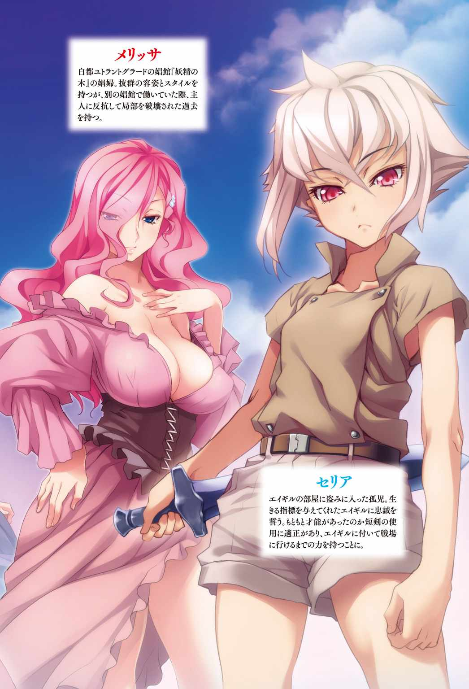
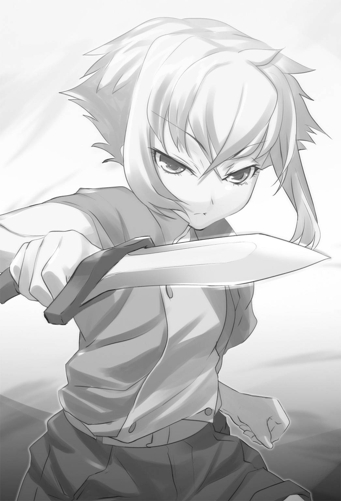

| 王国へ続く道2 (AVALON NOVELS) | |
| II of王国へ続く道 | |
| 湯水快 | |
| (2015) | |
B0195XENI2 EBOK


第一章 北へ
閉め切った窓から僅かに漏れる光を頼りに一口だけ水を飲む。
ごくりと飲み干すと俺は再びベッドに横になり目を閉じた。
鉄装騎兵に負わされた傷は案外に深かった。内臓に達しなかったのは盛り上がった筋肉と鎧が高性能だったせいだろう。薬を塗り、肉を食い、眠る。
宿を取ってからそれを三日繰り返し、ようやく少しばかり動けるようになってきた。
あの戦いの後、俺は進路をほとんどシュバルツ任せに北へと進み、アークランド北の隣国、［ゴルドニア王国］に辿りつく。
ゴルドニアは中央平原に散らばる国家郡の中でも有数の強国で人口一五〇万を有し、相応の軍事経済力を持つ国だ。特に同名の［王都ゴルドニア］は人口六万人を有する、中央平原最大級の都市だった。
強力な国力を誇るゴルドニア王国だが、北は中央平原の終わりを示す大森林を境にオルガ連邦と国境を接し他にも複数の国とも国境を持っている。
政治体制は封建色の強い王政で各貴族の権力が強く、王も彼らの影響力を無視できない。
現国王［ヒューベル二世］の平和的な――悪く言えば事なかれ主義の政策もあって周辺国との衝突は少なく国内情勢もそれなりに安定している。
そして今、俺のいるのはそのゴルドニア王国王都ゴルドニアだ。
怪我の上に馬に揺られてきた俺は適当な宿屋に飛び込み今に至る。
宿の人間は俺を心配しながらも面倒ごとは御免と冷淡な態度だった。
この場にマリアがいてくれれば断然早く治っただろうに。
傷もある程度癒えてきた四日目の夜、俺はキシリと床の軋む音で眼を覚ます。
ベッドに寝転んだまま薄目を開けて様子を窺う。招かれざる客は窓から侵入したようだ。
足音を忍ばせて俺の荷物をゴソゴソと漁っている。
暗くてよく見えないがかなり小柄なので子供か小さな女性だろう。
「財布はそこじゃないぞ」
「っ」
小さな影だ。月に照らされたその顔は十を越えたぐらいの少女だろうか、くすんでいるが珍しい銀髪をしている。跳ね上がるように飛び退き、窓際の壁に張り付いて睨んでいる。
俺はむくりと立ち上がる。腹の痛みも我慢できないほどではなさそうだ。
「くっ！」
少女は懐から刃渡り十cm程度の小さなナイフを取り出す。
こっそり物盗りするつもりだったのだろうが、気づかれた以上は殺してでも奪い取るのか。
「リハビリにはちょうどいいか、おいで」
少女は無言で身を低くして突っ込んでくる。
案外速いな、突きも鋭い。これはなかなか戦闘の才能がありそうだ。
油断をしていると大人でも喉を切り裂かれるかもしれない。だが俺には通じないな。
そう考えながら少女のナイフを叩き落とし、腕を掴んでベッドに押し倒す。
少女は暴れるが、ナイフを失ってしまっては体格で圧倒的に勝る俺を押しのけるのは不可能だ。
「はなっ！ 放せ！」
「うーん。まだ子供か」
抵抗を封じ、顎を良く見ると溜息混じりの声が出た。
美女ならこのまま犯してしまおうかとも思ったが、少しばかり幼すぎる。
子供を抱いて楽しむ趣味は無い。俺は少女の両手を押さえつけたまま話をすることにした。
最近女と満足に話していないので飢えていたのかもしれない。
「お前、名前は？ 何故忍び込んだ？」
理由なんて分かりきってるが話の種だ。聞いておこう。
「このっ！ このっ！」
少女はバタバタ暴れるが俺の拘束を逃れられる訳もない。悪あがきのように股間を何度も蹴り上げて来るが、その程度の力では快感すら感じるほどだ。
やがて無駄を悟った少女は抵抗をやめたが、俺を睨みつける目は放さない。
「話ぐらいはしてもいいだろう？ それとも無言を貫いて衛兵に突き出される方がいいか」
「――煤」
「煤？ 名前が煤なのか？」
少女は小さく頷く。まともな名前じゃない。
「髪が煤だらけだったから。襲った目的は金」
みもふたもないな。だが案外正直だったので好感する。
「何故金が必要だった？ 良い飯でも食いたかったか？」
「命令されたから」
ふむ、これはちょっと面白くなってきたぞ。
「誰に？ なんのために？」
「ミゲルに。お金を持っていかないといけないから。成果がないと殴られる」
子供を殴るか。不愉快な言葉に逆に興味が湧いた。
「詳しく話せ」
少女は真剣な目をする俺を気まずそうに見た後、ぽつぽつと話し始めるのだった。
「ミゲルには従わないといけない。理由は......わからない。でもやらないといけない」
「ミゲルとやらはお前の親か？」
少女は首を振る。
「違う。小さい頃に私を拾って......スリとか置き引きとか......してきた。体が大きくなったから今は空き巣も強盗もできる」
この少女は［ミゲル］の奴隷のような存在らしい。
拾ってと言うが恐らくは誘拐か何かだろう。子供に犯罪をさせて儲けを攫う訳か。
自分でやって捕まれば終わりだが、子供を使えばその心配もない。
少女は小さい頃からそう命令されてきて自分の意志がない。それが酷く気に食わなかった。
「お前は今の生活に疑問はないのか？」
盗みや強盗で生きるならそれも良い。他人がどう生きようと俺が文句を言うことでもない。
だが少女の言う『命令されたからやらないといけない』がひどく気に障った。
小さい頃の俺自身を見ているようだったからかもしれない。
「持っていかないと食べ物がない。殴られる」
盗んだ金を自分で使う。殴られないようにどこかへ逃げる。
どちらも思いつきもしないのだろう。
誰にも教えてもらえなければ人は自分に意思があることすらわからないままなのだ。
なら俺が教えてやろうじゃないか。
「お前は今のままでいいと思ってるのか？ 今よりいいものを食って、やりたいことをやって生きたくはないのか？」
キスをする時のように少女に顔を近づける。少女は顔を逸らさない。
「わからない。でもそんなことはできな――――」
「できるさ。お前が出来ないと勝手に思っているだけだ」
俺の目は決して優しくないだろう。困惑する少女に更に畳みかける。
「自分の頭で考えろ。できるできないじゃない。やりたいかやりたくないかだ」
少女の動きが止まる。
「私に今以外の生き方があるの？」
「あるさ。生き方は無限にある。お前に見えていないだけだ」
「.........」
少女は黙ってしまう。
「お前は今から俺に犯されたいか？ 無理やり押さえ付けられて滅茶苦茶にな」
少女は俺の胸を軽く押して抵抗する。
「いやだ。されたくない」
「それでいい。なら俺を撥ね退けろ。できないなら俺を説得しろ。大声を上げてもいい」
少女の手を取り、俺自身の胸をトンと叩かせた。
「.........戦えってこと？」
「お前がそうしたいならな」
俺がベッドから離れると少女は跳ね起きて窓際に転がるように移動した。
狙い澄ましてナイフを投げる。
少女の頭から数センチのところに鋼鉄製のナイフが突き刺さった。
先程少女が出したものとは違う、刃渡り三〇cmの人を殺すためのナイフだ。
「そいつをやる。俺にもう一度襲い掛かるか、売り飛ばして金にするか、それとも自分を縛る鎖を断ち切るか、考えて選べ」
少女はナイフを手にしばらく沈黙していたが、来たときと同じように窓から去っていった。
少なくとも俺に襲い掛かる選択はしなかったようだ。
ここで油断をさせてもう一度侵入する頭と度胸があればやられるな。
そう思いながら俺は眼を閉じた。
「体を洗った事もなかったのか......臭いなおい」
少女を押さえ付けたベッドから異様な臭いがする。
まったく、ミゲルとやらも下らない男だ。あの少女は汚れていたが顔立ちはかなり整っていた。
盗みなどさせずに丁寧に磨いて育てれば良い女になるだろうに。
そして十分に育ったら自分の女にするのだ。
俺がやっと眠りに就いた頃、再び窓が開きギシギシと音がする。
もう一度きたのかと驚いたが、先程と違って隠れるつもりはないらしく足音を立てている。
そうでなければ完全に油断していた俺が気づけるはずもないのだ。
「またか、一体――なるほどそういうことか」
少女の格好は先程のまま、俺が渡したナイフも抜き身で持っている。
違うのは全身に血を浴びていること、ナイフが血まみれになっていることだ。
「鎖は断ち切ったか？」
「思いのほか............脆い鎖だった」
彼女は自分を縛る鎖を断ち切った。手が僅かに震えている。
今まで絶対だった主人を手にかけたのだ。それも仕方のないことだろう。
「話せ。聞いてやる」
震える彼女を抱き寄せ、俺の胸板の上に乗せる。
ただでさえ汚れている少女に血の臭いまで混じってひどい臭いだが、今は気にしないでおこう。
「......貰ったナイフを持ってミゲルの所に戻った。そしたら酷く脅えた彼が剣を抜いて斬りかかってきた」
「抜き身でそれを持って帰ればなぁ」
こっそり後ろから首でもかき切ったのかと思ったが、堂々と正面から行くとは。
相手は大人の男なのだから返り討ちになってしまうぞ。
「数度避けて話をしようとしたけど、罵りながら叫ぶばっかりだった。話も聞いてくれない」
「まぁ子供の陰に隠れて儲けるような小さい男ならそうだろう」
少女が言葉に詰まったので俺はポンと頭に手を乗せてから撫で回す。髪もべたべただ。
彼女は驚いてこちらを見た後、続ける。
「振り回す剣を避けていたけど、だんだん逃げる所がなくなってきたから......」
簡単に言ったが大したものだ。普通の少女は大人の振り回す剣を避けられない。
「利き手を切って、剣を落とした」
「ははは！ 大したもんだ」
俺が笑ったのが嬉しいのか少女は少しだけ笑みを見せた気がする。
「悲鳴がうるさくて人が集まると思って......止めを刺してここにきた」
こんな子供に殺されるミゲルが情けないのか、彼女が才能に満ちているのか。
「肝心なことを聞いていなかったな。お前は何を選んだ？ 今の話だと襲ってきた男を殺しただけでお前の意志がないぞ」
自分の身を守るだけでは本能で生きる獣と同じだ。
「私は......ミゲルの剣を躱してあの場から逃げることもできた。剣を奪った後......ナイフを喉元に突き立てたのは私自身の意志、あの男が......嫌いだったから。離れたかったから」
「そうか。ならいい」
俺は少女を抱き締める。
「心配するな。その男はカスだ。お前のやったことを俺は認めてやる」
少女は俺に抱かれるまま動かない。だが最初の震えは止まっていた。
これで彼女は落ち着いただろう。だが一つ疑問が残る。
「なぜ俺の所に戻ってきたんだ？」
飼い主を殺した狼は素早く去るものだ。かつての俺のそうだった。
「私はあなた以外の人間を知らない。だから聞きたい」
よくわからないが、彼女の目は真剣だ。話を聞いてやるべきだろう。
「何を聞きたい？」
「私に価値はあるか？ あなたは私を手に入れたいか？」
言葉は足りず、直球過ぎる。だが意思は伝わった。
「勿論だ。お前はなかなかいい動きをしていたし、何より可愛い女と言うのはそれだけで価値がある」
少女の顎に手をやり、上を向かせる。やはり顔は整っている。磨けば輝くに違いない。
「そう、なら私を支配して欲しい」
「なに？」
支配とは穏便ではないな。
「私に抵抗すること、選択することを教えたのはあなただ」
「それと支配することに何の関係がある？」
真剣な目は一点の曇りもない。
「私は今までの生き方を壊した。あなたは私に新しい生き方を教える義務がある」
そんなものはない。そう思ったが確かに今までの生き方をぶっ壊す扇動をしたのは俺だ。
このまま放りだして別の悪人に飼われるというのも気分が悪い。
俺の物にするのもやぶさかではないが、まだひっかかる。
「それだと今までと変わらないんじゃないのか？」
鎖を断ち切ったつもりが別の鎖につながれるのでは何の意味も無いのだ。
「違う」
口調ははっきりとしていた。
「あなたに支配されたい。あなたと共に生きたい。それは私の意思だ。私が決めたことだ。自らの意思で支配される。これは自分で生き方を選択していないのか？」
少女は自らを鎖で縛って錠をかけ、その鍵を俺に預けると言うのだ。
歪ではあるが一応選択しているのだろうが......これ以上は哲学論議になりそうだ。
いずれ世界を知り、飛び立ちたいと思うならば俺が錠を外してやればいい。
それまでは手元において守ってやろう。ついでにもう少し育ったら味見させてもらおう。
「俺はここで落ち着くつもりはない。付いてきたら死ぬかもしれないぞ？」
試すように少しばかり脅してみるが少女にはもう迷いもないようだった。
「構わない。ここにいても同じこと。私はあなたに従いたい。どこまでも一緒に行きたい」
俺は手を差し出す。握手するつもりだったその手の前に少女はひれ伏してキスをする。
支配されるというのはこういうことらしい。
「では私はあなたに従う.........ええと」
「エイギルだ」
「エイギル様」
様はいらないと言ったが彼女は聞かない。
自分はあなたに生き方を教えてもらい一緒に行かせてもらう。
様付けは当然だ、ということらしい。
人に従われるというのは居心地が悪い気もするがこれも彼女の意思なのだとあきらめる。
「それでお前の名前は？」
「煤」
そうだったな。だがそんな呼び方をしたくない。
「それは名前じゃないだろう」
そんな名前があってたまるか。
「煤以外には『お前』『貴様』『こいつ』と呼ばれていた」
どうやら名前もなかったらしい。
「それは人の名前じゃない。――そうだな、お前の名前は［セリア］、今日からお前はセリアだ」
「セリア.........セリア.........今日から私はセリア。エイギル様に貰った名前......」
少女――セリアは何度も噛み締めるように名前を呟く。
実は前の通りで肉を売っていた女の名前なのだがそんなことは言わない。
胸が最高にでかくて怪我をしていなければ口説いている所だった。
お前の胸が大きく育つようにとの願いがこめられた名前だから悪く思うなよ。
話は決まったかと思ったが、セリアはまだ話したりないことがあるようだ。
「私はどのようにいればいい？」
セリアはクイと首を斜めに傾けて言う。
可愛らしい仕草だ。身長差から上目使いになっているのも良い。
「なんのことだ？」
「私はエイギル様にどう支配されればいい？ 情婦？ それとも奴隷？」
自分の立場が気になるのか、変なところで真面目なやつだ。
奴隷はともかく、情婦という響きには惹かれるが、セリアはまだ少し成長が足りない。
背は俺の胸にも届かず、胸も薄く、尻も小さいのでは夜の相手をさせても面白くないだろう。
かといってカーラやミレイのような対等の仲間というのも違う気がする。
「ふむ......それならお前は俺の従者だ。俺の指示に従い、役にたってもらう。代わりに生活の面倒は見るし、守ってもやるよ」
「従者............わかりました。精一杯努力します」
突然セリアは敬語になった。彼女の中での従者のイメージはそういうものらしい。
「ではさっそくお前に指示を出そう」
セリアは背筋を伸ばして備える。
「井戸で水を汲んで来い。その水で体を洗え。髪の毛も忘れるなよ」
季節はもうすぐ冬、水浴びにはつらいかもしれんがセリアはあまりに汚すぎたのだ。
正直抱き締めているだけで痒くなってきた気がする。
朝になったら湯を頼んで徹底的に体を洗わせるとしよう。
翌日、綺麗になったセリアの銀髪はとてもとても美しかったのだった。
セリアとの出会いは俺にとってもありがたかった。
食糧調達や体を洗う湯の準備をセリアが行ってくれたおかげで俺は怪我の治癒に専念することができたからだ。その甲斐もあってここに着いてから十日目、セリアと会ってから六日目には俺の傷もほぼ塞がる。
「セリア。お前のおかげで治療に専念できたよ。助かった」
だがセリアは浮かない顔でしょぼくれている。ハの字に寄った眉が可愛らしい。
「私がエイギル様の役に立つのは当然です。それなのに、私の知識不足でご迷惑をおかけして申し訳ありませんでした」
セリアは町の中で生きてきただけあってそれなりに知識は持っているようだが、奴隷生活のためか若干常識に欠けるところがあった。
俺の従者になったその日、血にまみれた服で出歩くわけにはいかないので「新しい服を買っておけ」と、俺の服と金を与えたのだが、主人の服を着るわけにはいかないと言って全裸で服を買いに行き、一騒動起こしてしまったのだ。
いたいけな少女を性奴隷にしていると噂が立ち、最初の宿を追い出された。
次の宿の方が設備も部屋もよく、結果的には良かったのだが。
「なんにせよ感謝している。ところでこの町にいるのも今日で最後だ。旅の準備は大丈夫か？」
いよいよ明日はオルガ連邦に向けて出発となるのだ。
冬でも比較的温暖な中央平原とは違い、厳寒のオルガ連邦へと入るにはそれなりの準備が必要だ。ましてセリアのような子供は体力も無い。俺以上にしっかりした準備が必要だろう。
「エイギル様には服や毛布など色々なものを買っていただきました。絶対に耐えて見せます」
ムンと細い腕でやる気を示すセリア。俺が気を付けてやれば良いか。
「さて景気づけに酒でも飲みに行こう」
「お供いたします」
ぴったりと腕にくっつくセリア。腕を置くのにちょうどいい位置に頭が来るので撫でてやると困惑顔になった。もっと表情が豊かになるよう、いじり回してやるのもいいかもしれない。
訪れたのは固茹亭という――二階部分が宿、一階が食堂兼酒場になっている店だ。ゴルドニアは豊かな街だけあって酒の種類も豊富で味もいい。
俺はきつい蒸留酒を呷り、セリアは蜂蜜を垂らした弱い酒をちびちびと飲む。
「蜂蜜酒は甘いからいくらでも入るが無茶するなよ。前みたいな惨事になるぞ」
「あぅ......あんな醜態はもう晒しません。次は勝って見せます！」
酒に勝つと言う発想が既に怪しいんだけどな。
彼女はいくら飲んでも表情をまったく変えない割りに強くは無い。
数日前、初めて酒の相手をさせた時は、俺と同じ酒を飲み、引き締まった顔のままポテンと横倒しになって内容物を噴射した。顔色が変わらないから大丈夫と思ったのだが。
「嬢ちゃん。酒は友だ、無理して飲むものじゃない」
マスターはそう言いながら蜂蜜が載ったクッキーをセリアの前に置いてくれる。
セリアは子供扱いされたのが気に入らないのか、不機嫌な顔になったが、一口クッキーを齧った後、無言で黙々と食べ始めた。まぁ子供には酒よりも蜂蜜クッキーの方が似合うか。
少しだけ赤くなった顔で黙々とお菓子を食べるセリアを見ながらマスターと雑談する。
「この時期に連邦に行くとはてめえも物好きだな」
「冬のオルガ連邦ってのも見てみたいからな」
マスターは手を広げて『馬鹿な奴だ』と呟く。
「どうしても行くって言うのならノーステリエス河に沿っていくべきだ。あの地域ならまだ寒さも耐えられるレベルだからな。それに船も使えるから速い」
なるほど、船を使うのも一手か。だが俺は連邦の北部も見てみたいのだ。
「できれば連邦の北部にも行ってみたいんだがなぁ」
するとマスターは小馬鹿にした雰囲気を消し、真剣な顔で言う。
「冬に北部へ行くなんて正気じゃないぞ。町と町の間隔も広い上に、頻繁に雪の嵐が起きる。巻き込まれたら人も動物もたちまち生きたまま凍って氷の彫像さ」
マスターはあそこは氷の地獄だよ、と悲しそうな顔で呟いた。
彼は連邦北部出身で若い頃ゴルドニアに移住してきたらしい。
連邦は強固に確立した封建制があるので農民が故郷を捨てて移住することは簡単ではない。
逃げるように故郷を飛び出し、中央平原に渡って身一つでこの宿を興し家庭を持ったそうだ。
大した男だと最初は尊敬の念を持ったのだが彼の嫁が今年十七だと聞いて一気に覚めた。
ちなみに彼の名は［アンドレイ］、今年四十になる髭の立派なダンディ大男だ。
結婚したのは三年前、同じく連邦出身だった［ナタリー］を見るなり一目ぼれしてプロポーズしたらしい。
恥ずかしそうにこちらにお辞儀したナタリーは確かに美人だが俺の胸辺りまでしか背はなく、胸も尻もまるで子供のような女性なのだ。十三ぐらいだというセリアと並べても身長は同じで胸と尻はセリアに分がある程だ。
今でこれなのだから三年前はどんなだったのか。
俺の頭の中に小さな幼女の手を取り、結婚を迫る変態中年が浮かぶ。
「悪いことは言わねぇ。嬢ちゃんもいるんだから安全な河を船で行くんだな。それとこいつを使いな」
モコモコの毛皮のコートを二着、俺に渡す。
一見、ただのロングコートだが内側は二重構造になっており中に羽毛が入っている。
当然重く、普段使いするには厳しいコートだが冬のオルガ連邦を行くにはこれぐらいは必須なのかもしれない。
「連邦北部の人間ならばこれぐらい皆持っている。このコートは俺が昔使ってたもんさ。もう北に行くことはないからくれてやる」
マスターは遠い目をして、自分も酒を少しだけ呷る。
コートが二着あることに俺は言及しない。遠くを見る目には少しばかりの哀愁も漂っていた。
その姿は男の俺が見てもさまになっており、ウエイトレスの女性も顔を赤くして見惚れていた。
だが彼女の想いは届かない。男を虜にする立派な胸と肉付きのいい体のせいだ。
「嬢ちゃんが凍傷にでもなったら可哀相だからな。勿論金はもらうぞ」
「あぁ。厳しい旅になりそうだし、助かるよ」
しばらく酒を飲み交わし、夜も更け俺たち以外の客もいなくなったところでマスターは「本日は閉店だ。飲み終わったら戻りな」と言い残し奥に引っ込んでいく。
ナタリーがそろそろ子供を欲しがっているらしい。きっと現場は山賊に犯される哀れな少女の図となっているのだろう。
「エイギル様。私たちもそろそろ戻りましょう」
クッキーを食べ尽くしたセリアが顔を上げる。そうだなと腰を上げようとした所で横合いから声がかかった。
「夜分に失礼する」
二人の男、武装はしていないが身なりは良く、動きには隙がない。
セリアは腰の後ろのナイフに手をかける。
「我々は怪しいものではないさ」「君に話があるのだ」
男達は戦意はないと両手を前に出した。
「深夜に急ぎの用とは随分と怪しいものだが」
まして俺は流れの人間、声をかけてくる知り合いなど居る筈がない。
「それについては詫びるが、今でなければ君に会えないと思ってね」
彼らは俺たちが明日町を発つことを知っているらしい。怪しさ倍だが、武器ももっていないし、いきなり殴り合うのもどうかと思う。
「手短に頼むよ」
話ぐらいは勝手にさせて置けば良いだろう。セリアに目で合図しておとなしくさせる。
「我々は傭兵団［夜明けの翼］の人間だ」
「そして君の.........エイギル殿の能力を高く買っているのだ」
怪しさは限界を突破だ。傭兵団の人間に名乗った覚えなどない。
「今、ゴルドニアでは傭兵団を集めている。周辺地域での盗賊団撃滅とオルガ連邦に対抗する戦力増強のためだ」
「我々の団も王国と契約し団員の増強を進めているのだ」
なるほど俺のトリエア王国での噂を聞きつけて勧誘に来たというわけか。
だが.........と彼らは付け加える。
「盗賊団の討伐など軍だけで十分だし、オルガ連邦との関係は良好だ」
なんだそりゃ？ 意味がまったくわからなくなった。
「名は明かせないが我々はある高貴な方の意向を汲んで動いている」
「建前の部分で傭兵の数を集め、ある事に備えているのだ」
それは大層なことだ。是非とも頑張ってくれ。俺には関係ない。
「何故それを俺に明かす？」
「君のように特に高い評価をした人間には建前を除いて話すことにしている」
「勿論、真の理由についてはここでは話せない。我々と共に来てくれると決断してからになる」
「俺たちが明日この国を発つことは調べがついているんだろう？」
彼らの情報収集能力は確かなようだ。ならばこそ今言う意味がわからない。
「無論知っている。我々としては今すぐに参加してくれるのがベストだが、夜明けの翼は成立したばかりで形にするにはまだ時がかかるだろう」
「エイギル殿には我々が君を高く評価しているということを知っておいて欲しかったのだ」
随分と余裕のある傭兵団だ。俺の知っている傭兵はこんなではない。
「旅を終えた後でいつでも気が向いたらおいでと？」
相当に虫のいい話で、その分胡散臭さも高くなる。
「時期を逃せば無意味になる。我々は王都郊外に拠点を構えているから出来るだけ早くきてくれることを祈るよ」
話は終わりだと男達は立ち上がる。俺もセリアを連れて戻ろうとする。
すると後ろから男の声がかかった。
「君は優秀な戦士だ。だがそれ以上の高みに昇りたいのならこれは好機だぞ！」
俺は何も答えず、セリアの頭を撫でながら宿を出る。
部屋に戻り、ベッドに仰向けに寝転びながら先ほどの男の言葉を思い出す。
俺の目的は自分の王国を手に入れること、そしてルーシィを手に入れることだ。
その為には肉体的強さだけではなく権力も必要になる。そのきっかけになるのだろうか。
「気になっておられるのですか？」
隣のベッドに座るセリアが声をかけて来る。
「私はあなたの行く先、どこにでもついていくつもりです」
セリアの頭を撫でてやると恥ずかしそうに身を縮める。気が利く上に可愛い奴だ。
これで豊満な美女ならすぐに組敷いて裸に剥いてしまうのだが。
俺の想いに気づいたのか、セリアはこちらのベッドに入ってくる。
「伽をしましょうか？ まだ育ってないですけど一応女ですし、何もないよりは......あうっ！」
服を脱ぎ始めた彼女のデコを指で弾いて戻らせる。どうもセリアとそうなる気にはなれない。何より着替えの時に見た、膨らみの無い胸に乳首だけがあるような体では抱き甲斐もない。
一瞬マリアの怒り顔が浮かんだが気のせいだ。
怪しい男達の言っていたことも今考えるのはよそう。色々悩みながら旅をして氷の彫刻になったら笑い話にもならない。旅の途中で答えが見つかるかもしれないしな。
いつの間にか俺のベッドで寝息を立てているセリアから手を離し、俺も目を閉じた。
翌日俺達は固茹亭を出発する。後ろではマスターが見送ってくれていた。
「無事に帰ったらまた来い。嬢ちゃんも連れてな。必ず育つ前に連れて帰るんだぞ！」
また来る時はセリアには俺の傍を離れないように言っておこう。
シュバルツはこれでもかと毛皮をかけられて暑そうだが久しぶりに女が一緒なので機嫌はいい。
二人と一頭は北へ向かって歩き始めた。
「うーむ」
俺はシュバルツに乗り森の道を歩く。後ろからはセリアが必死に追いかけてくる。
「大丈夫です！」と叫ぶが充血した眼に口から泡を吹きながら走る様子はとてもそう見えない。
最初はセリアも乗せようとしたのだが......。
「主人と一緒に馬に乗るわけにはいきません。遅れはしませんからどうぞ騎乗して下さい」
その結果がこれだ。シュバルツがぶるると啼いて、さっさと乗せろと言っている。
俺に罪悪感、セリアに苦しみ、シュバルツに男のケツ。三者全員に何もいいことがないのでセリアを掴み上げて俺の前に乗せた。
「私まで乗っては馬が疲れて遅れます！」
セリアは叫ぶがそれは間違いだ。シュバルツは軽いお前が乗ったぐらいで何の問題も無いし、そもそもおまえを気にしてゆっくり歩いていた。
彼女が乗った途端に満足げに首を振り、速度を上げたシュバルツを見て彼女も気づいたのか荒い息を吐きながらしょぼくれる。
セリアには俺が盗賊のクレアから取り上げた鋼の剣と俺が持っていた盾を与えている。
彼女には少しばかり大きいが、振らせて見ると意外に良かったのでそのまま持たせている。
まだ技量はないが、剣のセンスだけならば非凡なものを持っているようだ。
俺たちが今歩いているのはゴルドニアから北、中央平原の北端にして連邦との国境に広がる大森林地帯を貫く街道だ。直線距離百kmを超えるこの森林は連邦と中央平原を結ぶ重要な道で街道としては整備されている。ただ左右には見通しのあまりよくない森が広がるため盗賊や侵入した未開人による被害が度々報告されてもいる。
「いざと言う時は私も戦います！」
と意気込むセリアを足の間に乗せて可愛い尻の感触を楽しむ。
シュバルツは背中一面に載せられた毛皮越しに、少女の足の感触を楽しんでいるようだ。
ふと俺とシュバルツが似ているのではないかと言う妄想が浮かぶがそんなことはないのだ。
延々と続く一本道を歩いていく。
さすがに中央平原と連邦をつなぐ一本道だけあって昼の間は頻繁に人とすれ違う。
街道沿いには随所に宿場があり粗末だがベッドと水とその他旅に必要な物品が購入できるようになっている。そのおかげで俺たちは最低限の荷物だけを持ち運ぶことで旅を続けられているからありがたいことだ。以前訪れたシーラ村への道とは根本的に違う。
連邦とゴルドニア王国の国力を見せ付けられている気がするな。
「お前のおやつも買えたしな」
リンゴを取り出し、セリアに差し出す。
「そんな！ 私なんかエイギル様の残り物で、もがっ！ んむんむ......」
遠慮するセリアの口にナイフで切ったリンゴを入れると幸せそうな顔になる。
子供は美味い物を食って笑っていれば良い。いずれお前が育ったら俺が美味しく食べるのだ。
日が暮れ始め、俺たちは最寄の宿場を見つけて今日の旅を終える。
宿場には俺たちの他にも幾人かいるようで馬小屋には複数の馬と幌付きの馬車が止まっている。
「ベッドは空いているか？」
「おお、今日は多いな！ あんたらで最後さ。運がいいな」
宿泊代を払いロビーで持ちこんだ飯を食う。
大抵の宿場では飯は出ないし、ベッドも一つの部屋にまとめておかれ居心地が良いとは言えないので眠る直前まではロビーで過ごすことが多い。そこで交わす宿泊客同士の会話にも有用な情報があることもあるのだ。
俺もセリアを伴って会話に参加したが、今回は外れのようだ。
「お前も傭兵か？ 随分とでかい槍を持ってるが見掛け倒しは命を落とす原因だぞ！ 俺のように長年戦場をかけた傭兵は――――」
先ほどから俺に傭兵の心得を語っている男は［ゴンド］と言い、自称歴戦の傭兵らしい。
自身の英雄談が次々と出てくるが、具体的な地名国名は覚えていないという不思議な男だ。
激戦で負傷しては奇跡的に助かっていたらしいが体には傷一つ残っていなかった。
「おおぉ！ なんとそれは素晴らしい！ なんという武勇、正に鬼神のごとし！」
ゴンドの話に大げさに反応している男はルーグと言い、商人だそうだ。
そして部屋の隅には三人の女と一人の大男が座っている。全員に首輪がついており大男は腕に焼印が押されている。ルーグは商人と言っても奴隷商人、彼らは商品と言うわけだ。
奴隷制はオルガ連邦、ゴルドニア王国共に合法であり、ルーグのやっていることは犯罪ではない。ルーグは連邦からゴルドニアに商売に向かう途中だそうだ。
気持ち良く武勇伝を語っていたゴンドが話を止め、彼の商品を含みのある目で見る。
「ルーグと言ったか？ お前は俺の強さをよく分かってるようだな！ ......そこで相談なんだがお前の奴隷達はなかなかいい女じゃないか。俺は近い将来かならず大物になる。今のうちに投資しておくのも悪くないと思うが――」
暗に商品の女を抱かせろと言うゴンドにルーグはまたも大げさに反応する。
「いやいや、あなた様の武勇伝誠に見事でした！ ただ今日連れている女たちは見ての通り器量良しばかり、しかも全員処女にございます。王都の市なれば金貨百枚はするような上玉ばかりにございますればそう易々とは......」
「金貨百枚だと!? そんな馬鹿な価格があるものか！」
「いえいえ、特にこの上玉が処女となれば貴族様も食指を動かされますかと」
ルーグが自慢げに一人の女性を立たせる。ゴンドの武勇伝とルーグの大げさなべんちゃらに飽き飽きしていた俺の心が沸き立つ。
ルーグによると彼女の年齢は十七歳。奴隷とはいえ、見た目に気を使われているのか、腰まで流れる茶色の髪は美しさを失ってはいなかった。背は並といったところで全体的にスラリとした体形。見世物のように晒されて若干俯いているが一目で間違いなく美人、それもかなりの美人だとわかる。
何より目を引くのがその巨大な胸、服を破らんばかりに押し上げるそれは俺が今まで見た中でも一番でかいだろう。身じろぎするたびにぶるんと揺れるとんでもないサイズだった。
彼女の横にいる二人の娘も悪く無く、むしろ美人の部類に入るが霞んでしまっている。
それも仕方がない。彼女の胸はでかい、でかすぎるのだ。
「その他の娘もなかなかの上玉ですからな。味見をされてしまいますと価値が落ちてしまいますので.........勿論この娘金貨百枚、他の娘金貨五〇枚出して頂けるのでありましたら今すぐにでもお渡し致しますので、好きなだけお楽しみ頂けますが？」
一介の傭兵がそのような大金を持つはずもない。ゴンドはぶつぶつと言いながら黙るしかなかった。奴隷は持ち主の所有物、盗むのは勿論傷つければ賠償のみならず衛兵に捕まることもあるのだ。
ゴンドの未練がましい視線を断ち切るようにルーグはだめを押す。
「このような上玉ですから色んな虫が寄ってまいりまして、この男に番をさせております」
奴隷の大男は娘達の番が役目らしい。大男はゴンドをジロリと睨む。
歴戦の傭兵様は丸腰の男の視線に怯えてすごすごとベッドに向かっていった。
「貴方様も随分と美しい少女を連れておられますが、ご関係を聞いてもよろしいですか？」
ゴンドを追い払ったルーグが視線をこちらに向ける。セリアは露骨に嫌そうだった。
「俺の従者だよ」
「ほほぅ。愛らしい従者でございますな！ 旅の供には最高でございますな」
夜毎に楽しんでいるんだろう？ 少女趣味ですな？ と下卑た笑みを受かべる。
セリアの歯を食いしばる音が聞こえる。手が腰の――ナイフに回っていた。
もう少し巨乳娘を見ていたかったがそろそろセリアが爆発するのでこの辺にしておこう。
「あんたの娘達はなかなかの美人揃い、眺めているのも悪くないが、この子はそろそろ寝る時間なんでな。失礼させてもらう」
「それは残念です！ 貴方様も、もし金貨百枚.........」
俺は答えず手を振ってセリアと共に寝室に向かう。金貨百枚は持っている。
あの巨乳娘に出すなら惜しくは無いが奴隷を買ったりしたらセリアの目が痛くなるだろう。
自分を慕う少女の前で盛った獣の姿を見せるのは抵抗があるし、俯く女を金で奴隷にして好き放題してもつまらんからな。隙あらばこの商人から奪ってやるのだが。
ベッドは大部屋にまとめられているので奴隷を除く全員が同じ部屋で寝ることになる。
旅では女に縁がない男も多く、セリアにちょっかいを出す愚か者がいないとも限らない。
「セリア、俺のベッドに来るか？」
「えっ？ は、はい！ よろしくお願いします！ 頑張ります！」
伽をさせる訳じゃないから頑張らなくていい。
少々肌寒いのでセリアを正面から抱きしめる。まだ子供だからか、彼女は体温が高くて温かいのだ。ぎゅっと抱きしめると更に温かくなるのもいい。
俺が腕の中の温かさを楽しんでいるとセリアが恐る恐る背中に手を回してきた。
「エイギル様......」
胸元から上目遣いで見つめてくるセリア、男の胸板に埋まったセリアは嬉しそうに顔をこすり付けている。やがて胸元に柔らかい感触と僅かの湿り気を感じる。
「んっんっ」
セリアが小さな唇で胸元にキスをしているらしい。
結構な期間女断ちしているせいで、少女の薄い体にも反応して股間に血が集まってしまう。
「あんまり密着すると犯してしまうぞ？」
言いながら勃ちあがった肉棒をズボン越しに押し当てる。
「ん......」
セリアは何も言わずにシーツを口に入れて噛み締めた。
声が漏れないようにか。冗談なんだが覚悟されると言い出しにくいな。
短期間でここまで俺に惚れてくれるとは、今まで最低男しか見ていなかった反動だろうか。
その時、夜を裂くようなシュバルツの嘶きが響きわたる。
あいつは夜中に何をやっているのだと身を起こすが、続いて他の馬の嘶きも連続して聞こえる。
俺とセリアは目を見合わせ、すぐに武器を手に取った。鎧を着る時間は無い。
明らかに何か異常事態が起こっているのだ。
異常に気付いた男達もガチャガチャと武器を用意している。
この街道は警備隊が定期的に巡回していることもあって比較的安全だが夜は別だ。
夜のうちに襲撃し、朝が来る前に森に逃げれば警備隊の目に付くことも無い。
盗賊か、もしくは蛮族共の集団と言うこともある。
奴らは森の中をやってくるので軍もなかなか発見できないのだ。
皆、武器を手にロビーへ向かう中、伝説の傭兵だけが熟睡してたので頭を蹴飛ばす。
こんな奴でも盾ぐらいにはなるだろう。
俺は窓の外を窺う、襲撃ではなく唯の馬泥棒の可能性もあるからだ。
だが窓の外には十人以上の人影が見え、宿場の周りを包囲している。
包囲している時点で馬泥棒ではない。目的が俺たちであることはあきらかだ。
「包囲されている。戦いになるぞ」
俺は全員に外の様子を告げ、戦闘準備を促がした。
「俺はエイギル。傭兵だ」
「ブルーノ同じく傭兵」
傭兵は重要な戦力になる。俺の他にもいたとは有難い。
「――だここの主人、槍は使える」
「――です。行商人で戦いはちょっと......」
彼らにはあまり期待できないだろう。
「私は戦いなどできん！ 代わりにこの奴隷が!!」
「マックだ」
ルーグはそれだけ言って縮こまってしまった。マックという大男は俺よりも頭一つ高く、二ｍを優に超える。戦闘経験に拘わらずこれだけでかければ戦力になるだろう。
「遅れたな！ 我が名はゴンド！ 数多の戦場を駆け、数知れぬ武功をぐごっ！」
ゴンドの口上は蹴っ飛ばして中断させ紹介を終える。次に余計な手間をかけさせたら叩ききってやろうと思う。実質戦闘可能なのは三人、さて何人生き残れるか。
本来はセリアと俺自身を守りきればそれでいいのだが、あの超巨乳娘はなんとか守りたい。
あの乳は人類の宝だからな。
「敵の数は少なくとも十人以上なのでしょう。数ではこちらが不利です。ここは籠城して夜明けを！」
行商人の何某が叫ぶが、そうもいかない。
「籠城は無理だ。俺が外の奴らなら火でもつけて炙り出す」
そしてどうやら敵も事を迅速に進めるようだ。既に至る所から煙が入ってきていた。
悲鳴が上がる中、マックが主人に命令されて外への扉を開けようとするが、俺は彼の肩に手をやってそれを止める。火をかけて待ち伏せしている相手に対して唯一の出口から出るのは愚か過ぎる。剣を持ったブルーノと槍を持った店主に合図を送り、ゴンドを突き飛ばし、扉から外に放り出す。
「何を――ぎゃあぁぁ!!」
奴が外に飛び出ると同時に、立て続けに矢が刺さり、続いて数本の槍が体を貫く。
歴戦の傭兵は醜い悲鳴を上げて息絶えた。
「今だ、いけ！」
俺と店主、そしてブルーノという傭兵はハリネズミのようになったゴンドの脇を走り抜ける。ゴンドに槍を突き出していた男達は四人、ブルーノと店主が一人ずつ、俺が二人を切り倒す。
奴の犠牲のお陰で完全な奇襲になった。ゴンドはあの世で語れる良い武勇伝ができたな。
「弓隊を叩け！」
ブルーノが叫ぶ。正解だ、弓で狙われていると身動きがとれない。
敵は弓を構えるがゴンドに全員が射掛けたのかすぐに発射できそうな奴はいない。
俺が一気に接近すると慌てて弓を捨て、剣に持ち替えようとするが手遅れだ。
二人を両断しもう二人の頭を叩き割る。これで弓は潰した。
だが敵の人数は思った以上に多かったようだ。
後方で上がった悲鳴に振り返るとブルーノと宿場のおっさんがそれぞれ二人を相手に斬り結んでいる。小動物的な叫び声をあげて行商人が地面に引き倒され滅多刺しにされている。
更に五人ばかりの男がブルーノとおっさんを突破して女達の方へ向かう。
間に合うか？ 俺は全力で走るが奴等の方が早い。だが思わぬ援軍が現れた。
三人の奴隷女に迫る敵の前に壁ができる。
それは高速で動く木でできた壁、マックが厚い木製テーブルを持ち上げて振り回しているのだ。
武器とは到底言えないそれだが当たれば即死してもおかしくない重量を持つ。
しかも足を掴んで天板を前に振り回しているのでマックに攻撃が届かないのだ。
「うまいことやる！」
だが危機は終わらない。
二対一で戦っていたおっさんが遂に力尽き、胸に槍が突き刺さる。
傭兵ブルーノは一人を切り捨てたが、すぐに二人が追加され他の援護に回るのは厳しそうだ。
マックの前に五人、ブルーノの前に三人。
どちらを援護するか一瞬の迷いが生じた時、状況は変化した。
マックの振り回すテーブルの下を転がるように飛び出す影。正体は俺のセリアだ。
小さなセリアは攻めあぐねる敵の足首を這うようにして切りつけた。
二人の敵が足を切られて倒れ、気を散らした一人がテーブルに弾き飛ばされる。
残る二人が目標を変えて小さな影を切り殺さんと剣を向けた。
だがもう心配はない。
「よくやったな」
既に俺は目の前にいる。全力で振りかぶったバルディッシュが一人を両断、横ではなく、頭から股間まで縦に両断したのだ。
信じられないような量の血が飛び散り、体内の全ての物を撒き散らしながら湿った薪が割れる。残る一人は完全に心を折られたのか悲鳴を上げて逃げ出そうとするが、足元から突き出された剣に喉を貫かれ絶命した。
一方、ブルーノもついに最後の敵を切り倒し、セリアに足を切られて這いつくばっていた二人はマックがテーブルを叩きつけて潰れた果実に変えてしまう。
ブルーノはなかなかやるな。一対三で相手を皆殺しとは。
死体を調べるとどうやらこいつらは唯の盗賊ではなく東方から来た蛮族の類のようだ。
槍や剣で武装しているのはここへ来るまでに盗賊なり、開拓村なりを襲撃していたのだろう。
本来彼らは金属製品を持たないのだ。
結局女奴隷三人に怪我は無く、セリアも転がった時に膝を擦り剥いただけだった。
ブルーノもマックもほぼ無傷、おっさんと行商人何某が殺されたが人数の割には善戦と言っていいだろう。そういえばルーグはどこだ？
「ここに転がってるぞ」
ブルーノがマックの後ろで気絶しているルーグをつつく。
どうやらマックの振り回すテーブルに当たって気絶したらしい。鈍くさい奴だ。
「............」
マックの顔色が悪い。主人に手を出した奴隷は大抵の場合は処刑される。
今回は止むを得ないのだが、そういった不可抗力を受け入れる主人は少ない。
「お前、こいつに恩義はあるか？」
たまに良好な関係の奴隷と主人もいるからな。
「――ない」
ならば話は早い。マックは勇敢に戦い、人類の宝たる超巨乳を守った。
こんな汚らしい男の為に死ぬのはもったいない男だ。
ブルーノと俺はルーグを掴むと既に火が回り、燃え盛る宿場の中に放り込む。
まったく需要のない豚の丸焼きができるだろう。
「彼は蛮族の襲撃に驚いて頭を打ち気絶した」
「そしてそのまま焼け死んだ。悲惨な最期だったな」
俺とブルーノは握手を交わす。なかなかに気が合うやつだ。
「セリアもよくやってくれた」
頭を撫でると困ったように少しだけ微笑んだ。彼女には思いのほか戦いのセンスがあるようだ。
「さて問題は後始末だ」
ブルーノが切り出す。ルーグが蛮族に殺された以上、その所持品は遺族に行くのが法の定めるところだが、残念ながら今回彼の所持品は蛮族に持ち去られてしまったことにする。
つまり女奴隷三人とマックの扱いが問題となるのだ。それに宿場が蛮族に襲撃されたことも伝えないといけない。
「ゴルドニアに向かう俺の方が軍の詰所に近い。襲撃は俺が伝えよう」
ブルーノはゴルドニア王国に向かう。次の宿場までの距離的にもそれがいいだろう。
「俺はゴルドニアへこいつは連邦へ向かう。お前たちはどっちについて行きたい？」
ブルーノが女三人、そしてマックに問うた。
「私は連邦に戻りたい......です」
「私もっ！」
「エイギル様にご一緒させて頂きたく」
そうだろうなと思った。ルーグは連邦から来たのだ。
彼女たちは連邦で「仕入れ」られたのだろう。
どんな運命が待つにせよ、少しでも故郷の近くで過ごしたいと思うことは自然だ。
それに俺はセリアを連れているので女にとっては安心できるのかもしれない。
「俺は――ゴルドニア王国に行きたい」
マックはゴルドニアに向かいたいそうだ。ブルーノが少し顔をゆがめる。
そりゃそうだろう、俺の方には美女三人、自分にはガチムチマッチョの大男だ。
「それじゃあルーグの馬車はお前が使え、女三人を真冬に歩かせる訳にも行かんだろ」
幸いにして馬屋は燃えておらず、ルーグの幌付き二頭立て中型馬車と行商人のロバが残っていた。これではあまりに俺に有利すぎるのでルーグの財布にあった金貨四〇枚は全てブルーノに渡したが、ブルーノは半分こちらに投げてよこす。
「総取りはよくない。これで共犯って奴だ。代わりに奴等の武器は俺が拾ってくさ」
なかなかにいい男、もてそうだな。さっきからマックが尊敬の目で見ている。誘ってみればマックを抱けるかもしれないぞ。
「それに女が手に入っても手間がかかるしな。馬車も俺にはいらんもんだ」
女は多ければ多いほど良いと思うからまったく同意できないが、寒さが予想される中での幌馬車を貰えるのはありがたい。
これだけして貰ったのだから少しばかり互いを知っておくのも良い。
「ブルーノ、お前はゴルドニアに何をしに？」
「俺は傭兵だぞ。行くとすりゃ傭兵団に決まってる」
あぁ何か繋がって来た気がする。
「ちょっと大きな儲け口があってな、詳細は言えないが.........」
不思議と俺にも心当たりがあるんだ。夜明けの翼は随分と広範囲に募集しているようだ。
「もし縁があったらまた会おう」
ブルーノの声は何故か頭の中で何度も繰り返された。
シュバルツにはセリアを乗せ、馬車に俺と三人の娘が乗る。馬車を動かせるのが俺しかいないためだ。昔傭兵団で動かした程度だが、おいおいもっと慣れていこう。
シュバルツが馬車をひく雌馬に熱い視線を送っている。
本当に見境の無い奴だ、馬にまで興味を持つとは............何か違和感があるな？
「ううぅ――えい！」
セリアの小さな手も借り、シュバルツに乗せていた荷物も馬車に積みなおす。
俺たちの荷物は燃え落ちるまでにセリアが持ち出していたのだ。頭を撫でてやると、にこにこしながら出発準備を急いでいた。
夜明けと共にブルーノとマックは南へ俺たちは北へと出発する。どうせまた会うことになるだろう。
さてこれからしばらく後ろの彼女達とは一緒にいることになりそうだし親睦を深めておくのもいいだろう。今のように馬車の隅に固まって脅えられていても困る。
「それで、あんたらの名前を教えてもらってもいいか？」
「アリサです。ご主人様」
「コレットです.........ご主人様」
「ノンナと申します。お見知りおきを」
アリサはしっかりとした声で、コレットはあきらかに脅えている、そしてノンナ――超巨乳の彼女はスカートの端を持ち上げて綺麗な挨拶を見せた。どうも彼女だけ雰囲気が違う。
「それであんたらはどうしたいんだ？」
えっ？と全員が顔を上げた。
「望んで奴隷になったならどこかの町で売り飛ばすなり、このまま俺の物にしたりするがそれでいいのか？」
「ちっちがう！ 違います！」
「私も！」
必死で左右から詰め寄る女二人。
「時間はたっぷりある。全部聞いてやるよ」
女が両脇に来て機嫌が悪くなるはずもない。俺は笑顔で彼女達の話を聞くことにした。
話に寄ると、アリサは小さな町、コレットは農村出身で少し遠出した隙に盗賊に誘拐されそのまま奴隷商人に売り飛ばされたらしい。連邦の治安も大したことないのか、それとも美人の二人は最初から目をつけられていたのか。
「私たちの故郷は東部なので治安はそれほど良くないんです」
ということらしい。
「ふむ、お前らが故郷に帰りたいなら旅のついでに送ってやってもいいが、場所はわかるのか？」
二人の目が輝く。場所は森を抜けてそのまま北上したあたりにあるらしい。
街道沿いということなので立ち寄る町か村で名前を聞いていけばいずれわかるだろう。
ただ連邦は中央平原内とは広さの次元が違う。単に北へ向かうだけと言っても一月単位の時間は覚悟しないといけないだろう。雪もひどくなるだろうし思ったような速度は期待できまい。
そうなれば別の問題が生じるのだ。まだ子供のセリアでも最近情欲を感じつつあるのに、それぞれ十九と十六らしい美少女のアリサとコレット、そして更に頭二つは抜けた美人のノンナを近くにおいて耐えるというのはなかなかの苦行だ。というより絶対に我慢できない。
「はっきり言おう。故郷には送ってやる。だから旅の間、お前たちを抱かせてくれないか？」
突然の展開に満面の笑みを浮かべていたコレットの顔が凍りつく。
「そんな......いや......いやあ！」
突然暴れるコレットをアリサが押さえつけて言う。
「すみません！ コレットは今まで男達に色々とひどい扱いを受けたので思い出してるんだと思います。私が相手をするからこの子は堪忍して上げて下さい！」
「いえ、私が致します」
今までほとんど話さなかったノンナが良く響く声をあげる。
「それは......」と口ごもりながらもアリサはどこかほっとした顔をした。
ほとんど知らない男に処女を奪われるのは彼女も怖かったのだろう。
一方ノンナは背筋を伸ばし『ピシッ』と言う音が出るかと思うぐらい綺麗な姿勢で座り、こちらを向いている。だがその眼はわずかに揺れており、膝の上で組まれた手も震えている。
「遠慮しておく。あんたは確かにとんでもない美人だがそんな目をした女を抱く趣味は無いな」
俺が何より気になったのはノンナの目、全てをあきらめたような目をしていた。
他の二人とは違う。男に犯されるのが怖い......そんな目ではなかった。
まるで自分の帰る場所などもうどこにもないとでも言うような目だったのだ。
飛びぬけた美貌に巨大な胸、抱いて処女を奪えば最高の快感が得られるだろうが、それをしてしまうと永遠に彼女は暗い顔のままになってしまいそうだ。そんな陰気な関係は御免だ。
「色々抱えてそうだな」
三人が目を伏せる。誘拐され盗賊から奴隷商人に渡っていった。無事で済むはずがない。
「約束しよう。今日一日は絶対にお前らに手を出さない。だから色々話してすっきりしろ」
どの道、今日一日はまっすぐ進む以外に何もすることはないのだ。
ゆっくりと女達の話を聞いてやり、自分から股を開いてくれるのを待つとしよう。
彼女達が語ったのは胸糞が悪くなる話ばかりだ。
コレットとアリサは誘拐された後、盗賊達に処女を奪う以外の全てのことをされたらしい。
更に奴隷商人に売られてからも高く売れるようにと男への奉仕を覚えさせられた。
毎日のように奴隷商人やその知り合いに口での奉仕を繰り返し、汚液を飲まされた。
戯れに他の男奴隷を前に女二人で絡み、体中に自慰の精を浴びせられた。
コレットは泣きながら、アリサは暗い顔で語る。故郷に戻れても私たちはもう汚れてしまったと。
「あんたらは気の毒だと思うが、汚れたとは思わんな」
俺は馬車を止めて御者台から馬車の中に入る。そして二人を両手で抱き寄せ、少しばかりきつく抱きしめた。
「そんなもんは洗えば終わりだ。教え込まれた技術は愛する男ができたら使ってやればいい」
頭を撫でながら続ける。
「奉仕がうまくて何が悪い。そんなことを気にするような小さい男ならやめておけ」
二人は抱きしめられてしばらく身を硬くしていたが、やがて力が抜け、俺の背中に手を回して大声で泣き始めた。
その様子をノンナは寂しそうに、セリアはぶちぶちとシュバルツの毛をむしりながら眺めていた。やめてやれ、シュバルツは全身黒いから禿げると目立つぞ。
再度出発した俺たちだが御者台には頬を膨らませたセリアが座っている。俺は二人に抱きつかれたまま馬車の中だ。なんでもこなすセリアの才能にも驚いたが誰も乗っていないし手綱も引いていないのに勝手についてくるシュバルツにも驚きだ。あいつは本当に馬だろうか。魔法で馬に変えられたスケベ男なんじゃないかと思う。
俺の両脇にはアリサとコレット、先ほどまで声をあげて大泣きしていたが泣き疲れたのか寝てしまった。今引き離すと起こしてしまうかもしれないし、何より心地が良いのでこのままにしているのだ。
「十九歳で泣き疲れてってのもなかなかに可愛いやつだな」
アリサの頭を撫でる。
「安心したんだと思いますよ」
いつの間にかノンナが近くに来て笑みを浮かべていた。彼女は十七歳らしいが随分達観して見えるな。
「今までずっとつらい目にあわれていたようですし、あなたの腕の中ならもうひどい目にあうことはないと安心したんだと思います」
「ノンナ......だったな。お前は大丈夫なのか？」
境遇はそう変わらないはず――いや、ノンナの方が目に見えて美人だし、胸も立派なのだから、それ以上の経験をさせられていたはずだ。
「ふふっ。私は盗賊に誘拐された訳ではございませんから。覚悟はしておりました」
ノンナは借金か何かの代に売られたのだろうか？ だとすれば帰る場所もない。
結局は主人が替わっただけと考えているのだろうか。
「つらくなったらいつでも抱き締めてやるぞ」
「はい。いつかお願いするかもしれません」
丁寧に頭が下げられ、巨大な胸がゆさりと揺れる。
「すごい感触も味わえそうだしな」
「まぁ！ スケベな方！」
穏やかな笑みを見せ続けているので怒ってはいないだろう。
だが、瞳の奥の暗い光は最後まで消えることはなかった。
セリアが御者台で騒いでいるので身を乗り出すと両側に広がる森が切れ、前方全てに地平線が見える広大な大地が広がっていた。
俺たちはオルガ連邦に入ったのだ。
オルガ連邦と中央平原の境は森林地帯に区切られているので明確にわかる。
だがその区切りがなくても違いは歴然だろう。理由は寒さだ、冬の初めに差し掛かったこの時期、中央平原と連邦の領域内における温度差は歴然とする。頭上にはちらちらと雪も舞い始めてきた。
今、御者台にいるセリアは分厚い毛皮のコートを着ており、他の女達は幌馬車の口をしっかりと閉じ、中で身を寄せ合っているのでなんとか耐えられている。
ルーグは彼女達を連れて南のゴルドニアに行くつもりで厳重な防寒装備をさせていなかった。必然的に俺たちが用意した毛布を被り暖をとっているわけだ。
俺の腕の中で号泣してからアリサとコレットは目に見えて軟化し、今も俺の両腕に抱きついて一緒に毛布に包まっている。ノンナにも来るように言ったのだが二人に悪いと特製羽毛入りコートを着て少し距離を置いていた。
さすがにセリア一人を御者台に居させる訳にはいかないので定期的に交代するのだが、体温の高いセリアに抱きつくのもアリサとコレットの楽しみらしい。
ノンナ達と知り合ってから数日が経ったある夕刻、宿泊できる町につけなかった俺たちは野営の準備をすることになったのだが、セリアの手際が良いこともあって、日が落ちるまでかなりの余裕を残して完了する。
せっかく時間ができたので、俺は女達をシュバルツに乗せて遊ばせてやる。
馬車馬よりも遥かに大きい馬にコレットは怖がっていたが俺が半ば無理やりに乗るよう促がしたのだ。鐙もあるし、何よりこのエロ馬が女を振り落とすはずがない。
「お、落ちっ！ あ......ありがとうシュバルツ」
案の定、馬側の全面協力でコレットは馬上の人となり、普通の馬とは比べ物にならない速度に、騒ぎながら馬車の周りを走り回っていた。
「わぁ！ 高い高い！ 風みたいに速いよ！」
いい感じだ。コレットには笑顔が似合う。
まだ十六だと言う彼女は歳よりもやや幼く見え、胸も尻もやや小さい。
身長も一五〇あるかないかでセリアより少し高いぐらい。顔つきも幼く、肩で揃えられた髪がより幼さを強調していた。
一方自分も乗りたそうにしているアリサは一九歳、身長は一六〇程あり、少女と言うよりは女と言えるぐらいに育っている。体つきは豊満ではないが、十分女の魅力を感じる。
背中の中程まで伸びた髪も大人っぽさを示している。
「次はアリサも乗って見ろ。二人一緒でも大丈夫だ」
「はい！」
結局陽が完全に落ちるまでコレットとアリサに乗られ続けたシュバルツはお疲れの様子だったが、とても満足気だった。
野営と言っても地面で寝るよりも馬車の中が断然暖かいので全員が幌馬車の中に入り眠りにつく。コレット達と連れ立ってから数日、全てがうまくいっているように思うがそうではなかった。主に俺の下半身が大変なことになっている。
さすがにそろそろ限界かなと思いながら毛布に包まった俺に救世主が訪れる。
「おつらいですか？」
皆を起こさないよう耳元で囁くのはアリサだった。
「最近その、すごく元気になってましたし」
隠しようがないので特に気にしなかったのだが、しっかりと見られていたようだ。
こうして話しかけて来てくれるのは期待しても良いのだろうか。
「ああ、美女に囲まれては堪らないよ。相手してくれるか？」
直球で言ってやるとアリサはプッと小さく笑う。
「ごめんなさい......まだその覚悟はないんですけど、手でなら喜んで」
「嬉しいよ」
言いながら俺はアリサを毛布に引き込み、中で彼女をくすぐり、喉元や胸元にキスをする。
「キャハハ！ くすぐったいです！ いやぁ、キスされたぁ。あっ、おっぱい触った！」
アリサは笑いながら嫌がるふりをしてじゃれあう。遊ぶうちに女の肌の感触と香りを感じ、一物に血が流れ込み......隆々とズボンを押し上げてそそり立ってしまう。
隠しようもない勃起にアリサも当然気付いた。
「やっぱり溜まってたんですね。じゃあ失礼して......」
アリサがズボンを下ろすと射精間近と思うほどに硬く大きくなった竿が飛び出る。
「なっ！ なんですかこれ、ものすごいんですけど！」
「何といわれてもナニと言うしかない。どうだ俺の一物は？」
アリサは両手で口を押さえて目を丸くしていた。肉棒に驚かれるのも悪くない気分だ。
「すごい......盗賊達のなんか比べ物にならない。倍？ いえもっと大きい」
俺がもどかしげに肩を押さえると上目遣いに微笑んで、毛布の中に潜る。宣言通り手で出させてくれるようだ。
「すごい、片手じゃ掴めない......太くて長い......」
「もっと激しくしてくれ。ごしごしやっても構わないぞ」
「はぁい。ほんと凄い。こんな巨根初めて見たぁ」
毛布に潜って何をしているかは見えないがシュッシュと肉を擦る音と快感が頭を抜ける。
禁欲の中、女にしてもらう手淫は渇いた喉に注ぐ清水のように染み渡る。
先走りの汁がモノから止めどなく流れ、音が粘着質に変わっていく。
「気持ちいいですか？ びくびく動いてますけど」
毛布の中からアリサのくぐもった声がする。
「ああ、いいぞ」
普段では考えられない程の早漏だが、発射まで余裕がなくなってくる。
小刻みに脈打つ様子から彼女も気づいたようで、擦り上げのペースが一層速くなってきた。
「もう出るぞ！ 溜まっていたからすごい量が出そうだ」
「思い切りどうぞ～」
最後まで彼女に強引なことをしなかったのが安心と好感を与えたのだろう。
いよいよ発射の律動を開始した時、思わぬサービス、男根の発射口にアリサの舌が這った。
「頭を押さえるぞ！」
毛布越しにアリサの頭を持ち、腰を浮かせて射精する。
溜めて濃くなったせいか、玉から上がる種が尿道を押し広げて上がるのがはっきりわかる。
「おう！」
うめき声を上げながら二度三度と腰を浮かせて発射し続ける。
「きゃあ！ 凄い出てくる！ こんなに勢い良く出るのぉ？」
一分程続いた大量射精に毛布の中はすごいことになっているだろうが、今更止めることもできない。アリサは悲鳴を上げながらも擦り続けてくれているし、遠慮なく出させて貰おう。
たっぷりと種を出した俺は一息ついてから毛布を捲り上げる。瞬間、馬車に精の匂いが立ちこめた。
「汁まみれ......これ本当に殿方の種ですか？ まるで固形物......黄ばんですごい男臭いです」
溜まった俺の精は魔物の一つであるスライムのようにアリサの顔に張り付いてはがれない。
量も凄まじく、アリサは全身汁まみれ、毛布もぐっしょりで丸洗いしないと駄目だろう。
だが一ヶ月ぶりの性欲はこの程度では終わらない。
「汁は拭かなくていい。まだ満足できていないからな」
俺はアリサに未だ萎えない一物を握らせた。
彼女は驚きながらも精に塗れた一物を再び擦ってくれる。
俺は汁だらけになってしまった彼女の頭を撫でながら更に四度、精を解き放った。
最後の射精の後、彼女は自ら種を両手に溜めてペロリと舐め微笑んだのだった。
翌日。
「何かありましたか？」
久しぶりにセリアと二人でシュバルツに乗っていると見上げるようにして彼女が尋ねてくる。
あったとも、久しぶりのすっきりとした気分だ。むぅと彼女はうなり体重を預けてきた。
「なんだか変な気分です。イライラします」
頬を膨らませてセリアはシュバルツの毛をむしる。シュバルツが小さく嘶いた。
今朝、セリアはアリサを後ろから睨みつけていた気もする。俺でもわかるぐらい精の匂いを漂わせていたからさすがに気付かれたのか。まだまだ子供の彼女だが女の嫉妬が目覚めて来ているのかもしれない。
それから毎夜アリサは俺の毛布に入ってきて奉仕をしてくれるようになった。
手淫はやがて口取りに変わり、更に股に男を挟んで擬似的な挿入を楽しませてくれるようになった。どれも奴隷商人達に教え込まれたことらしい。
「ふふ、汚らわしい事だって思っていましたけど、殿方を悦ばせるのも悪くありませんね」
さすがにここまですると狭い馬車の中で隠し通す事は不可能で全員の知る所となってしまい、奉仕が始まると他の女も密かに顔をこちらに向ける。
コレットは俺の巨根を咥えるアリサを心配そうに、セリアは恨めしそうに、ノンナは薄目でチラリと見た後は大抵寝てしまう。
「ここはやっぱり駄目か？」
「う......お望みなら......」
アリサの股間に手を伸ばすと、彼女の体がほんの少しだけ緊張する。
うーむ、まだ処女を差し出してくれる気にはならないようだ。
旅は続き、寒さは増し、いつしか雪に覆われていない景色がなくなった頃だった。
「オルスクかい？ それならここの隣の町だよ。この道をまっすぐいけばすぐだよ。と言っても馬車で二日ばかりだけどね」
ついにアリサの故郷まであと二日となったのだった。
「生きて家族に会えるなんて思わなかったなぁ」
アリサはどこか夢を見ているように呟く。
救い主は一人で黒い大馬に乗り、従者の少女は御者席にいる。
「神様って本当にいるんだね」
返すのはコレットだ。ニコニコとしているノンナは何も言わない。
「エイギルさんいい人だったね」
「最近はノンナのおっぱいばっかり見てるけどね。狙われてるよ、ノンナ」
女三人はクスクスと笑い合う。本物が二つに偽物が一つ。
「それでさ。アリサ、いいの？」
コレットは笑いを止める アリサは何も返さない。
「毎日ご奉仕してるよね？ もし好きならこのまま別れちゃったら後悔するんじゃない？」
アリサはコレットを見て薄く笑った。
「といっても旅の人だからなぁ。一緒に町に居てと言う訳にもいかないし。私がせっかく会えた家族にまた行ってきますもないしなぁ」
アリサの脳裏に何カ月ぶりかの両親の顔が浮かぶ。
「私がいなくなって、きっとすごく心配して、捜してくれて......諦めていると思う」
男のことは好きだが彼女にせっかく帰れた町から離れる選択肢はなかった。
「もしさ......エイギルさんが町に居てくれて、『嫁になれ』とか言われたら即座に承諾するけど」
それはあり得ないことだと分かっていた。
「私の言ってるのはもう抱かれちゃえってこと」
コレットが言い、アリサの顔が赤くなる。
「エイギルさんってあっちもすごいんでしょ？ 彼に初めて捧げて、それで踏ん切りつけちゃうっていうのはどう？」
「た、確かに前戯だけでも凄いし......きっと気持ち良くしてくれると思うけど......もう！」
妹分の癖に生意気な、とアリサが反撃を開始する。
「さすが毎日盗み聞きして自分でしてるだけあるわね！」
「なっ！ それは仕方ないでしょ！ あんな声だして音たてて隠す気ないじゃない」
二人は向かい合って笑い合う。彼はスケベだがむき出しで匂い立つような男の魅力がある。
助けられた彼女達がぶつけられる男の欲望に股間を濡らすのは止むを得ぬことだ。
少しの間じゃれあった二人は息を整えて再び静かに語る。
「彼ともそうだけどコレットともお別れなんだよね」
「そうだね.........私、多分アリサがいなかったら正気を保てなかったと思う。なんとか正気でいられたのは全部アリサのおかげ。本当に感謝してるわ」
「私もコレットに弱いところ見せられないって思いで頑張ったんだよ」
二人がお互いを抱き締める。
「決めたわ、私エイギルさんに抱かれる。初めてを捧げて滅茶苦茶にされて。それで家に帰ってまた自分の生活に戻るわ」
「人の口から聞くと恥ずかしいわね.........」
アリサがコレットを更に強く抱き締める。
「それで提案だけどさ。コレットも一緒にしない？」
「はあっ!?」
大きな声にセリアが何事かと覗くが、ノンナが転んだだけですと言って誤魔化した。
「だ～か～らコレットも一緒に二人揃ってエイギルさんに抱かれない？ ってこと」
「なんでそうなるのよ！」
アリサは再び大声を出しそうなコレットの口を手で塞ぎ、そのまま抱きしめた。
「私たち苦しい時も悲しい時も一緒にいたよね。だから人生に一度の瞬間も一緒に味わおうよ。それともコレットはエイギルさんに抱かれるの嫌？」
口を塞がれて暴れていたコレットがしゅんとしおらしくなった。
「嫌じゃないよ。あげるならあの人がいい......でも怖いよ」
「でしょうね。きっとコレット一人だと踏ん切り付かないまま終わっちゃうよ」
コレットは男に群がられ、好き勝手嬲られていた時を思いだす。
その時、横で同じようにされているアリサが手を握ってくれたから耐えられた。
寝床にいやらしい顔で男がやってきた時は前に出てかばい、代わりに男の精を浴びてくれた。
アリサと一緒ならどんな痛みにだって耐えられる。まして嬲られる訳じゃない。きっと気持ちよくしてくれるだろう。
「わかった。アリサと一緒ならきっと最高の初体験になると思う」
パッとアリサが満面の笑みになる。
「うんっ！ ずっと夢見てたんだよ。王子様が私達を救い出して愛してくれるって」
「ちょっとスケベな王子様だけどね」
笑い合う二人、だがコレットの笑みが少しだけ曇る。
「でも.........エイギルさんが私を嫌がったら.........」
「ないよ」
アリサはぴしゃりと言い切った。
「コレットが怖がるから手を出さなかっただけだよ。もし思わせぶりなことしてたら、今頃とっくに奪われちゃってるわ。あの人のスケベを甘く見ちゃだめよ」
それより、とアリサは振り返る。
「ノンナ、あなたはどうする？ ここまで一緒に来た仲だしあなたも一緒にどう？」
ノンナはニコニコとした笑みを崩さない。
「いえ、せっかくお二人の大事な時ですもの。お邪魔になっては悪いです」
そうとアリサは食い下がりはしない。コレットも心の中ではアリサと二人がいいと思っているのだ。
結局最後までノンナのことはわからなかった。あのひどい日々の中でも彼女は決して声を上げては泣かなかった。いつもニコニコと笑い、目だけで泣いていたのだ。
そして解放された今も彼女は一度も笑っていない。彼女はまったく救われていないのだ。
後は彼に任せるしかないと考えて、コレットとアリサは男にどう抱かれるか、相談を始める。
ノンナは笑みを浮かべながら虚空を見つめていた。
久しぶりにシュバルツを乗り回す。最近は馬車の御者ばかりやっているせいで馬に乗る感覚を忘れそうだったからだ。シュバルツは不服で女を乗せろと言っているようだが、戦いの場でドジを踏んだらお前も一緒に死ぬんだから頑張ってもらおう。
今日聞いた所によるとアリサの故郷の町まではあと二日。明日中には着くだろう。
今夜辺りもう一度本気で抱きたいと誘ってみようか。あれだけ絡み合った仲なのだからそろそろ良い返事がもらえるかもしれない。
日が沈み始め、野営の準備をする。馬車に積んだ薪を使い、火をおこし雪を溶かす。
馬車があるおかげで以前より色々と荷物を持ち運べるようになったのだ。温かいお湯を飲んで寝れば幾分か寒さもマシになる。
すると馬車からセリアが出てくる。小さい肩をいからせてこちらに歩いてくるのだ。
そして焚き火の前の雪に椅子代わりの薪をドサリとおいて腰かける。
「何を可愛らしく怒っているんだ？」
「怒ってません！ か、可愛らしいって！」
一瞬浮かんだ微笑みを無理やり怒り顔に変えた。やっぱり可愛いじゃないか。
「外に出てると風邪引くぞ」
既に夜は相当寒い。口から白い息を吐きながら外に居る意味は無いだろう。
「私はしばらくここにいますのでどうぞ馬車の方に行ってください！ 向こうの人が風邪引いてしまいますのでっ！」
何を言っているのかわからないが毛皮のコートも着ているし焚き火もある。
外にいたい時もあるのだろうと素直に馬車に向かうと、厚着をしたノンナが出てきた。
毛布を巻き付けてもこもこになっているがそれでも胸の盛り上がりは隠しきれていない。
「エイギル様。どうぞ馬車にお入り下さい。私は外におりますので」
そう言ってセリアと同じく焚き火の前に座る。一体彼女達は何がしたいのかわからないがとりあえず寒いので馬車に入る。
そこには楽園があった。
馬車の中ではアリサとコレットが向かい合い、手を繋いでいる。何より重要なのは彼女達が一糸纏わぬ全裸と言うことだ。
「どうぞお脱ぎ下さい」
「二人一緒に愛して......私達の処女......あげます」
これ以上言葉を交わすのは野暮と言うものだ。彼女達は俺に抱かれたがっていて、俺も彼女達を抱きたい。それで十分なのだ。
「「私達を差し上げます。どうぞ召し上がってください」」
二人の声が重なる。俺は全力で彼女達を味わい尽くすべく、服を脱ぎ捨てる。
すぐに二人が俺の元に寄ってきた。
「コレットは体を舐めてあげて、私はこっちを元気にするから」
性の奴隷として教育されていた彼女達は処女だが男の喜ばせ方は知っている。
その技能をたっぷりと味わわせてくれるつもりらしい。
小さいコレットは俺の首までは届かないので、背伸びをしながら俺の胸や背中を中心に舌を這わせる。アリサは俺の前に跪き、玉を手で転がしながら竿を舐め上げ、先を口に含んだ。
「すごい筋肉......腕も太いしお腹もムキムキ」
コレットが舌を這わせながら体を撫でる。森にいる間も体は鍛えていた。
それに元々筋肉のつき易い体質らしく、鍛えれば鍛えるだけ盛り上がったのだ。
「エイギルさんは体綺麗ですね。臭いもしないし」
アリサが股間を舐めながら微笑む。
「小汚い盗賊と比べるな。俺は綺麗好きなんだよ」
旅の間は風呂に入れず、冬に水浴びなどは出来ないので雪を沸かした湯で体を拭くぐらいだが、数年風呂に入らない奴もいる盗賊連中とは違う。
そんな奴等の体を舐めさせられていたとは可哀想な女達だ。不潔な奴に女を抱く資格はない。
「少し足いいですか？」
コレットが俺の後ろに回り、少しだけ躊躇した後に尻の穴を舐めようとした。
これもきっと教え込まれていたのだろうが、俺はやんわりと止める。
「そこはいい。後でキスが出来なくなるだろ」
コレットを掴んで音をたてての下品なキス。すると股間を咥えて頭を振っていたアリサが突然苦しそうな声を上げる。
「んぶっ！ 顎が外れるかと思った......急に膨らむんだもの」
コレットとのキスで一気に興奮してしまったからな。
「ほーらコレット、見てよこれ」
「わっ！ すごい！ こんなに大きいの!?」
毎夜の覗きは灯りが無かったのでよく見えてはいなかったのか。
「エイギルさん、横になってください。二人がかりで口をつけますから」
言葉に甘えて横になると左右から二人の唇が一物に寄ってくる。
両側から揃った動きで竿が舐められ、時折先や玉を舐めまわす。
「大きいよね？」
「うん、すごい怪物並」
二人は俺の肉棒を褒めながら漏れ出た先走りを吸引して更に続けた。
「奴隷商人達は粗末だったんだね」
「これに比べたら赤ちゃんのちんちんだわ」
一物を褒められて悪い気になる男はいない。二人も承知しているのか、俺の気分を高めるためにとにかく大げさに褒めてくれる。
その甲斐あってかいよいよ俺も限界が近づいた。
「アリサ、震えだしたね」
「もう出るわよ。どちらの口がいいかご指名あります？」
「じゃあコレットに頼もうかな」
はーいとアリサは竿への奉仕に移り、コレットが小さな口で先に唇を寄せる。発射間近になって彼女の頭を掴むと不安そうな顔を見せたが、アリサが微笑むと安心したのか力が抜けた。
そして射精が始まる。
「んぶううう!!」
想像を超える量だったのか、コレットの口から精が飛び出し、横たわる俺の腹にこぼれる。
「あら、勿体無い」
アリサがこぼれた精を舌で舐め取り、コレットも続いた。
その光景と腹への刺激で一物は萎えることはない。
「二人とも処女なんだな？」
「はい。間違いなく」「うん、高く売るために残されたんだけど」
まとめて処女を貫くとは贅沢な晩餐になりそうだ。
「重ねて食べたい」
仰向けになったアリサの上にコレットがうつ伏せに重なる。
二人の花は上下にならんで濡れていた。
「あんな大きいモノ舐めたんですもの......」
「凌辱じゃなくて......愛されるのって初めてで興奮しちゃった」
言い訳を聞きながら一物を宛がう。さてどっちの花から散らそうか。
「アリサ、私怖い」
「大丈夫、全部エイギルさんに任せましょう。きっと良くしてくれるわ」
重なったまま抱き合う二人、それは逆効果だぞ。俺の男根を更に大きくしてしまう。
「でも、あんな大きなの私に入らないよう」
「心配しないで力を抜いっ、あぁぁぁあ――!!」
「アリサ!?」
俺はまずアリサの中に一番奥まで差し込んだ。絹を裂くような悲鳴が上がり、彼女の純潔は失われた。
「アリサ!? 入ったの？ 大きいの入っちゃったの？」
悲鳴をあげるアリサの顔をコレットの両手が包む。
「ああぁぁ......太い......お腹が苦しい......大き過ぎるぅ」
顔を寄せ合う二人を尻目に腰を動かす。アリサは処女とは言え、体はしっかり女なので遠慮なく動いても壊してしまうような事は無いだろう。だが、片方だけだと不公平だな。
破瓜によって血まみれになった一物を引き抜き、コレットの処女穴に当てる。
「痛あぁぁぁいい!!」
アリサと違って膜が厚かったのかブチリと失われる声も聞こえた。
「コレットぉブチンっていったよ？ 女になっちゃったんだね」
アリサは痛みにべそをかくコレットを慰めながらいつしか女同士でキスを交わしていた。
より興奮した俺は遠慮なく腰を振り、処女穴を行き来して贅沢に二つの女体を味わう。
入れる穴を替える度に交互に嬌声が聞け、欲情は数倍に高まっていく。
そして限界が訪れた。
「出すぞ！ 二人の穴と胎を......頂くぞ！」
「はい！ どうぞたっぷりと......あぁぁぁぁぁ――！」
「うむ頑張って受け止め......ひぃぃぃ――！」
俺はアリサの中で射精を開始し、十秒程出してからコレットの穴に移って最後まで精を出しきった。嬌声と悲鳴が重なる。
指を絡め合って鳴く女達の中へ大量に種を送りこみ、少しずつ萎えて行く男根をゆっくりと引き抜いた。同時に破瓜血と混じってピンクに濁った濃い精が音を立てて流れ落ちる。
腰が立たない女達に自分から近づき、三人でのキスを楽しんだ後、俺は仰向けに寝転び、コレットを顔の上にしゃがませる。
「ええっ血も......エイギルさんのあれも流れてるから......」
「気にするな舐めさせてくれ」
女になったばかりの彼女の牝穴から愛液を直に飲み、一物は再び硬さを取り戻す。
天を向いたソレにすかさずアリサが乗り、馬車は激しく揺れ続ける。
「............」
「............」
私とノンナは一言も話すことなく焚き火の前に向かい合っていた。
彼女は相変わらずニコニコと笑い、私はきっとこの上なく不機嫌な顔をしているだろう。
理由は明白、断続的に聞こえる女の嬌声とギシギシと揺れ続ける馬車のせいだ。
全部この女が悪い。
アリサとコレットがエイギル様に抱かれたいと言った時、私は反対した。
それを説得したのがこの女で......無駄に弁が立つので言い返すことができなくなった。
結局、彼女達は愛する主人に抱かれて嬌声を上げ、私は寒空の下で喘ぎ声を聞かされている。
せめてもの抵抗に精一杯表情を歪めてノンナを睨みつけるが、彼女はニコニコとした微笑みで応えるのみだった。
女の声が大きくなっていく。ある程度離れたここからでもはっきり聞こえる。
気持ち良さそうな女の嬌声がイライラを増幅させていく。
そもそもノンナのことは最初から気に入らなかった。
理由は勿論、エイギル様の視線を釘付けにしたこの巨大な乳――ではなく！
ニコニコ笑う顔と死んだ目だ。
何もかも諦めたような目が気に入らない。
それを嘲笑するような笑顔も気に入らない。
大きい乳房も気に入らない。
綺麗な顔も気に入らない。
とにかく大き過ぎる胸が気に入らない。
...............気に入らない。
私は眉間にしわを寄せながら寝てしまったセリアに自分の毛布をかける。
焚き火の前だから凍死することはないだろうが、子供に風邪を引かせるのも忍びない。
「あの三人はきっと朝まで止まらないでしょうし」
ぽつりと独り言が漏れた。今夜はここで明かすことになるだろう。
故郷に帰れるアリサとコレットを羨ましいとも妬ましいとも思わない。
「私にも故郷が残っているならそんな感情があったのかもしれないけど」
私の故郷はもう無いのだ。あの日に全部消えてなくなってしまった。無いものは求めようがない。あるのは私の心の中、暖かい過去の思い出だけ。そう考えると不思議と何をされても気にならなくなった。ずっと笑っていられるようになった。
汚らしい男に裸にされて胸を揉まれ、吸いつかれる――以前の自分だったら正気を失ったように抵抗していたに違いない。全身に汚液をかけられて、それでも笑っていられた時に自分が壊れてしまっていることに気付いた。
色々あって今はすごく快適だ。汚いことも痛いことも全然されない。何より一緒に居る女の子達の泣き顔が笑顔に変わったのがいい。
焚き火の勢いが弱くなり、セリアが寒そうに体を丸め出した。
薪は馬車の中だからとってくることにしよう。
失礼しますと幌をめくると、正に真っ最中だった。叫びながらコレットが後ろから突かれ、アリサと抱き合って女同士のキスを交わしている。私が入ってきたことにも気付かない。
アリサの奉仕を覗いた時に分かっていたけど本当に大きい。あの商人の三倍はありそうだ。
小柄なコレットの穴は限界まで広がっているが、嫌がっているようには見えない。
二人は強姦や性奴隷として使われているのではなく、愛する男に体を捧げているのだ。
「楽しそうで良かったね」
一声かけてから馬車を出る。勿論誰にも聞こえていないだろう。
薪を火にくべながらふと考える。
「彼女達二人がいなくなったら私があの人のお相手をするのかな？」
性欲が強そうだし、自惚れになるが私は見た目も良いし、体も男を欲情させると思う。
きっと遠からず体を求められるだろう。
「さすがにセリアちゃんはまだ子供だしね」
あの人は筋肉の塊みたいな体の割に女には優しい。乱暴は決してしないだろうし、むしろ気持ち良くもしてくれそうで、歓迎して股を開くべき相手なのだとは思う。
「でも大きさがなぁ......処女の私にはきっと痛いだろうなぁ」
言いながら自分の体を確かめる。
我ながらとんでもない胸だ。この胸のせいで自分の体を観察するのも苦労する。
反面、腹や尻の肉付きはそれほどでもない。女としてスマートで巨乳と言うのは嬉しいことかもしれないが、今回に限っては少し勝手が違いそうだ。
「私の体であの巨根を受け止められるかな......しかも処女だしなぁ。おっぱいで遊んで満足してくれないかな......さすがに無理かな」
これなら奴隷商の小さいモノで慣れていた方が良かったかなと考えて背筋に冷たい物が走る。犯されて処女を奪われる光景を想像したからではない。
小汚い奴隷商から優しい男に救いだされた。アリサ達が言うには正義の王子様に救われた。
それなのにその王子様と奴隷商を『どちらが痛くないか』で天秤にかけている自分に気付いたからだ。
「あはは......もう処女なんかどうでも良くなってたのね......」
ノンナは泣きそうになる顔をパンと叩いて笑顔に戻す。
考えても仕方ない。どんなことでも笑って応えるのが私の生き方なのだと自分に言い聞かせる。
「うーん......でか乳女め退治してやります。うーん......潰される......エイギル様助けてぇ」
夢の中で自分と戦っているらしいセリアにぷっと吹き出す。
「私は戦いなんてしませんよ。ただ笑っているだけですからね」
ノンナは凍った目で笑いながら、うなされるセリアの頭を撫で続けるのだった。
「ア、アリサなの!? 嘘......本当にアリサなの!?」
「母さん本当に私だよ！ 生きて......戻れたよ！」
翌日、俺たちはアリサを町に送り、家族と感動の対面を果たさせる。母親はアリサを見るなり叫び声を上げて駆け寄り、長く長く抱き合っていた。
俺たちは歓待を受けたが彼女の家は町中の小さな一軒家で四人と馬三頭が泊まれるスペースはなかったため、食事だけを共にしてすぐに出発することになる。
「エイギルさん。最後にキスお願いします」
俺たちはしばらくの間唇を貪り合う。
「私、あなたに助けてもらったこと、処女捧げたこと絶対に忘れませんから！」
コレットとアリサもまた熱烈なキス。
二人にキスをさせ続けたことで何か目覚めてしまったのかもしれない。
女同士の話を聞く事もないと俺は背を向けるのだった。
続いて二週間ほど西に進み、コレットの村にたどり着く。
ほんの近場だと思っていたが連邦の辺境はとんでもないな。中央平原なら南から北まで通り抜けてしまえるのではないだろうか。
「コレット!? あぁ神様！ ありがとうございます！」
「姉ちゃん戻ったの!?」
「うわぁぁぁぁん！ コレットォ！」
「あはは、みんなそんなに飛びついたら潰れちゃうよお」
コレットの村でも同じように母親と兄弟が涙ながらに出迎え、次々と飛びかかってコレットは埋もれてしまった。
俺には家族がいないから実感は湧かないが、一人の女を幸せにできたと考えると気分が良い。最後に俺もコレットに甘いキスをし、髪を撫でてやる。
「元気でやれよ」
長々と別れの言葉を述べるのは趣味では無い。
「うん、男の人怖かったけど上書きしてもらったし、もう大丈夫」
「おう、良い男でも見つけてよろしくやれ、もう攫われるなよ」
「うん！ でも、男以前に私もアリサも......お腹に貰っちゃってるかもしれないけど」
照れ顔だったコレットが、俺に唇を寄せて来る。なんだキスかと思ったが、彼女は急に表情を引き締める。
「ノンナを助けてあげて。あの娘はまだ救われてない」
それだけ言うとコレットは笑いながら手を振って家族の元に戻っていった。
「アリサ達、良かったですね。でも馬車がちょっと寂しくなりましたねー」
ニコニコと笑うノンナは広くなった馬車の真ん中に座っている。いつもと変わらない。
彼女が変化を見せたのは二度だけ。アリサとコレットが家族と抱き合った時、一瞬彼女の笑顔が崩れた。悔しさと怒り、いい感情ではないがその瞬間、彼女の目と表情が一致していた。
「そうだな。だがまだお前がいる。十分に花畑だよ」
「ふふ、ありがとうございます。でも視線がおっぱいにいってますよ」
彼女も助けてやろうじゃないか、本来の彼女を引きずりだして俺に惚れさせてやろう。
季節は本格的な冬、極寒の大地を俺達は進んでいく。
コレットを故郷に送り届けた俺たちはノーステリエス河を目指して南に向かっている。
理由は簡単、これ以上北にも西にも進めないからだ。
冬の北部も見てみたい等と言ってみた俺だが、今となっては甘いと言う他無かった。
コレットやアリサの故郷は連邦中部、それでも地面は凍土と化し、真昼でも袋に入った水は凍り、火をおこさなければ飲めなかった。何よりこれ以上北に進めば馬が凍死してしまう。
そして足を失えば俺たちもまた同じ運命を辿るだろう。
連邦の強烈な寒さを身で知っただけでも収獲と俺たちは一路南下し河を目指したのだ。
この旅の中でなんとかノンナをと考えていたのだがそれは意外と早く訪れた。
珍しく陸路を行く行商人とすれ違ったので船に乗れる街について聞いた時だ。
「船に乗るならここから五～六日南下すれば大きな港町に出るよ。町の名前は確か――」
『エレクトラ』
かすかな仕草や一瞬の反応では無い。ノンナの体が絶頂の時の痙攣のように跳ね上がる。
「わっ！ 突然ビクンってなんですか」
セリアが咎め、ノンナは取り繕う笑顔を向けるが、まったく笑えていなかった。
「エイギル様」
「なんだ？」
ノンナがずいと俺に迫る。
「私、河よりも今の広い大地の方が好きです」
「そうか」
自己主張をほとんどしなかった彼女にしては珍しい。
「だからこのまま西に行きませんか？」
「ダメだ。南に行かないと行き倒れるかもしれんし、船も見てみたい」
はっきりと拒絶したが、ノンナは更に食い下がる。
「エイギル様」
「なんだ？」
「私ゴルドニア王国に行きたいです」
「今更どうした」
「急に心境の変化が」
「ダメだ、まず連邦の王都を見てからな」
「我が儘を聞いて下さったら私の胸を自由に――」
「今すぐ力ずくで揉みまくってやろうか？」
ノンナはなんとしてもエレクトラに行きたくないらしい。三文芝居にも飽きてきた。
「何故エレクトラを嫌がる？」
「.........私が住んでいた街だからです」
予想通りの答えだった。大方自分を売った家族と顔を合わせたくないと言った所か。
「エレクトラには行く。だが顔を出したくないなら帽子か何か用意しよう」
「お願いします」
ノンナはしょぼんと下を向く。そのしょぼくれ顔は仮面のような笑顔よりもずっといいぞ。
数日後。
「これがノーステリエス河か」
「すごい！ 対岸が見えないです」
興奮して跳ねるセリア。脇に手を入れて抱き上げてやると最初喜んだものの、子供扱いされていると感じたのか、怒りだしてしまった。
大陸二大大河の一つノーステリエス。
中央平原から大陸を横断、西の海に流れ込むその流れは物流と農業を支える恵みの流れだ。
その流域にある街は貿易の拠点となることが多く、大きく発展する。
ここエレクトラも地方都市でありながら三万人の人口を有する比較的大きな街だ。
眼前に広がる大河、セリアの言う通り対岸は全く見えない。だが圧倒されるのはそれだけではない。広すぎる水面が狭く見えるほど多数の船が行き交い、次々と港に入っていく。
「船は数人乗り、後ろで船頭が漕ぐものだと思っていた。あれほどでかいとは......まるで家が丸々動いているようだ」
「私は船なんて見たこと無かったです。あんな大きい物が水に浮くなんて信じられません！」
セリアは妥協したのか、俺に抱っこされることを受け入れたようだ。
「目立っていますよ。あの大きさなら小型船です。大型のものはあれの何倍もありますよ」
ノンナが人目を気にしながらそう呟く。
あれで小型か......世界は広いな。ルーシィが世界を見て来いと言った理由がわかったよ。
そして活気ある街を帽子を深く被った巨乳が歩く。
「顔、見えてはいませんよね？」
ノンナは心配そうにたずねるが問題ない。男の視線は伝説級の乳に集中して顔など見てないと言えば怒るだろうか。
「エイギル様！ 見てください！ あの船まるで小山のようです！ それに布が付いてます」
桟橋に全長四〇ｍ高さ五ｍになろうかと言う巨船が停泊している。側面からは無数の櫂が突き出していた。なにやら大量の物資を積み込んでいるようだ。
「あれは複合櫂船ですね。多分ここから［白都］までの穀物輸送だと思います。河を遡ることもできますし、風が良ければすごい速度で動けるのですよ」
［白都］とはオルガ連邦首都のことで正式名称は歴代王の名前によって替わるので通称白都と言うらしい。
セリアは初めて見る巨大な船に興奮し、普段仲が悪いノンナの言葉にも素直に感心している。
俺も初めてだがさすがに騒ぐわけにはいかないからな。
河岸には様々な露店が並んでおり、その種類はとても豊富だ。見たことのないような果物から工芸品までさすが連邦の港街だな。
ノンナが黄色く小さい果物を手に取り「美味しいですよ」と言うのでいくつか買ってみる。
［みかん］と言うらしい。細い指で皮を剥いて口に入れてもらうと甘いながらもすっぱい不思議な味がした。セリアも幸せそうな顔で頬張っていたがノンナだけは口をつけなかった。
貿易港を有し地方の物流拠点たるエレクトラには多数の商人が店を構えており、その数はゴルドニアと比べても遜色ない。
俺達はそんな店が並ぶ一帯を訪れる。馬車を処分する為だ。
ここまでとても役に立ってくれた馬車だが、船に乗るには邪魔になるし、西に進めば連邦の中枢に近づくので乗り合い馬車等の交通機関も整っているらしい。
そして何より、シュバルツのように馬一頭ならともかく道を塞ぐ馬車は発展した都市では入場を制限されることもある。金を余分に払うぐらいならばいいが貴族か店を持つ商人のみしか認めないと言う街もあるとノンナは言っていた。野宿に有利な馬車だが、馬車のせいで野宿する羽目になれば本末転倒と言うものだ。
「雌馬二頭と中型の幌馬車ですね。品はそれなりですが随分と使い込まれておりますのでこの程度のお値段に.........」
商人がちらりとこちらを見る。足元を見られていそうな気もするが、面倒なのでそれでいいと言いかけるがセリアが口を出す。
「エイギル様。その値段なら向こうの馬屋の方が高かったはずです」
ここが初めて来た馬屋なんだがな。
「お待ち下さい！ 可愛いお嬢ちゃんに免じて――」
結局馬が二頭で金貨五枚、馬車が金貨五枚と中々の値段で売れたのだった。
セリアは雌馬を気に入っていたシュバルツが不機嫌にならないかと心配していたが特に興味を示さなかった。去っていく雌馬にブルルと小さく挨拶したきりだ。
むしろ相手の雌馬二頭の方が名残惜しそうに何度も振り返っている。
「ご主人様に忠実になりましたね」
セリアはこう言ったが俺は知っている。奴はここに来る前、二頭どちらとも交尾をしていた。
一発やったら興味がなくなったとみえる。本当にとんでもない馬だ。
後は西へ向かう船に乗るだけだが、長旅でセリアもノンナも疲れているし、シュバルツも蹄鉄を付け替えて少し休ませたほうがいいだろう。エレクトラは活気があるので人が多くその分宿も多い。長屋のような低級店から神殿のような高級店まで様々な宿が軒を連ねている。
「女と食事、そして宿はけちらない方が良い。セリアのお陰で金もあるし、良い所に泊まろう」
俺は女食住には金を惜しまない主義なのだ。
「あのアイザール亭なんかまるで王宮みたいだぞ」
「アイザール！ い、嫌です！ お願いですから堪忍して下さい！」
ノンナが涙目で俺に縋りつく。ついでに乳も押し当たる。
「そうか？ なら――あそこは？」
「あれも嫌です！ ミシースの所に泊まるなら野宿でいいです！」
どうやらノンナは想像以上にこの街に知り合いが多いようだ。
妥協に妥協を重ね、結局中程度のランクの宿に三人部屋を取ることになった。
セリアに言わせればこれでも信じられないぐらい高級な宿らしい。
一階が食堂兼酒場になっているのは固茹亭と同じだがより高級な料理が並んでいる。
もっとも味はアンドレイの作る料理の方がよかったが。
部屋の装飾も美しく、ベッドは広く清潔だった。しかし何より嬉しかったのは宿に浴場があることだ。無論、宿の全員が共有する大浴場だが、湯に浸かる快感を味わえることは至高だ。
「さて、荷物も置いたしひとっ風呂と行くか」
一刻も早く旅の汚れを落としたい。
「お供します」
「申し訳ありません。わたしはやはりこの街で顔を晒すのはちょっと」
ノンナは気まずそうに頭を下げる。今日はあれは駄目、これも駄目と言い続けていたからな。さすがに気まずいようだ。
「せっかくの風呂だ。少しぐらいいいんじゃないか？」
少しばかり食い下がってみる。別に巨大な乳を見ながら風呂に入りたい訳では――ある。
「申し訳ありません。体は綺麗に拭いて置きますので......」
「エイギル様早く行きましょう！ こんな人知りません！」
セリアが急かす。浴場は混浴なのでこんな巨乳が入ってきたら無駄に目を引いてしまうかもしれない。無理強いもできないか、勿体ない。
「そうです、そうしましょう！ エイギル様には私のおっぱいがあります！」
嬉しいがセリアにはまだ無いな。残念ながら。
浴場には何人か人が居たが、俺もセリアも気にせずに湯を浴びて体を洗う。
「あぅ......気持ちいいです」
俺はセリアを股の間に座らせ、髪や背中をゴシゴシと洗う。彼女の綺麗な銀髪がまたくすんでしまったら勿体ないからな。首も洗ってやると、彼女はふにゃふにゃになってしまった。
ついでに成長具合も確かめておこう。泡にまみれた手でセリアの胸と尻を撫で回す。
「あっ！ ひゃうぅ......」
「ふむ」
胸は触って見ると真っ平らではなく、わずかに膨らみかけている。歳を考えればこれからどんどん大きくなっていくのだろう。触っていると一丁前に乳首が硬くなってきた。尻は引き締まっているが小ぶりだな。まだ子供の尻だ。
「ふにゃあ!!」
大事なところも確かめてみようと指を入れたが、小さな穴には指一本でもきつく、可愛らしくきゅうきゅうと締めてくる。これでは俺の男根はまだまだ入らないな。しかもつるつるか......美味しく頂くのはまだ少し先になりそうだ。
「あ、あのう！」
セリアが遂に抗議の声を上げる。子供のような感覚でやりすぎたかな？
「次は私が洗います！」
「そうか？ なら背中を頼む。長旅だとどうしても垢が溜まってしまう」
せっかくなので背中を流してもらう。
「ははは、お前の手は滑々で気持ちいいな」
「はい！ 頑張ります！」
セリアの小さな手が俺の背中を擦る。垢だけではなく汚れまで流れ去っていくようだ。
「いい感じ......んん？」
「もっと......丁寧に洗いますね......」
手付きが怪しくなってきた。背中だけではなくわき腹太ももの方にまで手が回ってくる。
そこは別に一人でも普通に洗えるんだけどな。
「もっと......広く洗います......」
首筋に吐息を感じる。どうやらセリアは俺に抱きつき、自分の体を使って洗っているようだ。
息を荒くして必死に動いて体をこすりつけてくる。
「はぁ......はぁ......どうですか？」
「色んな意味で気持ちはいいが......」
背中に硬くしこった乳首の感触がある。この動きで洗っているなどと言い訳はできまい。ほとんど自慰みたいになっているぞ。
「欲情しているなら指でイかせてやろうか？」
「そっそういう訳では！」
慌てて否定するが乳首を押し当てる動きはやめない。
まだセリアを抱くつもりはないが、幼女ではないし欲情することもあるだろう。
「足を開け。軽く指でしてやるから」
セリアはあわあわと言い訳していたが、俺が太ももに手をやると、大人しく両足を開く。
だが健気な覚悟は不意の一言で終わりを告げた。
「おにいさん。お背中どう？」
後ろに立っていたのは全裸の女だ。膨らんだ胸と整えた陰毛を隠すことなく晒している。
「お背中流し銅貨二枚でやるわよ。女の穴を使うなら向こうの個室で銀貨一枚ね」
「なっ！ なっ！」
見れば同じような女は何人もいて体を洗う男達に声をかけていた。
大方、際どい洗い方をして男を欲情させ、春売りに繋げるのだろう。
「見てわからないのか!? 私が居る」
セリアがフーと猫のように威嚇するが女は軽く笑うだけだ。
「はいはい、お嬢ちゃんはお風呂に浸かってキレイキレイしてなさいねー」
「なにが――もがが」
俺は激昂して手を出しかけたセリアの口を塞ぎ、愛しそうに撫でながら女に言う。
「俺はこういう小さい子の方が好みなんだよ」
無論そうではないが、嘘も方便だ。旅先なので変態と思われても構わないしな。
「あらら、童女趣味だったの。おにいさんお道具大きいから壊さないように気をつけなよ～」
いやらしい体の女に未練もあるが、さすがにセリアを置いて腰を振るのも可哀想だからな。
「うー、私が奉仕していたのに娼婦が声をかけてくるなんてえ」
そりゃ仕方ない。今のセリアはまだまだ子供だ。娼婦も生活がかかっているのだろう。
「お前もすぐにむきになるな。乳首を立てて怒っても格好つかないぞ」
今更ピンと立っている自分の乳首に気付いたセリアは声にならない音を立てる。俺はそんな彼女を連れて湯船に飛び込んだ。セリアは、俺の足の間に入って来てちらりとこちらを見る。
「......勃ってます。あの娼婦ですか？」
「男の宿命だ。あの娘も良い乳と尻をしていたからなぁ」
「うぅ......」
こらセリア、腰を動かすんじゃない。種が飛び出たら大惨事になるだろうが。
二人でゆったりと湯を楽しんでいると隣に腹の出た中年の男二人が入ってくる。
「お隣よろしいですかな？」
「ずいぶんと可愛いお嬢さんだ」
特に悪意は感じないので無難に挨拶を交わしたが、セリアは男達と反対側に移動させる。
セリアの裸目当てかと疑ったが男達は特に興味を示さないようだ。
「にいちゃんはエレクトラは初めてか？」
「ああ、中央平原から来たんだ」
不埒な奴らでないのなら風呂で気分もゆったりしているし、世間話も良いだろう。
「へぇ船でここまで？」
「いや陸路でだ」
男達が感嘆の声を上げる。冬に陸路の旅をする奴は珍しいらしい。
取り留めのない話をしているとセリアが俺に密着して体を隠していることに気付く。
不審な気配は感じないが、知らない男に近くで裸体を晒すのは嫌なのだろう。
すると男達もそれに気付き、柔和な笑みを浮かべて言う。
「そんなに警戒しなくても大丈夫だよ、お嬢ちゃん」
「そうそう、俺たちはお嬢ちゃんをいやらしい目で見たりはしないから」
言いながら妙に俺に接近してくる。
「それよりも――にいちゃんの方が気になって、な？」
「あぁ逞しい体してるし、アレもすげぇよ。男の中の......男、だぜ？」
男達の頬がポッと赤くなり、温かい湯に浸かっているにも拘わらず、俺の背筋を冷たい何かが走り抜ける。
「俺達は二人でここに泊まっているんだけどな。――もちろんベッドは一つさ」
セリアを男達と俺の間に移動させる。抗議の声が上がるが、主人の危機に対応するのも従者の役目だ。奴らが俺の肩に手でも置いたなら投げ飛ばしてやろうと思ったのだが、案外にも話はそういう方向にはいかなかった。
「ここは綺麗な街だろ？」
「あぁ。港を見るのは初めてだから見入ったよ」
男達はそうだろうと誇らしげに言ってから表情を曇らせる。
「エレクトラは二〇〇年前から栄えるいい街なんだよなぁ。それを余計なことをなぁ」
「だよなぁ」
男達は不満げな顔で語り合う。
「何かあったのか？」
「これからあるのさ。連邦政府はこの街の名前を替えるらしい」
「以前、ここを統治してた伯爵が反逆するって事件があってな」
連邦は政治的には安定してると聞いたが。
「反逆自体は未然にばれて大したことにはならなかったみたいなんだけどな」
「その伯爵ってのが何代もここを治めてた領主でね、家名が街名と同じエレクトラだったのよ」
貴族の名が治める街に由来するのは珍しくない。というより普通のことだ。
「それで反逆者の名前の街などあってはならないってことで改名されるらしいのよ。えーと、ルリロチスク？ ルルロレクス？ なんだっけかな」
「エレクトラの方が何倍もいいのになぁ。親父の代からここで商売してるのに今さらなぁ」
街の名前が替わるというのも定住している人間にとっては大変なことなのだろう。
俺みたいにあまり一ヶ所にいない人間にとってはそれほど重要ではないのだが。
その後も色々と伯爵の反逆やその後の混乱、役所の手際の悪さ、税の取り立ての愚痴を聞かされた。
ちなみに男達の名前は［モーホ］と［ゲイダ］と言い、幼馴染で商人と職人をやっているらしい。
驚いたことに世帯持ちで、家族の目を逃れて時折宿をとるそうだ。これっぽっちも興味はないが。
セリアものぼせて来たしそろそろ上がることにしよう。
「旅の疲れもあるのでここで失礼させてもらうよ」
「おぉそうか！ 我々は二〇五号に部屋をとっているから」
「二〇五だぞ。鍵は開けて置くよ」
行くわけなかろうと湯から上がる。俺の股間に彼らの視線が集中しているが隠すのも気持ち悪い。セリアは胸と大事な部分を手で必死に隠してついて来るが、男達はセリアには一瞥もくれなかったのだ。悪い奴らではないし、面白い話も聞けたがもう二度と会いたくない。
部屋に戻るとノンナがゆったりとした寝巻きを着ている。
しばらくこの宿で休息すると決めていたので全員にゆったりした寝巻きを買ったのだ。
服に余裕があるためか暴力的な胸が揺れる。丁寧に体を拭いたのだろう、埃や汗の臭いは消え髪も綺麗になっていた。だが、さすがに頭からお湯を浴び、入浴したセリアの方がつやつやしているな。
俺の視線を感じたのか、わざとらしく肌を見せつけながらベッドを準備するセリアをノンナはニコニコと見守っている。
「そういえばノンナはこの街の出身なんだろ？」
「......」
彼女は何も言わないが続ける。
「さっき浴場で聞いたんだが街の名前が替わるらしいな」
ノンナがコップを床に落とす。セリアが文句を言いながら拭いているが、ノンナの目は俺から外れない。『どういうことだ？』と顔に書いてある。笑顔を作る余裕も無くしたらしい。
「なんでも反逆罪で処刑された人間の名前のままでは都合が悪いとか言ってたな」
ギリッ！ 彼女の口からあり得ない音が聞こえた。
笑顔はもうどこにもない、彼女は目の奥までも怒りに染まっていた。
「申し訳ありません。疲れているのでもう休みます」
「エイギル様が話されているのに寝るなんてどういうことです！」
セリアは騒ぐがノンナは布団を被って動かない。
これ以上は感情が抑えきれないと見たのだろう。
俺はセリアを抱き寄せてそのままベッドに入る。
十分もしない内に胸の中から寝息が聞こえ始めた。
深夜。
セリアが寝息を立て、俺が寝たふりをする中、ノンナがむくりと起き上がりベランダから外を眺める。街は真っ暗だが河の周辺では停泊している船で焚かれている灯が星のようだ。
「ひゃっ！」
俺はノンナを後ろから抱き上げると寝室から居間に移りソファーに座らせる。
「お抱きになられるのでしたらベッドの方がよくありませんか？ それとも他にご要望が？」
「やりたいわけじゃない。いや、とてもやりたいが今はその話じゃない」
彼女は表情を貼りなおすことに成功したのか笑顔で『なんでしょう？』と語りかけてくる。
前置きや駆け引きは苦手だ。
「ノンナ――――エレクトラか」
笑顔は粉砕され、壊れた水車のようにぎこちなくこちらを向く。
この反応でもうわかったようなものだがここまで言ったからには最後まで続ける。
「ノンナ＝エレクトラ伯爵令嬢で間違いないな？」
「ち、違うっ！ なにを言って！」
悲鳴のような叫びが上がる。
「時期的に一年前か、伯爵家が反逆の咎で取り潰されお前は奴隷になった。高級宿や上級商人はまだお前の顔を覚えている。だから街を歩きたくなかった」
概ねこんなところだろう。
「違います！ 私はそんなんじゃありません！ 勝手なことを言わないで！」
「さっき風呂で会った奴に昔領主と取引したことのある奴がいる。聞いてみようか？ この娘に見覚えがありますかと」
あいつらはそんな大物ではなくただ男愛を楽しむ者達なのだが。
「あ......」
ノンナは泣きそうな顔で黙ってしまった。
「反逆者の娘と思われるのが嫌だったのか？ それとも没落した自分を見られたくなかったか」
「反逆者じゃない！ 知った口を利くな！」
怒声がぶつけられる。ようやく仮面の下の声が聞けそうだ。
「父は何も悪いことはしていない。盗賊事件が起きて、兵を、それでっ！」
怒声と涙声で要領を得ないが、聞いているうちに少しずつ見えてはくる。
『ある日、領内で大規模な盗賊団が周辺の町で略奪を繰り返していると知らせが入った』
『兵を集めて領主自ら進撃した所、盗賊団など影も形もなく周辺領主は伯爵が連邦政府への反逆を企て兵をあげたと騒ぎ立てた』
『事情を説明するはずの使者は王都には到着せず、逆に連邦政府から事情の確認に派遣された大使が領内で暗殺された』
『連邦政府はこれを叛乱と正式に認め討伐軍を編成。自らが使者となって王都を訪れた伯爵はそのまま処刑され、家族も男子と夫人は処刑。女子は身分を奪われ奴隷として売り飛ばされた』
これがノンナから見たエレクトラ伯爵叛乱事件の全容だ。
伯爵領が周辺領主の間で分割されたこと、財産が中央に没収されたことを考えると陰謀の全容は見えて来そうだがそれはもうノンナには関係ない。
彼女はこの日、家族と地位と故郷の全てを失ったのだ。そして今、エレクトラ伯爵家が存在したという最後の証も消えようとしている。
ノンナは死人のような目で俯いたまま、抑揚の無い声で話す。
「お兄様達は館の前で絞首刑になり、姉は奴隷となるのを拒んで自害、残ったのは私だけです」
「なるほどお前の死んだ目の原因はこういうことか」
ノンナはゆらりと顔を上げる。浮かぶのは全身を震わせる怒り、無理やり過去を引きずりだした俺に対しての怒りだ。
「それで、あなたはどうしたいのですか!? 私の過去を聞いて嗤いながら犯しますか？ 元貴族の娘として娼館にでも売り飛ばしますか？」
悲しみと憎悪を含んだ目。だが仮面のような笑顔よりはずっと女として魅力的だ。
「どちらでもない。俺はお前に過去ではなく未来に生きて欲しい」
ノンナは何も言わずに下を向く。
「心の底から俺に惚れてほしい。過去を捨てて俺のものになってくれないか？」
俺は彼女の肩に手を置いて囁く。ノンナの震えが止まり、ゆっくりと体を離していく。
パァンと音が鳴り、体が僅かに揺らぐ。ノンナが全力で俺の頬を張ったのだ。
「下がれ下郎、戯言を言うな！」
部屋に響き渡る怒号、寝ていたセリアがドタドタと起き出す音が聞こえる。
多分、飛び起きたせいでベッドから落ちたのだろう。微かな呻き声がする。
「体が欲しくば抱くがよい。心が欲しくば偽りの愛を語ってやろう。なれど、魂までは決して渡さぬ」
どこに隠し持っていたのか俺のナイフを取り出して自分の首筋に当てる。
「今は亡きエレクトラ家の栄光、過去の誇りまでも忘れよと言うなればノンナ＝エレクトラ、伯爵家最後の血筋としてここで誇りとともに果てるのみ！」
どうやら逆鱗に触れてしまったらしい。セリアが剣を持って飛び出し、ノンナを見てぎょっとなる。俺は片手でセリアを制するとノンナに更に語りかける。
「お前は過去の伯爵家が懐かしいか？ この街が欲しいか？」
「今更還らぬものを求め――」
「欲しいかと聞いている！」
彼女の言葉を遮る俺の大声、ノンナは一瞬たじろぐが臆せず言い返した。
「分かり切ったことを聞くなぁ！ この街はエレクトラ家の誇り、先祖が築いた街！ 取り戻したいに決まっている！」
ノンナもまけじと怒声を上げるが、目からはとめどなく涙が零れ落ちていた。もはや感情を制御できないのだろう。
「なら俺はこの街をお前の手に取り戻そう。そう約束すればお前は魂まで俺の女になるか？」
静寂がしばらく続き、ノンナは表情を緩めない。
「愚かなでまかせを！」
彼女が自らの喉に突き立てようとしたナイフを俺は素手で掴む。刃が皮膚を裂き、肉に食い込んで血が流れ、セリアが情けない声を上げる。
「俺は必ずやる。絶対にお前にこの街を取り戻す」
「貴方のような一介の傭兵にそんなことできるわけがない！」
泣き顔で叫ぶノンナと言い争うと悪者になっている気分だが、今は引く時ではない。
「そう思うならばお前にはできないだろう。できるのは自分の首を切ることぐらいだ」
目を見開くノンナから力が抜ける。
「俺はやる。十年か二〇年かそれ以上かかるかもしれないが必ずやるぞ」
ノンナの手からナイフを払う。
「お前にできないなら俺が代わりにやってやる。だから――全て俺に委ねろ」
ノンナの足が崩れ、床に跪く。
「信じても......よろしいのですか？」
「何もかも俺に任せればいい。お前がしなければならないことはもう何もない。俺の胸に抱かれていろ、そうすれば全てやってやる」
ノンナはペタリと床に座りヒックと一つしゃくりあげた。あぁ、これは来るな。
俺は血の付いたナイフを隠し、セリアに剣を戻すように言う。
そしてついにダムは決壊した。
「びええええええんんんん」
深夜の騒動の結末は赤ん坊のような大号泣で締められた。今まで張ってきた気が全部切れてしまったのだ。滅びた伯爵家の末裔はもう唯の女の子に過ぎなかった。
「さて後始末だ」
動揺するセリアの寝巻きを崩し、俺自身も全裸になる。ちょうど騒ぎを聞きつけた宿の従業員と客が部屋をノックしてきた。
ドアを開けるとそこには着崩れた少女と全裸の男、そして号泣する女。
「ははは、浮気を恋人に見つかってしまってな。騒がせたかな」
俺が少女二人を弄んだ外道になれば丸く治まる。
「さてどういうことだったんですか？」
時刻は昼、俺の部屋では裁判が行われていた。ベッドの上に正座させられているのはノンナ、仁王立ちしているのはセリアだ。
「エイギル様に手を上げた上に怪我をさせたんですよね」
ノンナのパンチは正直全然効かなかったがナイフを掴んだ手は盛大に切れて薬を使っても二～三日は痛みそうだ。ノンナは泣き腫らした顔でしょんぼりと俯いている。昨日の迫力はどこへやら今は歳相応の少女の雰囲気しかない。

「なんとお詫びしてよいか、本当に申し訳なく」
「いいさ。骨のある女は好きだぞ」
ノンナが顔を上げ微笑む。その笑顔は偽りではない本当の表情だった。
美しいな......ノンナは巨大な乳に目が行きがちだが、顔の造りも素晴らしい。
「ですが、手を上げたのは許せません！ エイギル様、この女に罰を与えましょう」
セリアだけが猛然と気を吐いている。彼女には心配させたし、聞き入れてやるか。
「そうだな、罰をやる。ノンナ来い」
「はい」
しずしずと歩み寄るノンナを四つん這いにさせ、スカートをめくって下着を下ろし、色白の華奢な尻を剥き出しにした。綺麗な尻に目を奪われるがこれはお仕置きなのだ。
尻を平手で強めにバシンと叩く。
「ああっ！ いたいっ！ いやっ」
ノンナは微笑みながら体をくねらせ色っぽい悲鳴を上げる。
五回程叩いて解放したが彼女は潤んだ目で俺を見上げ続けた。秘部を男に晒す屈辱的な格好をやめようともしない。それどころか誘う様に少し赤くなった尻を左右に振っている。
「罰せられてしまいましたぁ......」
「まだ足りないな。次はこれだ」
俺はノンナに激しいキスをし、指を二本揃えて女の穴にねじり込む。
強引な指入れで少し痛みを与えようと思ったのだが中はかなり湿っており、指は簡単に入ってしまった。まさか尻を叩かれて興奮していたのか。
ずるりと指を引き抜き、愛液に濡れたそれを彼女自身の口に突っ込む。すぐに温かい舌が伸びて俺の指を丁寧に舐めて行く。
「反省したか？」
「えぇもちろんですわ」
俺はセリアの方を振り返る。
「これでいいか？」
「ふぎ――――」
セリアの叫びは得体の知れない言語で聞き取れなかった。
その後ノンナは顔を引き締め、下着を上げて重い口調に変わる。
「昨日おっしゃられたこと、全て信じます。その上でお越しになって頂きたい所があります」
ノンナは帽子を深く被り先導して歩く。心情的にはもう必要ないそうだが、自分がここにいることが今の領主にばれるといけないからと。だが足取りにもう迷いはなく、凛と胸を張り歩くその姿は伯爵令嬢に相応しかった。目を伏せることも誤魔化すこともない。その魅力的な後ろ姿に惚れない男がいるだろうか？
たどり着いたのは廃墟、焼け落ちたその建物の大きさから以前は壮大な建物だったことを思わせる。既に跡形もないが。
「私の家です」
「そうか」
短く答え、それ以上は何も言わない。
「中心部から少し外れたこの私邸で私は育ちました」
見せしめのためだろうか、焼かれた後も片付けられず、朽ちるに任せられている屋敷の残骸を拾い上げる。
「ここに帰ることはもう二度と無いと思っておりましたが」
俺がノンナを後ろから抱きしめようとするとスルリと逃れる。
「こちらです」
ノンナは燃え落ちた屋敷の脇、小さな建物の前に立つ。その建物は総石造りのため表面が焦げているが燃え落ちてはいない。
「ここは宝物庫だったのです」
内部は地下に向かう階段が続いている。各階に様々な宝が保管されていたのだろうが、徹底的に略奪されて石造りの棚以外は何も残っていない。ノンナはどんどん地下に降りていく。
そして最下層、中心に豪華な大型の宝箱が置かれ、いかにも家宝が収納されていそうだった。勿論、こじ開けられていて中身は空だ。だが、ノンナはそんな宝箱には用はないと奥の壁に手を添える。
「ここになります。鍵がないので壊して下さい」
なるほど、この奥が本当の家宝の収納場所と言うわけか。奥の壁は一見、ただの石の外壁だ。豪奢な宝箱を前にここを叩くやつは頭がおかしい。俺はバルディッシュを振りかぶり壁に叩きつける。壁は案外に脆く、一撃で崩れ落ちた。
中には金銀財宝――は無かったが一つの装飾された金属の箱が置かれている。
それは古びていて先ほどの宝箱ほど華麗ではなかったが歴史の重みを感じる。
ノンナが静かに開くと中から現れたのは一本の剣だ。
長さは一四〇cm、柄に宝飾はないが綺麗な刻印がなされている。何より目を引くのが銀色に輝く刀身で、まるで宝石の如く美しい。
「綺麗......」
セリアも思わず見とれる。
「これが我が家に初代より伝わる宝剣［デュアルクレイター］です。」
「デュアルクレイター......」
貴族が持つ宝剣にしては大きすぎるし名前も物騒だ。
「これは儀典用の剣ではありません。なんでも初代が精霊に授けられ、この土地を切り開く際に魔物と蛮族を打ち倒すのに使ったと」
精霊うんぬんは伝説に近いですけど、と付け加える。
「そして――」
ノンナは剣を持ち上げて刃を下に胸にかかえる。
俺とセリアは目を見開いた。あの剣の刀身は決して細くは無い。一四〇cmの大剣をノンナの細腕が軽々と持ち上げたのだ。
不思議な点はまだある。実戦に使われた剣としてはあまりに綺麗過ぎるのだ。俺のバルディッシュは極めて頑丈だがボロボロと言ってもいいぐらいの傷がある。ましてや何百年も前から存在するにしてはさび一つ無い。
「この剣はミスリル、決して劣化せぬ金属で出来ていると言われています。軽く、そして何よりも頑丈です。このデュアルクレイターはエレクトラ家に残された最後の遺産」
ノンナは剣を抱いて俺の前に立つ。
「あなたはいつの日か必ずこの街を取り戻してくださるとおっしゃいました。そしてその代償に私の魂までも捧げよと」
更に俺に近づく。
「あなたの覚悟が本当ならばこの剣も私の魂も全て差し上げます」
迷いはない。俺は歩み寄り、彼女の抱く剣を取り、そして彼女自身も抱きしめる。
「もしも約束が果たされぬ時はあなたを呪いながら命を絶ちますからね？」
耳元でぼそりとノンナが呟く。
「怖い上に重い女だ」
「貴族の女とはそういうものです」
笑いながら俺たちが抱き合おうとすると間にセリアが割り込んで来た。
「わ、私もいますからね！ エイギル様の横は私です。ノンナさんは私の横です！」
仕方ないのでセリアの右手をノンナ、左手を俺が握って歩き出す。
「まるで親子ですね、エイギル様」
「違う！」
セリアの叫びが地下に響く。
デュアルクレイターは鞘から抜けば全ての人の注目を集める剣だが、鞘にいれてしまえば上物の両手剣にしか見えない。しかも異常に軽い、持ち比べてみると腰に差した鋼のナイフと大差なかった。
これで本当に物が斬れるのか心配になり、人のいない路地裏で壊れた樽を切ってみると、まるで熱したナイフでバターを斬るようにすっと切れてしまった。試し切りをしていなかったら戦いの場で自分を切ってしまっていただろう。これはすごい、と楽しくなり次々とゴミを斬ってノンナに頭突きされたのは余談だ。
全てを終えて宿に戻るとノンナが切り出した。
「我が儘を言ってもいいですか？」
「いきなりどうした？」
美女の我が儘ならいくらでも聞いてやる。対価はもちろん体だ。
「先ほどの誓いで私の身も心も魂も全てあなたに捧げました」
「ああ、確かに受け取ったよ」
今更取り消しといっても俺も俺の男根も納得しない。
「そして今日私は多分エイギル様に抱かれて処女を散らすことになると思います」
「嫌でなければそのつもりだ」
怖いと言われると困ったことになる。徹底的に愛撫して呆けたところで強請るしかない。
「勿論嫌ではありません。そして全てを捧げた以上、エイギル様に身を任せるのが当たり前ですが......」
はてさてどういうことだろうか。
「そこを曲げて私の我が儘を通し、貴族の娘として抱いて頂けませんか？」
話が見えないと首をかしげると、ノンナは俺に耳を寄せごにょごにょと要望を告げてきた。
「......なるほど。そういう演技をして欲しいと？」
「はい、最初ぐらいは夢の中でと......だめですか？」
上目使いに俺を見上げるノンナ、俺は別に構わない。たまにはこういう変わったのもいいかもしれないな。こうして騎士と姫様が紡ぐ愛の演劇は開始された。
第一幕は悪戯な姫と騎士の物語だ。
「エイギル、足が疲れたの。マッサージして下さる？」
ノンナは足を差し出し、わざとスカートをまくり下着を見せる。
「そんなはしたない格好はいけませんよ」
俺は忠実な騎士、お嬢様の無作法は指摘しないといけないのだ。
「あら、何を見たというの？ 下着かしら。それともあなたを思って濡れた女肉まで見えたのかしら」
くすくすと笑う彼女に忠実な騎士の理性は消し飛び、一人の発情した男となる。
「お嬢様！ もう我慢できない」
「あっ！ だめよ。少しからかっただけで本気ではないのです！」
唇を塞ぎ、服を剥ぎ取る。
「もう、戻れない。お嬢様頂きます！」
「あぁ、私を守るはずの騎士に犯されるなんて！」
俺はノンナの両手を押さえて肉棒を挿入......するふりをして股の間を滑らせる。
「いたい！ もうお嫁にいけないわ......エイギル、責任をとって私を娶るのですよ」
「勿論です、お嬢様。今まで通り命がけでお守り致します」
「......なら許します。さあ貴方のノンナを優しく抱いて！」
第二幕は戦帰りの騎士に犯される女貴族だ。
「エイギル！ 帰ったのですね！」
「ええ、敵を破りました、大勝利です」
「さすが我が最強の騎士！」
抱きつくとノンナの巨大な胸が密着、突然黙った俺にノンナは不思議な顔をする。
「......」
「エイギル？ どうしたのですか？」
「貴女は無知だ。戦場帰りの男がどれほど猛っているのかご存じ無い」
俺はノンナをベッドに押し倒し、破り取る勢いで服を脱がすと胸に吸い付いた。
同時に下半身の肉芽もつまむ。
「なっ！ なにを！ 無礼はやめなさい」
「うおおおお!!」
問答無用にノンナに男根を入れる......ふりをして腹に滑らす。
「いやああ!! なんてことを！ 主人の純潔を奪うなんて！」
「うるさい！ じっとしていなさい！ この乳が私を誘惑するのです」
前から後ろから、挿入しているふりで肉棒を股でこする。
「やめなさい！ 今なら戦功と相殺して許します......だからっ！」
「出しますよ！ 俺の子供を産んで下さい」
ノンナが俺に爪をたてて抵抗する。演技は本格的だ。
「やめなさい！ 主人を孕ませるなんて本気なのっ。種は駄目よ、離れなさい！」
「もう遅い......ぐうっ！」
タイミングがあって上手く射精し、股から飛んだ精はノンナの胸にひっかかった。
「あああっ！ なんてこと今日は月のめぐりも良い。孕まされてしまったわ。ひどい、こんな。うううぅぅぅ」
ベッドに泣き伏せるノンナを優しく愛撫する。やがて彼女は顔を上げて、俺を拗ねた目で見つめた。
「いいわ、貴方には私の夫になってもらいます！ 拒否すれば主人を犯した不敬罪で処刑です。いいですね。ってまたするのですか？ いい加減に、ああっ！ 駄目よ、その巨根は反則だわ」
第三幕として親の決めた婚約者から姫を寝取る騎士を演じた後、更に妄想を語ろうとするノンナを抱き締める。
「えっ？ あの......」
「騎士とお姫さんも中々に燃えたが、俺はノンナ＝エレクトラ姫も抱いてみたいな」
ノンナは顔を真っ赤にしてしまう。
「でも私は没落した唯の奴隷ですよ」
「没落した元貴族の令嬢が旅の傭兵と故郷を取り戻す約束をする。これはロマンチックじゃないか？」
ノンナは少し考え、真っ赤になった。どうやら彼女の好みにも一致したらしい。
「いい、ですね。言葉にされるとすごくいいです！」
「ではノンナ、そのままのお前の処女をもらいたい」
軽く太ももを撫で上げるとノンナはぶるりと身震いした。
「ええ、差し上げます。元貴族の娘の処女、ご立派なお道具で引き裂いてくださいな」
全裸でベッドの前に向かい合って立ち、肩を抱いてキスを交わす。驚いた事にお互いに肩に手をやっているのにノンナの胸が俺の腹に当たるのだ。
「すごい胸だな」
「ふふ、ドレスが半年で着られなくなって困ったものです」
ノンナは俺にベッドに腰掛けるように促がし、自分は床に跪いた。
「大きな胸は好きですか？」
「当たり前だ」
一秒の間もなく答える。大きな乳が嫌いな男などいるものか。
「正直な方です。ではご褒美に挟んで差し上げます」
ノンナはその巨大な胸を持ち上げ、俺の肉棒を挟み込む。
自分でも男根の大きさには自信があったがほとんど埋まってしまった。恐るべき巨乳だ。
刺激としてはそれほど強くは無いが、目の前で大きく揺れる乳房に興奮は高まっていく。
大き過ぎる乳房は自分で持つのも重いのか額に汗を掻いて胸を動かしている。
必死の仕草に俺の興奮も高まり、更に巨大化した一物の頭が胸から飛び出た。
「私の胸から出てくるなんて......なんてご立派な男根......このまま胸を汚しますか？」
「いや、まずは処女をもらうよ」
せっかくだから凶悪なまでに張り詰めた男根で相手をしてやりたい。ノンナをベッドに転がし足を開かせる。彼女のソコは暴力的な胸とは違って慎ましかった。穴の唇は薄く、毛も控えめで皮に包まれた肉芽だけが少しばかり大きかった。
「恥ずかしい！」
今から狼藉する穴に口をつけて舌を入れて準備し、いよいよその時はきた。
胸以外は華奢なノンナの腹に、限界まで大きくなったモノを乗せて下にずらす。
さすがにノンナも緊張しているようで口に手をやって固まっている。
「いくぞ」
肉棒を穴に押し当て、ゆっくりと進めて行く。程よく濡れた穴が肉棒に支配される。入り口は今にも切れそうな程に広がり、人並よりも厚い膜が千切れていく。たまらずノンナが声を上げた。
「ああっ！ も、もっとゆっくりお願いします！」
「ん、一思いにした方が楽だぞ？」
正直ノンナの穴はかなり狭い。俺の大きさが入ればゆっくりだろうと痛むはずだ。
「いえ、どうかゆっくりと純潔を奪ってください」
そこまで言うならとゆっくり腰を進め、ぶちぶちと処女を引き裂く。こんなことをしたら余計に痛いだろうに。せめて肉棒を少し細くできないだろうか......無理だな。
「ぐっ！ 痛い痛い！ ううぅー」
「痛いだろ？ 一気にいこうか？」
「いえ、このまま！ もっとゆっくりと」
変なお願いだが、要望通り時間をかけて処女を貫いてゆき、いよいよ音を立てて最後の抵抗がなくなった瞬間に謎は解けてしまった。
「痛あぁい！ 裂ける！ でも気持ちいい！」
そして愛液が洪水を起こした。激痛の処女喪失でなんと果ててしまったのだ。ノンナは痛くされるのが好きらしい。そういえば先ほどの遊びでも基本的に男に襲われて犯される演目ばかりだったな。こういう趣向を持つ女もいるんだな。
「強引で痛いのが好きなのか？ ふふふ、いやらしい女だ」
ならば遠慮はいらないと俺はノンナの痛みは無視して大きく腰を動かす。処女喪失から休憩も無しに動かれては相当に痛いはずだがノンナは涎まで垂らして悦んでいた。俺は彼女の枕のような乳房に顔を埋め、乳首を吸い、最後は両手で寄せた乳に埋もれて発射する。
「あっ！ あの今日は危ないので外に――」
ノンナが何か言っていたが、巨大な乳房に埋もれて興奮の極にある俺には聞こえなかった。
「うおおぉぉ！」
思い切り呻いて大量の種汁を発射する。
「おぉ......気持ちいい......何か言ったか？」
「......なんでもありません。お腹が膨らむ程出されてはもう言っても仕方ないです」
巨大な乳の恩恵か、比喩ではなくノンナの腹が膨らむほどの精が噴出した。数分かけて精を出し終え、引き抜こうとしたところでノンナが足を絡めてくる。
「頼れる方はあなただけ、子を抱えても末永く面倒を見てやって下さいね。さもないと親子共々末代まで......」
要約すると孕んだらしっかり面倒を見ろということらしい。
余談として、一戦終えて水を取りに隣室の戸を開けると、自分の小さい秘所を同じく小さな指でかき回しているセリアと目があった。
「これは！ 違うのです」
どうしようもない言い訳をしようとするセリアを制して指で肉芽をつまみ、穴の中の弱点を擦るとすぐに体を伸ばしてぐったりした。小さく噴き出す潮が可愛いな。口移して水を飲ませてから再びノンナの元に戻る。
「え、エイギル様の指で......あぁぁ......もう一回しないと......」
セリアは可愛いな。ゆっくり育って良い女になれよ。
第二章 白都
「よーし。全員乗り込んだな？ 一度出たら後戻りはできねぇぜ！」
船乗りが酒焼けしたかすれ声で叫ぶ。俺たちはエレクトラから白都、正式名称ユトラントグラード行きの客船に乗り込んだ。代金は一人当たり金貨五枚、シュバルツは十枚。奴を馬肉にする選択肢もあったのだが、乗り物がないと困るので勘弁しておいてやる。
小さいながらも三人で入れる個室のある船を選んだので、なかなかに高級な価格だ。
安く上げるなら貨物船への便乗や船倉近くの雑魚寝部屋もあるのだが、ノンナやセリアを男臭い環境に置く訳にはいかない。
それに白都まではエレクトラから旅客船で河を下っても二〇日はかかる。それだけの時間を不愉快な環境で過ごすことは望ましくないだろう。せっかくなのでノンナともいちゃつきたい。
船に乗り込み、初めて見る船上の景色に騒ぐセリアと対照的に周りの部屋に挨拶回りをするノンナ。彼女は元貴族令嬢だけあって平民の常識には疎いが、礼儀作法などに関しては完璧と言っていい。出自がひどい俺とセリアには完全に欠けている部分なのでありがたい。
「隣室に部屋を取らせて頂きました。今後ご迷惑をおかけするかもしれませんが何卒よしなに」
スカートを軽く持ち上げる挨拶。胸が大きく開いたドレスで丁寧に礼をするノンナに女は見惚れ、男は鼻の下を伸ばす。このドレスは部屋着として俺がノンナに買ったもので彼女は大変気に入っている。見目もよろしいので何も文句は無い。
周辺の客はほとんどが裕福な市民か商人だったが、一部屋に貴族が宿泊しており、ノンナはビクリと反応したが伯爵家に縁がある人間ではなかったのだろう、彼女を見ても胸に目をやる以外のことはしなかった。
「ふ、ふむ！ なかなかに礼儀を知った奴だ。下賎の身なれど免じて酒席に同席させてもよいぞ」
「貴族様と同席など恐れ多く。供の者がおりますので慎ましく粗食を頂きます故......」
ノンナの胸を見て言い寄ろうとする貴族をかわし、ふいっと部屋に戻ってくる。
さすがに社交界だなんだと鍛えられているだけはある。あの貴族がどう動くかなど予想済みだったのだろう。
奴は未練たらしくこちらの部屋を見ているが、いざとなったら首をへし折って海に放り込んでやればいいだろう。ヒョロリとした奴の首なら片手でも折れそうだ。
「ふぅ、疲れました」
「見事なもんだな」
ノンナはニコリとほほ笑む。
「体は覚えているものですね」
一年近くの間、彼女は性技や男の誘い方を教え込まれる生活をしていたのだ。それでも今の彼女からは上品な雰囲気が感じられた。魂に刻まれた立ち振る舞いは消えはしないのだろう。
「いずれエイギル様にも覚えて頂かないといけませんね」
「俺はそういうことには向いてない。お前に任せるよ」
「ダメです！」
ノンナは腰に手を当てて怒る。
「エレクトラを取り戻すということは相応の力を持たねばなりません。ならば貴族にぐらいならないと話になりませんよ」
確かにそうかもしれない。一介の傭兵や、うまく立ち回って傭兵団長ぐらいになっても都市を手に入れるなどできるはずもない。しかも、オルガ連邦から奪い取るとなると一国の王となっても手に余るかもしれない。
「もしも途中で、できないなどと言うことになればすぐにでも喉を裂いて自害致しますからね。そして毎晩枕元に立って恨み事を言います。」
ノンナが俺に抱きつき、抱擁を求める。抱き寄せると手が腰を弄って離れた。
腰につけた短刀を奪われてしまったようだ。
「これは守り刀として頂きます。おいおい貴族の作法についてはお教え致しますね」
それだけ言ってノンナは窓の外を見ているセリアに近づいて抱きしめる。巨大な乳房を頭に乗せられてセリアはギャアギャア声を上げるが視線は窓から離さない。エレクトラでの一件から二人は随分仲良くなったな。
両者は姉妹のようだ。セリアが食って掛かるのは俺との関係への嫉妬があるからだろう。
俺がセリアを抱いてやれば全部解決するんだが、いまひとつその気にならない。やはりノンナの巨乳を見ていると貧相な胸が際立つのかもしれない。
「何か嫌な気配を感じました！」
――セリアは結構鋭いな。
俺の目的は自分の王国を手に入れルーシィを自分の女にすることだった。それは今も揺らがないが、それだけではノンナの約束には届かないかもしれない。
連邦を相手にするには並みの王国では到底不足なのだ。だがやってみせる。ルーシィとノンナを並べて抱くのもそれはそれは素晴らしいことだろう。ついでにセリアを乗っけてもいいかもしれない。いや、きっと偉くなればもっと沢山の女を手に入れることも出来るだろう。
女は多ければ多いほど良く、愛は沢山ある方が素晴らしいのだ。
想像して興奮した俺はセリアとじゃれているノンナに後ろから抱きつき、素早く下着を下ろして挿入する。
「あっ！ 突然そんな......あぁぁぁぁ！」
突然嬌声を上げたノンナを不審に思ったセリアは後ろを見て絶句する。何しろ自分に密着した状態で交尾が行われているのだから驚くだろう。当然文句を言ってくるが火のついた俺とノンナはもう止まれない。
「ノンナ、手をついて尻を突き出せ」
「こ、こうですか？ いやぁ......私の中でまだ膨らんでます」
「もう知りません！」
いじけて布団に潜るセリアだが、隙間から覗いているのは明らかだったので、ノンナに目配せして至近距離での行為を続けてやる。声を殺しているつもりで、丸聞こえの自慰の音が布団の中から聞こえる。俺たち三人はそれぞれの方法で快楽を貪った。
セリアはすっかり自慰癖がついてしまったな。
約二〇日の航行の末、我々は白都、正式名［ユトラントグラード］にたどり着いた。
「こいつは、すごいな」
「しんじられないです」
「子供の頃に見たきりですが、やはり壮大ですね」
俺達が呆気に取られているのは白都を囲む城壁だ。そびえ立つ巨壁は白く輝き、都市の全域を隙間なく囲んでいた。俺達は船を降り、港から白都へ向かう人の列に並ぶ。衛兵達は流れ作業で訪れたものに許可証を交付していく。
白都は大城壁の中、更に小規模な城壁で各区画に分かれており、許可された区画以外には入れない。区画は身分階層によって四つ、二等民区画、市民区画、貴族区画、王城となっている。
二等民区画とは主に他国からの移民や貧困層が住む。詳細な人数は把握されておらず、人頭税は課されないが治安の維持もほとんど行われない。彼らが市内に存在できる理由は戦時の徴兵や労役における労働力確保のためと言われている。他の区画からは王都市民とは認められておらず、強制退去や区画整理の立ち退き等も頻繁に行われる。
市民区画には一般の平民、商人や職人、その他様々な職業の者が住む。もっとも住民数が多く、一般的な都市と同じ構造となる。戸籍によって流入流出は正確に把握されており、人頭税が課される代わりに他の都市と比べ物にならないほど良好な治安を誇る。商店や工場、宿、娼館などほとんどの施設がある。
貴族区画は貴族のみが居住し、僅かな人間のみが立ち入れる区画で、大規模な邸宅が並んでいる。
王城はユトラント王の居城、王宮勤務者だけが住む特別な区画だ。
全市での人口は六〇万人、二等民を含めると八〇万とも言われている。はっきりと区別された強固な身分制度がオルガ連邦の安定と発展を支えているのだ。
二等民区画に入るのに金はいらないが、市民区画に入るには銀貨五枚が必要で、貴族区画には貴族身分か、ある程度の地位の貴族の推薦が必要だった。俺たちには貴族の推薦などあるわけもないので三人分の入都税を払い許可証をもらう。
ロレイルで貰ったものとは違って金属製の板に刻印されているのも国力の違いなのだろうか。
ノンナに身元がばれないかと聞いてみたが――。
「私のような地方貴族の次女の顔を覚えている方など王都にはいないでしょう」
と言うので安心してその美貌を晒している。
「この城壁はいったいどこまで続くのでしょうか」
セリアが声を上げるのも無理は無い。大門をくぐったはずが頭上から城壁がなくならない。
高さ三〇ｍ以上、厚さ一五ｍの城壁が間を空けて三つ。王都を脅かすものなど存在しない、そう信じさせるに足る絶対の守りだった。
ようやく城壁を抜けるとそこは正に白都。城壁、道、家々、そして中央に鎮座する王城、全てが雪で白く染まり陽に照らされて輝いていた。船に揺られて退屈していたシュバルツも興奮したのかブルルと啼いて周囲の人を驚かせる。
市民区画内、その活気はエレクトラと比べても次元が違う。馬車が四台並んでも優に通れる広さの大通りを露店と人が埋め尽くし、更に商店も客の呼び込みをしている。
ありとあらゆるものが有り、客は全てのものを求めていた。
これは思った以上に難儀だぞ。連邦を敵に回すと言うことはこの国力を敵に回すということだ。俺にそれだけの力を手に入れることができるのだろうか。
「......」
ノンナが俺の肩にピタリとくっつく。
『今更逃がしませんからね』
目がそう言っている。いいだろう、いい女のために無茶をやる、それも男の業というものだ。
ノンナの大きな胸を揉みながら宿を探す。
「んっ！ このような人前で」
肩から手を回して谷間に突っ込み、桃色の乳首を撫でる。美女の上気した顔も相まって周辺の男の視線を一気に引きつけた。
「私のおっぱいも......どうぞ」
セリアが反対側の手を掴み、上目遣いで俺を見ながら自身の胸に乗せる。
「どうしたセリア、みかんがあるぞ」
口に果物を入れて頭を撫でるとセリアが拗ねた。今まではこれで喜んでいたんだがな。
順調に宿も決まり、セリアとノンナを侍らせて夕食を楽しんでいると一人の男が話しかけてくる。
「よう。いい女を連れてうらやましいな。市内の人間か？」
二〇代の前半だろうか。軽薄そうではあるが悪人には見えない。男は軽装だったのできっと近所の人間なのだろう。ノンナがペコリと挨拶している。
「いや今日白都についた。中央平原から出てきたんだよ」
すげぇ！ と男は驚く。ここまで来るとさすがに中央平原からの旅行者などそういないのだろう。
「中央平原からだと河を船できたんだろう？ 俺は船に乗ったことはないんだが美女との旅は格別だっただろうに」
『ヤリまくりか？』と男が茶化し『ヤリまくりだ』と返す。
「下品な男です......」
セリアの中での男の評価はかなり下がったようだ。
「いいねぇ。で、この糞寒い時期になんでわざわざ？」
男が酒の入ったカップを持ったまま椅子に腰かけた。一緒に酒を飲もうということらしい。
「冬の連邦ってのを見てみたかったのさ」
「そのためにわざわざ？ かー、すごいねぇ！」
男は手酌で、俺の酒は無くなる度にノンナとセリアがついでくれる。男としての優位を感じるな。ついでにノンナは男に見せつけるように俺に密着している。
「お前はいい体してるし冬の行事に参加したらどうだ。市民でなくても参加できる物もある」
「行事？ 一体何があるんだ？」
男は得意げに胸を反らせて話し始めた。
「市民以外で参加できるものとなると、冬の狐狩りとか冬季剣技大会とかかな」
どちらも名前で想像がつくが黙って話を聞いておこう。
「狐狩りってのは雪原で狐を追う狩りさ。普通の狩りと違って雪で足をとられるから馬でも簡単に追いつけない。まぁ騎乗と弓の腕を競う競技だな」
ノンナが複雑そうな顔をしている。
「剣技の方はもちろん戦いさ。といっても殺し合いじゃない。ちゃんと刃を丸めた剣でやるんだよ。こっちは狩りと違って街の中でできるから観客も多いし、決勝近くなると貴族や王族も見てるって話だぞ」
「へぇそれも面白そうだな」
だが狐狩りの方がシュバルツも使えるし、いいかもしれない。
「自信があるなら剣技大会の方が断然いいかな。優秀な奴には褒美と別に軍へ好条件で入れるとか貴族への仕官の口もあるらしい。この前優勝した奴は平民だったんだがなんと騎士爵を叙任されたんだぞ！」
「へぇ爵位をね」
連邦の爵位をもらえばもしかして労せずエレクトラが手に入るかな？ とノンナに耳打ちしたら溜息をつかれた。
「連邦では世襲以外の叙任はありません。彼の言う騎士爵は一代限りの名誉貴族扱いで爵位が進む事もありませんし、領地を貰えることも絶対にありませんよ」
やはり正攻法で行くしかないのか。それはそうとノンナに耳打ちされると必然的に胸が当たるな。今後も下らないことでひそひそ話しよう。
「そして何よりだ――剣技大会で上位まで行けば女にもてる」
それは聞き捨てならないな。
「強い男に女は惹かれるってもんだろ。まして中央政府主催の大会で勝ち残ればちょっとした英雄だ！ 勢いで貴族の娘を食えたって話もあるんだぜ」
最早議論の必要はないだろう。
「剣技大会に出るにはどうしたらいい？」
「簡単さ、あそこの広場で参加料払って名前登録しておしまいだ。あんたが前科もんじゃなきゃ弾かれることなんざねぇさ。ただ、覚悟はしとけよ？ 刃はないと言っても鉄の剣だ、骨折るなんてざらだし死人も毎年結構出るんだから」
そりゃそうだろう。俺だって剣の柄で人を殴り殺した事が結構ある。
「ちなみに俺も出る！ それなりに自信はあるから当たったら覚悟してくれよ！」
軽そうな雰囲気によらず彼は戦士だったようだ。確かに体格は立派なものだし、筋肉もよくついている。いざ対面したら全力でいくことにしよう。
「そういえば言い忘れてたな。俺の名前はクリストフだ」
男はニカッと笑って手を差し出す。軽薄そうだが悪い奴ではなさそうだ。
「俺はエイギル、もし試合で当たったらよろしく頼む」
情報を教えてもらった礼に一杯おごってやろう。
タダ酒を気持ち良く飲んだ奴はほろ酔いで去り、俺はもう一杯とテーブルに視線を戻す。
「あの男余計なことを教えて......エイギル様、もう女は増えませんよね？」
俺は無言で微笑む。それは保証できないな。女を増やす機会があれば逃す訳にはいかない。
「お体は大切になさって下さい。もし大怪我でもなされて夢破れる時は私が黄泉に旅立つこと努々お忘れなきよう」
ノンナは真剣な顔だ。心配するな。腕の一本千切れてもなんとかしてやるさ。
ちなみにシュバルツを退屈させる詫びにとビールを持って馬小屋に行くと器用に綱を外して隣のメスに乗り腰を振っていた。雌馬は気持ち良さそうにされるがままになっている。
本当に好色でどうしようもない馬だ。玉を蹴ってやるぞ。
翌日、事は早い方がいいと宿近くの広場で剣技大会の申し込みをする。
期限ギリギリだったらしく受付の偉そうな男に怒鳴られる。
「遅いぞ。今日の午後からはもう試合が始まる。もう少し余裕を持て！」
男は乱暴に俺の名を紙に書くと、再び偉そうに説明を始めた。
一応職務はきっちりこなす真面目な男らしい。
「ルールは防具、武器ともに用意された物を使うこと。武器は片手剣か両手剣から選択する。防具は革製のものだ。武器の喪失、相手の戦闘不能か降伏で決着、以上だ」
試合会場はそのままこの広場、初戦から何戦かは市内の適当な場所何ヶ所かで行い、ある程度実力のある組が勝ち残った段階で国立闘技場での試合となるらしい。
王や貴族も観戦する国立闘技場で素人や雑魚共の見苦しい試合をさせるわけにはいかないということなのだろう。
前回の優秀者や貴族、軍の推薦がある者はこの段階で参加することもあるそうだが、俺は得体の知れない新参者なので一回戦から勝ちあがらねばならない。
実のところ簡単に勝ちあがれるかどうかはわからなかった。殺し合いというなら俺はかなりの所まで行く自信はある。だがこの大会では刃の無い剣、それも七〇cm程度の片手剣と盾か、百cm程度の両手剣の二種類しか選べる武器が無い。
この大会が剣技大会であり怪力や奇策を競う大会でない以上当然のことだろう。だが、俺は重量武器の一撃で勝負を決める戦い方をしてきたため、一撃が決定打にならない試合ではうまく決めきれないかもしれない。試合が小手先の技術を競う戦いになれば、我流で大雑把、力任せの戦い方をする俺が不利になるのは明白だった。
だがそれでも負ける気はない。領地が貰えないならば連邦の爵位も名誉も必要ないが、勝てば賞金も出るし何より女が群がるというのがいい。沢山の女尻を後ろ向きに並べて次々と味わう。ふふふ......以前体験したあの遊びをもう一度やってみたいものだ。
賞金が出ればその金で高級な娼婦と一戦交えるものいいだろう。ノンナは相当な美人だが、同じ料理を何度も味わうと他の料理にも興味が湧いてしまうものだ。
食べ続けても飽きない料理は一人だけ、ルーシィの甘味な味は二年半食べ続けても一向に飽きることなどなかった。いかん、これ以上彼女のことを考えると下半身がまずいことになる。
もうすぐ試合が開始されるというのに二本目の剣をおっ勃てて試合に出たら、二刀流で反則をとられるかもしれない。気持ちを静めるために応援に来たセリアの頭を撫で回すとしよう。
昼を過ぎていよいよ試合開始の宣言がされる。何も無かった広場にも既にかなりの人が集まっている。複数ある試合場の一つに過ぎない広場だが白都の冬の有名行事とあってかなりの人間が仕事の手をとめて観戦しているようだ。セリアとノンナも少し離れたベンチに座っている。自分の女の前で無様な姿は見せられないな。頑張るとしよう。
次々と試合が始まっていくが、さすがに初戦だけあってかレベルの低い試合が多い。
お互いに盾の陰に隠れ、片手剣を突き出すだけの試合には観客からもブーイングが響く。
さて俺の相手はどんな感じか。弱そうな相手なら楽なのだが。
「初戦で俺と当たるとは不幸な奴だ！ いいか、最強の戦士の条件とは――」
口上と共に現れたのはいつぞやの故人、伝説の傭兵を彷彿とさせる男だ。口は達者だが体格は普通で動きにも無駄が多い。
「――つまり、敵味方の正確な技量の差を見極めてこそ最強たりえるわけだ」
俺の知る限り最強の戦士は今から戦う相手に無駄口を叩いたりしない。
俺は試合用両手剣の感触を確かめる。粗末だが最低限、大剣としての体はなしている。
相手も同じと考えれば問題なかろう。
試合開始の合図があり、男は口上を述べながら片手剣を頭上にかかげて自称必殺の構えをとる。そして俺は無言のまま、がら空きになった横っ腹に剣を叩き込んだ。鈍く肋骨の折れる音が鳴り、男は胃液を噴出しながら悶絶する。
「ぐぼぉ！ ほ、骨......骨が......折れ......！」
悪いが俺はこういうタイプの男が大嫌いなのでほとんど手加減はしなかった。初戦は二秒で終わり観客からはどよめきが起きる。
「何だあの男、口だけでてんで弱いぜ。瞬殺かよ」
「相手の奴の剣筋、とんでもなく速くなかったか？ まったく反応出来て無かったぞ？ まぁ初戦なんて雑魚だらけだからあまり参考にならないけどさ」
観客のどよめきは一瞬で、他の試合が盛り上がると皆の興味はそちらに引かれていく。
俺もこんな雑魚を倒しても賞賛されるなどと期待していないけどな。賞金は銅貨五枚か、セリア達に鳥の丸焼きでも買ってやろう。
拍子抜けのまま今日の試合は終わるかと思ったが、序盤の試合は人数が多いので一日二戦はするそうだ。ほどなく名を呼ばれ、両手剣を担いで会場に出ると見知った顔がいた。
「エイギル！ いきなり二回戦でお前と会うとはな！」
「クリストフか、妙に縁があるみたいだな」
正直当たりたくはなかった。見知った奴と叩き合うのは良い気分でない。
「一回戦は見せてもらったが俺はあんな雑魚じゃねぇ、心して来いよ。不意打ちで大怪我でもさせたら気分が悪いからな！」
なるほどクリストフはなかなかの使い手らしい。剣を素早く扱う様を見る限り戦闘経験もありそうだ。さっきのようにはいかないだろうな。気合いを入れていこう。
俺は剣をまっすぐ上段に構え、クリストフは右上に構える。お互いの視線が合い、笑い合う。
『どちらが勝っても恨みっこなしだ』そんな心の声が交差した気がする。
観客達のざわめきも小さくなっていき、開始の合図を緊張の面持ちで待っている。
「始め！」
試合開始の合図とともにお互いが突進し死闘が始まる――。
――そして二秒で終わった。
奴は俺の振り下ろしにまったく反応できず、俺の剣はそのまま奴の肩口に直撃。奴は剣を取り落として痛みに悶え転がる。
クリストフはとてもとても弱かったのだ。
「ちょっ！ おま！ 痛！ 死！ おごご！」
「弱いな......今まで戦った中で最弱かもしれないぞ」
嘘偽りのない感想だ。俺と同じ程度の身長、立派に盛り上がった筋肉が余計に哀愁を誘う。
冷めた目でクリストフを見るが、人間としては嫌いではないので肩を貸して救護所まで運んでやる。観客は期待はずれの展開に不甲斐ない彼を罵っている。
「こ、こんなはずでは......」
「自業自得だ、罵られるぐらいは我慢しろ。お前は戦わない人生を見つけた方がいいぞ」
何事にも向き不向きと言うものがある。俺がどう頑張っても物書きになれないようにな。
医者の診察の結果、体格が頑丈なのが幸いしたか一応骨は折れていないようだ。妙に強そうだったから手加減無しで叩き込んでしまったが、怪我がなくて何よりだ。拍子抜けのままに一日が終わり宿に引き上げる。
「お疲れ様でした」
部屋に帰るとノンナが三つ指ついて労をねぎらう。汗はほとんどかいていないが、使いまわしの鎧が臭かったので湯を使いたい。
「体を拭いてくれ。拭き終わったら......今日も愛し合おうじゃないか」
エレクトラでノンナと誓いを交わし、彼女の処女をもらってからは俺の性処理は全て彼女が行ってくれている。もちろん彼女も楽しめるように努力しているし、処女を貫かれてからのノンナは自分から積極的に性を貪っている。
「はい......私の体も心も魂も全てエイギル様に捧げました。お好きにお楽しみ下さい」
俺たちが交わらない夜は無いと言ってもよく、彼女の子袋には常に俺の種が収まっているほどだった。但し、彼女は胸を除いて体格は華奢で体力もない。荒く攻めると翌日もへばってしまうことが多かった。
俺が加減すればいいだけなのだが、なにしろ男を狂わせるためにあるような超巨乳は俺の獣欲を刺激し、理性を飛ばしてしまうのだ。幾度彼女の胸を精で汚したかわからないし、顔を埋めてそのまま眠った夜も多い。
ノンナは俺の全身を拭き、ベッドの準備をする。彼女も既に全裸で、胸を揺らしながらシーツを整え、濡れタオルを並べてこちらに流し目を送ってきた。
「はしたない女と笑ってください。ここが......寂しいのです......」
ノンナは胸を持ち上げて自分の乳首を口に含む。世の女達が見たら血涙を流す、巨乳の女にだけ許された行為だった。
そんなものを見せられて男が奮い立たないはずもなく、俺はベッドに飛び乗り彼女自身の口から乳首を奪い取って強く吸う。
「あっ私のお乳取られちゃいました」
有無を言わせずに大股を開かせ、間に入って手を押さえつけた。いざ結合と肉棒に手を添えた所で可愛い声の妨害が入る。
「あのっ！ エイギル様よろしいでしょうか？」
いつもセリアは俺とノンナがこうなる時は気を使って寝たふりをし、布団の中で指を動かすのだが、今日は赤面しながらもベッドの傍から離れない。可愛い顔を決意に引き締めている。
「どうした？」
「私もそろそろエイギル様の女になりたいです！ 抱いてもらえませんか？」
今まで俺とノンナとの情事を見せつけられた悶々がついに爆発したのかもしれない。
だが改めて体を見るとまだまだ子供の体つきに見える。
「うーん」
俺は薄い胸を撫で、ぷくりと膨らんだ股間を指でいじる。
「もう少しだな」
「え？」
愛撫に気持ち良さそうな声を上げていたセリアが固まった。
「俺が今抱いたらお前は壊れるぞ。もう少し育ったら抱いてやるから、今はたくさん食べてゆっくり寝ろ」
愛撫の代わりに頭に手を乗せ髪の毛をぐしゃぐしゃと撫でる。
「そんなぁ」
セリアは俯いてしょぼくれてしまうが、首を一つ振って頭を上げる。まだ諦めないらしい。
「ならっ見せてください！ ノンナさんとのアレをすぐ横で見せてください！」
そして面白いことを言いだした。
「なんだそりゃ」
「それは......恥ずかしいです」
赤面するノンナが断ってくれとばかりに俺の腰をつつく。
「お相手させてもらう時のために勉強したいんです！ それに二人で愛し合っていると私だけのけ者にされているみたいで嫌です！」
セリアは真剣な顔をしている。断るのも可哀想だな。ノンナは尚も恥ずかしいと訴えていたが、俺にとって女を抱く様を他の女に見せることは別に恥ずかしくない。むしろ誇らしい程だ。
「そこまで興味があるなら見せてやってもいいが......」
「是非お願いします！」
「ええっ......は、恥ずかしい」
セリアはベッドのすぐ横に座り観戦モードに入ってしまった。
ノンナは恥ずかしそうに両手で顔を隠してしまう。恥らう姿も中々そそる。セリアの観戦は俺にもメリットがあるかもしれんぞ。
「私に欲情したら言ってくださいね！ いつでもねじ込んでもらっていいですから」
思わず苦笑してしまう。ノンナを抱いた勢いであわよくば獣欲のままに抱かれてしまうというのもセリアの目論見の一つらしい。生憎まだ俺はお前に手を出すつもりはないけどな。
だがこのまま勝手に始めるのもつまらないな。解説しながら抱いてやろう。
「見てみろセリア、ものすごい胸だろう」
言いながら俺はノンナをベッドに座らせ、後ろから抱きしめて巨大な乳房を持ち上げるように揉みほぐす。ぐにぐに柔らかく形を変える乳をセリアは食い入るように見ている。
「うー......羨ましいです。私の頭より大きいなんて」
「ははは、お前もいずれ大きくなるさ。次は乳首攻めだ。見ておけよ」
俺はノンナの正面に回り、両乳房を寄せて乳首を二つまとめて吸う。
「あぁん......乳首が......エイギル様に吸われています。セリアちゃんもそんなに見ないで......」
ノンナの懇願も聞かず、セリアは息のかかるような至近距離で愛撫を見続ける。
ノンナは恥ずかしさにたまらず枕で顔を隠してしまう。
いよいよ肝心な所にいくとしよう。枕に顔を埋めたままのノンナを仰向けに倒し上に圧し掛かる。一般的な正常位の体勢にして股を大きく開かせる。
「ここがノンナさんの女の穴......」
「そうだ。ピンク色で綺麗だろう。お前の穴と比べてどうだ？」
セリアはノンナの股間を覗きこみ、続いて自分のズボンの中を覗く。
「ノンナさんの方が毛は濃いですけど、唇の色は同じぐらいです」
枕に顔を埋めたまま、ノンナがくぐもった悲鳴を上げた。ノンナの淫唇はまるで少女のように綺麗なのだ。
「あっ！ でも肉豆は私よりずっと大きいです」
「んに――――!!」
枕に顔を埋めたままノンナが恥ずかしさに絶叫した。彼女の肉豆はなかなかに大きく、感じ易い。俺が自分の女にしてから集中攻撃したこともあって、皮を脱ぎ捨てピンクの本体を晒している。処女を奪う前より目に見えて大きくなっている。少し悪戯させてみよう。
「つついてみろ、優しくだぞ」
「はい......ふふふ」
優しくと言ったのにセリアは女の一番敏感な所をピンと指で弾いた。悪い顔をしている。
「きゃああ」
たまらずノンナが跳ね起きて叫ぶ。それほど強くはなかったが、突然の刺激にびっくりしたようだ。もしかすると軽く昇ってしまったのかもしれない。
そろそろ本番にいこうか。
音が出るほどに勃起したモノをノンナに当てがう。セリアはその光景を凝視しているが夢中なのか話しかけては来ない。
「いくぞ......そら」
腰をゆっくりと押し出していく。
「あぐ......太いぃ......あぁぁぁぁ......入るぅ」
回数をこなしたとは言え、俺の肉棒がノンナの狭い穴に入るのは容易ではない。メリメリと音を立てながら入っていく。十分湿っていた穴は粘着音を立てながら男根を受け入れ、やがて一番奥まで挿入した俺は前に倒れてノンナに乗っかった。こうすると巨乳が俺の胸板でつぶれてクッションになり、大変素晴らしい感触なのだ。
「女の穴はこんなに広がるのですね......。これなら私だっていけるはずです！」
セリアは俺の尻を覗き込むように結合部を見ている。
「そう簡単ではないですよ。私だって最初の数回は裂かれて死ぬかと......あぐっ！」
勝ち誇った調子で語るノンナ。だが俺が腰を使い始めると言葉はたちまち嬌声に変わる。
「エイギル様！ は、激しい！ 壊してしまう！」
「すごい音です。バコバコ鳴ってます！」
ノンナには少し我慢してもらって猛然と動く。わざと大げさに肉のぶつかる音を鳴らしているのは観客セリアへのサービスだ。派手な音が鳴った方が観戦しがいもあるだろう。
激しく動いた俺は限界直前で一度動きを止める。
「セリア、今のが男女の行為だ。どうだった？」
ハッと気を取り直すようにセリアが顔を上げる。
「......すごかった、です」
熱心なのはいいが、股から手を抜いたほうがいいぞ。ノンナも笑っている。
「もう俺は限界ですぐにでも出る。触ってみるか？」
「いいのですか？ で、では失礼します」
セリアは恐る恐る俺のモノを触るが、ノンナの汁に塗れたその感触が案外気に入ったのか、珍しそうに両手で撫でて来た。
ノンナに突き刺さったままの一物をセリアの小さな手で撫でられるのは予想外の快感を誘った。寸止めしていた俺の竿は限界を訴えて動き出し、セリアが突然震えだした肉棒に驚いた。
「えっ!? 動いてます！ どうすれば止まりますか!? ここですか？」
見せ付けるために亀頭部を除いてほとんどを抜き出していた肉棒、その根元をセリアはぎゅうと押さえてしまった。搾られる感触に男根は限界を超えてしまった。俺はノンナの奥深くに押し込んで射精の体勢に入る。
「ぐっもう出るぞ！ セリアよく見ていろ。これが男の射精だ！」
「えっ？ えっ？」
慌てるセリアの目の前で制御不能になった男根は脈動しながら激しく射精し、ノンナの中を汁だらけにして尚も種は逆流、至近距離で覗き込んでいたセリアの顔にも飛び散った。
「これが......エイギル様の子種」
顔に飛んだ異臭の液体を戸惑いなく口に運んで顔をしかめるセリアを見ながら、俺はいつもの数倍の量をノンナに注ぎ込む。
あわれ妊婦のような腹にされてしまったノンナは翌日、洗っても拭いても子袋の奥から流れ出る汁に苦労させられるのだった。
大会二日目、俺の相手は子供と思うほどに小柄な中年のおっさんだった。開始の合図と共に小さいおっさんは身を限界まで屈めて突進してくる。
剣は普通に構えると、下から来る敵には射程が短くなる。奴は身を屈めて突進し俺の剣をかいくぐり下半身に突きをくわえるつもりだったようだ。おっさんは不気味に笑い、叫んだ。
「もらったあああ！」
「そうだな」
奴は剣を俺の右手に弾かれ、顔面にローキックを『もらって』卒倒する。
「アホか、こいつは」
剣を突き出して突進など『今から突きます！』と宣言しているようなものだ。剣での突きは読めれば簡単に弾けるのだ。おまけに攻撃のタイミングまで叫び声で知らせるとは。
ここまで雑魚ばかりとは思わなかった。本戦は国立闘技場に行ってからか。
四戦目の対戦相手も間の抜けた構えだ。選択したのは両手剣のようだが右手一本で構え左手には何も持っていない。案の定、打ち合うと奴は剣を大きく弾かれ、体勢を崩して後ろに逃げる。しかし奴は未だ片手での構えをやめない。
次で終わりだな。そう確信した俺が踏み出した時、左の太ももに鋭い痛みが生じる。
軸足の痛みに思わず足を止めた所に奴が切りかかってくる。咄嗟に剣で受けるが次は左の腕に痛みが走る。俺は力任せに相手を弾き飛ばしいったん距離をとった。
「一体何が起きた」
太ももと腕を確認すると細い金属の針のようなものが刺さっていた。傷としては浅く、出血もほとんどしていないが、どこから飛んできたのか。
「どうした！ 逃げるだけか！」
奴がにやついた顔で叫ぶ。ふむ、これで合点がいった。あの顔は賭け事でいかさまをやっている奴の顔だな。
俺は先ほどと同じように突進をしかけ奴の左手が動くと顔の前で剣の柄を構えた。
カツンと音が鳴り、布を巻いた柄に針がささる。
なるほど、奴は右手で剣を持ち左手で針を飛ばしていたのだ。反則だが予備動作がなく針自体も小さいので立会人にも観客にも気付かれない。俺が指摘しても落ちていた針でも刺したのだろう、証拠がないと強弁するに違いない。
「なるほどこう来るか。お前がそういうつもりなら相応のやり方をするぞ」
あるいは騒ぎたてれば奴の反則を証明できるかもしれないが、そんなつもりもない。
戦いとは本質的には殺し合いだ。それを試合だ喧嘩だ、といった風に決まりを作って制限をかけているだけに過ぎない。奴はその決まりを自ら破ったのだ。
ならば結論は一つしかあるまい。
俺は再度突進する。奴は左手から針を飛ばすが、種がわかれば指で小石を飛ばす以上のことではない。目を狙ったのだろう針は顔をガードした革の小手に刺さる。無論、針ごときに防具を突破する威力は無い。奴は慌てて剣を両手で持ち俺の斬撃に刃を合わせた。
いや合わせたのではない。合わさせてやったのだ。ひとこと宣告してやるためにな。
鍔迫り合いの中で俺は奴に顔を寄せる。
「大道芸はもういい。死ね」
奴が驚いて顔を上げようとするが腹に前蹴りを入れて一ｍほど距離をとる。
もう針は使わせない。大道芸は種が割れれば終わりなのだ。
剣を右上に振りかぶり、頭目掛けて振り下ろす。手品に頼る男に回避できる剣ではない。
ボコンと壁をハンマーで叩いたような音が響き、奴は左に飛んで地に伏した。頭が割れて血と脳漿がこぼれ出し、男は激しく痙攣を始める。
ただ殴り倒しただけと思ったのだろう、観客達の歓声がたちまち悲鳴に変わる。
四試合目は決着した。
「やりすぎだっての」
俺の宿の酒場、昨日は傷のせいで動けなかったクリストフが再び訪れ、俺を非難する。
こいつには事情を伝えたのだが、それでも頭をかち割って殺すのはやり過ぎだったらしい。
「ああいうのは腕の一本へし折って終わりが相場ってもんだぜ。頭叩き割るとかどんだけ怒りっぽいんだっての」
「その後の試合も緊張感が出たろ？」
試合とはいえ、命を失うこともある。観客も選手も良くわかったことだろう。
「お前のせいで糞試合ばっかになったよ！」
俺の後の試合は互いに防御を固め、怯えながら剣を突き出す試合が頻発したらしい。
「過ぎたことだ。明日同じ奴がいたら首の骨で勘弁してやる」
「首でも死ぬし！ 変わってねぇよ！」
残念だが俺はああいう手合いに容赦するつもりはない。もしやったのが女なら犯すだけで勘弁してやるが。
「しかしお前本当につえーな。四戦目はともかく三戦目の奴は名の知れた傭兵らしいぞ？」
小さいおっさんは有名な小さいおっさんだったらしい。しかし所詮は小さいおっさんなのだ。
「闘技場まで行かないと女にもてないんだろう？」
「まぁそうだが......女好きはわかるが、お前の連れの女、とんでもない美人だろ。さすがにあんな女はそうそういねぇぞ？ いくら選り取りといってもなぁ」
こいつは何を言っているんだろうか？
「ノンナは当然俺の女だが、それ以外の女も選り取りで抱きたいじゃないか」
笑顔のまま目が凍るノンナ。クリストフは今日一番の呆れ顔を見せた。
「今日は暇だな」
本来ならば大会五戦目と六戦目、いよいよ実力者同士の対決となってくるはずなのだが、俺の相手が二人とも棄権し不戦勝となったのだ。前日の試合のインパクトが強かったらしい。
血と死体を見て怯えるようで剣技大会と言えるのかね。白都は盗賊とも戦争とも長らく無縁なので実戦の雰囲気に免疫がないのかもしれないな。勝手な想像をしているうちに試合が終わり、翌日の俺の相手が決まる。
「ウオオオオオオーー!!」
観客の怒号のような歓声が聞こえる。決着がついたらしい。
俺の七戦目の相手は［アゴール］と言う王軍軽歩兵部隊の人間らしい。ここまで全て相手の剣を弾き飛ばして勝利を納めたということだ。
王軍所属でありながら闘技場へ推薦されていないと言うことは平民出身で上層部には軽んじられているのかもしれないな。試合を終えて会場を後にするがこちらを見て動きを止める。
なるほど奴がアゴールか。決して大男ではないが筋肉は盛り上がりいかにも瞬発力に優れそうだ。目付きは鋭く、表情を変えずにこちらを見極めんとしているようにも見える。こいつはクリストフと違って本当に強そうだ。明日の試合が楽しみだな、今日は英気を養うために帰ったらすぐにノンナを可愛がるとしよう。
ベッドで楽しんでいる最中に今日もクリストフと飲む約束をしていたことを思い出し、あえてノンナに伝言を頼んだ。
彼女は乱れた髪とキスマークだらけの首筋と胸元を晒しながらクリストフに近づき――。
「今日はエイギル様がお忙しいのでごめんなさい」
とだけ言って、いかにも待ちきれないとばかりに部屋に戻る。クリストフは血の涙を流して見送っていたという。ノンナの胸の谷間を覗いている奴には彼女が誰の女かはっきりと示さねばならないのだ。
翌日七戦目。
「この前は随分乱暴な試合だったな」
試合直前、アゴールが話しかけてきた。四戦目のことを言っているのだろう。
「こちらにも事情があってな」
試合前に事情を懇切丁寧に説明する必要もないので軽く流す。
「俺はああいう試合は気に入らん。お前はああならないように倒してやる」
わざわざ、死なせないように注意するから安心しろと言いにきたのか。意味はわからんがお人よしなのかも知れんな。
「俺もなるべく死なせないように注意するよ」
嫌味で言ったわけではなかったのだが奴はこちらを睨み、傍にいたノンナが顔を押さえる。
「あれでは相手を馬鹿にしたようなものです！」
連邦の言い回しはよくわからないな。
試合開始が迫り、俺とアゴールは会場の中心へ進む。さっきよりも目付きが鋭く殺気が溢れている。どうやら本当にお怒りのようだ。アゴールの武器は片手剣と盾......連邦軽歩兵の標準兵装だそうだ。
「始め!!」
開始の合図とともに俺が仕掛ける。
右上段、左横なぎ、右横なぎ、引き戻して頭上からと四連撃を見舞うがいずれも盾で受け流される。さすがに盾を上手く使う、現役の軍人は違うな。
俺の攻撃が終わったところでアゴールは素早く剣を振り下ろす。速いだけで力の無い斬撃を軽く弾くと奴は間髪容れずに盾を突き出して俺の体を弾き飛ばす。
たたらを踏んだところに先ほどよりも更に速い突き。なんとか腕の力だけで剣を振って弾くが今までの敵とは勝手が違う。奴は両手剣を力に任せて振る奴との戦い方を知っている。
奴の攻撃はまだ終わらない。一旦下がったと思ったのもつかの間、剣を振りかぶっての突進。思わず俺は防ごうとするが、奴は俺の横を抜け、通り過ぎざまに全力で俺の剣を叩きつけた。
なるほど最初からこっちの剣を払い落として勝利を得ようということか。そう簡単にはいかないさ。
剣を弾かれた反動を利用して一回転、隙は大きいが奴も全力で剣を振っている、対応はできまい。
◇◇◇◇◇
（いかん！）
直感が危機を告げる。奴の剣を全力で打ちつけたまでは計画通りだ。
だが弾かれた剣はしっかりと握られているし、何より剣に振られて回転しているはずの奴の顔に笑みが浮んでいるように見えたのだ。
自分が鍛え上げた直感を信じて後ろへ飛ぶ。その刹那――。
剣先が見えないほどの速度、とても叩き切るのがメインの両手剣の速度ではない斬撃が空を切る。もし後一拍、後退が遅れていたら決着がついていただろう。
あまりの鋭さと勢いに観客も一昨日の惨劇を思い出してか静まり返る。
思わず安堵の息を漏らすが、眼前の男がニヤリと笑ったので慌てて息を整える。
「今のは肩だ、当たっても頭は割れないぞ」
「抜かせっ！」
◇◇◇◇◇
アゴールが動く、鋭いが軽い斬撃だ。彼が鍛錬を続けた対重量武器用の戦術なのだろう。恐らくこの後に盾を叩きつけて体勢を崩し、最後の突きに繋げるのだ。
だがもう一度見たな。
斬撃を弾くまでは同じ。予想通り盾を突き出すがそこに俺はいない。
一歩間合いを外しての振り下ろし、最初に見せた様子見の連撃とは違う、全力での一撃だ。
片手で受けられるはずも無く、奴の盾は地面に叩きつけられ、左手を突き出した体勢のまま前につんのめる。
奴の右手には片手剣があるが、左手を地面に引かれるようにバランスを崩していては振ることも突き出すこともできまい。俺の剣は素早く持ち上がり喉元に突きつけられる。
静寂が俺とアゴール、そして観客をも支配した。
「――参った」
アゴールが小さく呟き、歓声が響き渡る。試合終了だ。
戦いの後、俺とアゴール、クリストフも交えて三人で酒を飲む。
「お前を力に任せて剣を振るだけの乱暴者と思っていた。すまない非礼を詫びよう」
「いいさ。あんたも今まで当たった中で一番強かったよ」
まぁ今までと言ってもクリストフと小さいおっさん。それと卑怯な大道芸人ぐらいだが。他に不愉快な何かが居たような気がするが思い出せん。
アゴールは一瞬嬉しそうな表情をするが思い直したように顔を顰めた。
「前があれでは素直に喜べんな」
違いないと笑うとクリストフが不平を言う。
アゴールは三〇歳で平民出には珍しく軍の中隊長をやっている。地味兵科の軽歩兵だからだと言うがクリストフに言わせるとかなりの出世らしい。
「明日には『平民出はこんなもの』『軍の恥を晒した』の大合唱だろう。今日ぐらいはたっぷり飲ませてくれ」
アゴールはペースを上げて酒を飲んで行く。悪いことをしたかもしれんな。
「だからあんたには闘技場にいって勝ち進んでもらわないと困る。そうすればあいつに負けたのならと、言い訳も立つからな」
アゴールは大ジョッキの酒を一気に空にして苦笑した。
「やれるところまでやるさ」
俺も女にもてるためだ。負けるつもりはない。
「どうぞお酌致します」
アゴールには健闘を称えてノンナを酌につけてやっている。クリストフと違って胸ばかり見ない所に自制心の違いを感じるな。
「もう後何試合も無しに闘技場での試合になるはずだが最後まで油断するなよ」
アゴールはノンナの酌に軽く頭を下げながら言う。
「ああ、ここまできたら行って見せるさ」
「気が向いたら俺も応援にいってやるからよ！」
所でクリストフは延々俺と飲んでいるが仕事は良いのだろうか。無職なのだろうか。
闘技場は市民の娯楽としても存在しているので貴族席と市民席が存在する。
だがその観戦料は決して安くは無いし、人気の試合がある日には完売し法外な価格で転売されることもあるらしい。無職だと観戦は厳しいのではないか。
「ではエイギルは明日も試合だろう。我々が足を引っ張ってもつまらん。これでお暇する」
アゴールはクリストフを連れて宿を出て行く。
気遣いに感謝だな。といってもこれから夜の試合が始まる訳だが。
ちなみにノンナ曰く。
「アゴール様も私の胸をちらちら見ていましたよ」
俺からはわからなかった。クリストフが時々見ているのはわかったのだが。
「あれは胸に挨拶して胸と会話しているのです」
女は胸への視線に敏感なようだ。今後は気をつけなければならない。
「ちなみにエイギル様も基本、胸と会話しておいでです」
自覚はあるぞ。
「そんな盗み見なくとも、夜に玩具にすれば良いではないですか」
もちろんそのつもりだ。さあ夜の性技大会といこうじゃないか。
ラッパの音が鳴り響き、兵士達が剣を掲げて行進する。王立闘技場で行われる伝統の冬季剣技大会開会式典だ。
巨大な闘技場には立ち見を入れると万の単位で人が集まっているようにも見える。大歓声の中、中央の豪華な席に男が現れ、静かにせよと言わんばかりに両手を出す。徐々に歓声は止み、静けさを取り戻した場に兵士の声が響く。
「第二十四代、オルガ連邦の正統なる王にして支配者たるユトラント陛下！」
中年と老人の間ぐらいか、ゆっくりと手をかざしながら現れた男は何の遠慮もなくマントを脱ぎ落とし椅子に座って靴を足から放る。椅子の下に敷かれた絨毯には数々の果物や酒が用意されている。遠慮する上位者などいない。彼こそが連邦の支配者、ユトラント二世なのだ。
再び歓声が闘技場に響く。
アゴールを下した後、特に苦戦することもなく俺はここまで勝ちあがった。きっとアゴールが勝っていても同じ結末になっただろう。
だがここからは違う、本当の強者は街での戦いなどせずに直接闘技場にやってくるのだ。
試合の順も有名な者が最後に回り、街で勝ちあがったような者は最初の余興として戦う。
それでもこの人数、街での試合とは比べ物にならない大歓声だ。
「エイギル殿は次の試合ですので、武器の選定と装備をお願い致します」
兵士の口調も丁寧になっている。ここまで来るとそれなりの扱いを受けるようだ。
用意される武器もあくまで剣に限定されているが質がよくなり、様々な大きさがある。一対一なのであまり巨大な武器でも不利だろうが。
俺はデュアルクレイターと同じ大きさの剣を取る。結構な重さだが、これぐらいの方が戦い易い。
いよいよ俺は闘技場内に通された。闘技場での第一戦目が始まるのだ。
俺と対戦相手は中央で顔を合わせ、弁士が口上を述べる。地下の死闘を思い出して複雑な気分になる。大げさな口上には苦笑するしかない。
「赤！ 北方よりきたる戦士、巨漢のランディル！」
「白！ 冷酷な殺戮者、血の演舞エイギル！」
ちょっと待て、誰が殺戮者だ。一人叩き殺したぐらいでなんだというのだ。
少し考えて、今まで自分が何人殺してきたかを思い出せず、殺戮者も仕方ないかと諦めた。
開始の合図が鳴る。目の前の男は二ｍはあるかという大男で用意された中でも最大の剣と盾を持っている。分かりやすいタイプで大変結構だ。
「おおおおおぉぉぉぉ!!」
叫び声と共に振り下ろされる大男の剣に剣を合わせる。激しい金属音が響き火花が飛ぶ。何合か打ち合わされるうちに観客にどよめきが走る。
理由は恐らく俺が押しているからだろう。剣が合わさる度にランディルが半歩ずつ後退し、その分だけ俺が前に出て行く。二ｍのランディルが巨体とは言えない俺に打ち負けてじりじりと下がっていく光景は奇妙ではあるかもしれない。あいにく単純な力ではどんな大男にも負けたことは無いのだ。
ついに辛抱できなくなったのかランディルが打ち合いをやめて巨大な盾を構える。少しばかり休息しようということだろう。だがそれを待っていた。
盾を構えたせいで、視界がなくなるその一瞬を待っていたのだ。俺は盾を持つ手の側に回りこみ、側面から奴のふくらはぎに一撃を加え後方に出る。
「ぐあっ!!」
両手剣の一撃にも大男は耐えるが、もはや挽回はできない。
「決まりだな」
俺は大きく振りかぶった全力の一撃を見舞う。足を痛めて傾く体幹では俺の剣を受けきれず、奴の剣は弾き飛ばされて宙を舞い、試合終了となった。
終了の合図とともに崩れるランディル、良くも今まで立っていたものだ。
観客からは盛大な拍手が巻き起こる。ここの観客は地下の試合のように強者が弱者を嬲り殺す凄惨な戦いよりも、強者に立ち向かう弱者という劇的な展開を望んでいるようにも思える。
俺への盛大な拍手は有利な大男を打ち倒した若者への賞賛なのだろう。
闘技場での試合は基本的に一日一回だ。ほんの数分程の戦闘だったが、金貨数枚が渡される。
ノンナとセリアの観戦代に当ててもまだ余る。となれば行く場所は一つだ。
「ようこそおいでなさいました！」
扉を開けると大勢の女性が一斉に挨拶をする。
屋外は身も凍える寒さだが、室内にはいくつもの暖炉があり女性はみな薄着で扇情的な格好をしている。
言うまでもなく、ここは市民区域にある娼館だ。
セリアとノンナは試合の後、二人で親睦を深めろと部屋に押し込めて酒とお菓子を与えておいた。ノンナは最初から最後まで無表情だったので間違いなく気付いているだろうが、セリアは嬉しそうにお菓子を口に詰め込んでいた。一瞬、彼女の頭に犬のような耳、尻に尻尾の幻覚が見えた気がする。
「ようこそ［妖精の木］へ！」
丸々と太った中年女性が手もみをしながらこちらにやってくる。
「本日はどのような妖精をご所望ですか？ 後ろに並ぶ妖精から選んで頂いて構いませんよ？」
やはり実際に本人を見ないとわからないだろう。俺が振り返ると女性達は一斉にしなを作り、胸を見せ、裾を持ち上げて太ももを大きく露わにした。実にすばらしい。正に妖精だ。
女達は胸を強調するが、胸の大きさでノンナに勝てる女などまずいない。今回は体全体の肉付きの良い女が抱きたかった。ノンナは胸以外は細身だし、セリアに到っては局部を隠せば男の子としても通るかもしれないほど貧相だからな。
俺は一人の女性の肩に手をやる。女は一瞬驚いたような顔をしたが、すぐに笑みを浮かべてしなを作った。
「いいか？」
「ありがとうございます。たっぷりご奉仕致しますね」
「あっとその娘は......まぁ口技も上手いですしお楽しみ下さい」
女主人は何かいいかけたがそのまま口を閉じる。
この店は一般的な娼館だ。クリストフに聞くとあまり高級な店だと貴族相手の商売になり、無駄な作法などを知っているだけなので、性の相手としてはむしろ標準やや上程度の店が最高なのだそうだ。
「一時のお楽しみなら銅貨五〇枚、一晩お楽しみならば銀貨二枚になります」
案外に安い、そんな悪い店では無いように思うのだが、この女に何か問題があるのだろうか？
時間や回数を決めて抱きたくは無いと銀貨二枚を渡すと店主は笑顔になり、女も背中にしなだれかかる。やはり娼婦とは言え、喜んで抱かれて貰いたい。
個室に通され改めて女を眺める。髪は赤毛、背は女にしては高く、肉付きは良い。胸もなかなかのサイズだ。
「メリッサと申します。本日は一晩宜しくお願い致します」
メリッサはベッドに乗り、ぺこりと頭を下げた。
俺も雰囲気に当てられたのか興奮が抑えきれず早速口付けをして服を脱がそうとするが、メリッサは俺の胸に手を当てて言う。
「私が天国にお連れ致しますのでどうぞ楽にしてお任せ下さい」
まるで童貞坊やが諌められるようだったが、興奮が高まった俺は止まらない。強引にではないが、メリッサの薄い服を剥ぎ取り全裸にしてしまう。メリッサは困惑しながらも局部を必死で隠していた。
「今から抱かれるのにそんなに隠しても仕方ないだろう」
「いえ......やはり恥ずかしいです。それよりも私が奉仕致しますので」
何かおかしい、病気でも隠しているのかとメリッサの手を掴み足を開かせる。
――そこには踏み荒らされた花園が広がっていた。メリッサの大事な場所は病気ではなく、もっと直接的に破壊されていたのだ。
ふぅと溜息をついたメリッサは丁寧な口調をやめた。
「あーあ、見られちゃったかあ」
娼婦の事情に一々首を突っ込む趣味は無いのだが、これは常軌を逸している。
「これは何があったんだ？」
もしこの娼館で無茶苦茶されているなら実力行使も考えないといけない。
俺の真剣な顔から察したのだろう。メリッサは違う違うと手を振った。
「ここの娼館でじゃないよ。売られて自棄になっていた時分、主人に反抗したのよね――そしたら焼けた火箸やら刃物やらで色々やられまして......たはは参ったよ」
メリッサは演技する必要がなくなったのか大の字にベッドに飛び乗る。
「ここに来てからはそれなりにうまくやってたんだけど、肝心の部分が壊れてるもんでなかなか客もとれないんですよー」
技術には自信あるんだけどなぁ～とのびをする。
「ほら私って見た目はいいから結構初見の客入るんだけどベッドでこれがばれて次が無いのよね。さすがにみんな引いちゃうみたい」
「随分と酷いのか？」
見た限りでも相当酷くやられているが......。
「そだよー。一番奥まで壊れちゃってるの。子供は産めないしゆーるゆる。自分の手首だって入るかもね」
ケラケラと諦めたように笑う。
「それで、やめとく？ あの主人もがめついけど次があると見たら半分ぐらい返ってくるかもよ。次はリームって娘指名すると良いよ。あの娘きゅうきゅう締まるみたいだよ」
今の俺はメリッサを買ったのだ。まず抱くべきは目の前の花だった。
「いや、構わん。相手してくれるか？」
「それって私を可哀想って思ってる？」
ふざけた口調のメリッサ。しかし僅かに悲しみの色が見える。
「いいや、良い女だからモノにしたいと思ってるのさ」
メリッサは表面上明るく笑った。
「あはは、娼婦をモノにしたいって。お客さん冗談きついよ？」
「娼婦も女だろ、俺はお前を堕とすつもりで抱くぞ」
娼婦だろうが淑女だろうが女は女だ。その尊さに違いはない。
「またまた冗談を」
俺はメリッサを押し倒し耳元で愛を囁く。
「お前が抱きたい。キャンセルなんてとんでもないよ」
メリッサも俺の発情を感じたのか弾けるような笑顔を浮かべる。
「本当？ いやぁ助かる。一晩のお客さんはありがたいからさ。サービスするよー、フィニッシュはお尻の穴とかどう？ お兄さんは好みだから許しちゃう」
魅力的な提案だが今回は俺はあくまで女を抱きたいのだ。あくまでメリッサの穴を楽しませてもらうつもりだった。
「前戯で俺のを硬くしてくれ。ちゃんと前の穴を使わせてもらう」
メリッサは眉間にしわを寄せる。
「だからー私のは壊れちゃって使えないんだってば！ 自分で何度も言うの結構傷つくのよ？」
いちいち話をするのも馬鹿らしいと服を脱ぎ捨ててメリッサの前にまだ柔らかい肉棒を突き出す。メリッサは顔前に出た男根に少しひるむが、さすが歴戦の娼婦、すぐに意図を察して口を開く。
「お道具大きいね！ 任せて、技には結構自信あるんだから」
慣れた手つきで男根の根元を掴み、ゆっくりと口の中に入れて行く。
口内に入るなり舌が絡みつき、更に頬が窄まって肉棒に刺激を与えて来る。
さすが歴戦の娼婦だ。油断すると情けなく暴発してしまうかもしれないな。
俺は腹に力を入れて耐えながらメリッサの奉仕を味わう。奉仕は緩急をつけて続けられていたが、肉棒が本格的にいきり勃つとメリッサが慌ててモノを口から出した。
「げほっ何これっ！ すごい大きさ、こんなの見たことないよ」
「ふふ、大したものだろう？ 結構自信があるんだ」
男根は男の象徴だ。大きいと褒められれば調子にも乗ってしまうぞ。
「結構なんてものじゃないよ、これ。私も結構な数の男に抱かれてきたけどこんなの見たことないもん。ほんとおっきい......うわぁすごい......少し触らせてね」
メリッサはすごいなぁとつついたり、撫でたりしながら観察している。だが俺にとってみればまだ中途半端で準備万端と言うわけではない。
「ここまで大きいと口だとうまくできないから胸も使うね～」
メリッサは肉棒の先端を咥えたまま、竿を乳房で挟む。先端を舌で舐めまわしながら全身を動かして乳房での刺激を加える。
「うっ......これはいいな」
乳で肉棒を挟むのがこんなに良いとは思わなかった。よく見ておいてノンナに覚えさせよう。
しばらく熱烈な奉仕を受けてついに俺も最高潮になる。ふと見るとメリッサが呆然とした顔で最大サイズになった俺の一物を見ていた。
「なに......これ.........お客さんってオークとか馬との混血とかじゃないよね？」
「失礼な奴だな。それより準備も出来たからそろそろいいだろ？」
メリッサをベッドに倒し足の間に体を入れる。
「だから私はーってこのサイズだともしかして」
確かに彼女の穴はかなり緩んでいる。並の男のモノなら入っても分からないかもしれない。だが俺の肉棒ならどうだろうか。試してみる価値はある。
「ではお邪魔するぞメリッサ......ふん！」
突入すると可愛い悲鳴が上がる。
「きゃあ！ な、なんで!? きついよ！ こんなの初めて！」
ゆるゆると言っていたので遠慮無しに差し込んだのだが案外そうでもない。
久しぶりに目にする豊満な尻や太ももに男根がいつもより膨らんでいるのかもしれないな。
ぎちぎちと内部を広げながら奥深くまで挿入していく。
「......いい感じだ。気持ちいい穴じゃないか」
彼女の締まりは傷のせいで失われていたが、俺には緩やかに包まれるこの感触が新鮮だった。
他の女だと痛いぐらいに締まるし、慣れていないと穴が切れそうで心配になるのだ。
それにまだ奥がありそうだ。
「まだ入りそうだな」
「えっ!? その先は子袋――んきゃあああ!!」
メリッサの腰を掴んで力いっぱい腰を押し出す。
するとゴリュンと音がして巨根が本当に根元まで入ってしまった。長さから考えて、彼女の胎の奥まで入っているに違いない。
彼女の奥は過去の非道のせいで子も産めないほどに痛めつけられてしまっている。
そのせいで子袋への入り口も開き、それほどの抵抗無しに滑り込んでしまったらしい。
俺は根元まで彼女に収まり、昔まだ成長途中であった時にルーシィと重なった感触を思い出していた。あの時は少しでも奥に入ってやろうと必死に腰を押し付けたものだ。
「あぁ具合がいい。最高だ」
「かはっ、信じられない。ほ、本当に子袋まで串刺しにされてる!?」
「痛いなら抜こうか？」
俺は最高に心地よいがメリッサが痛いなら続けるつもりはない。
だが彼女は慌てて俺の腰に足を回す。
「だめ！ このまま続けて、たまらない、私の中で男が喜んでるのが......たまらないの」
彼女にとっても性器を見せる度に男に失望されるのは屈辱だったのだろう。
「ふん、今までの男が短小揃いだったんだな。気にすることはないさ」
「あはは、エイギルさんが普通なら世界中の男は短小になっちゃうよ」
そう言いながらもメリッサの表情は明るい。彼女はもう遠慮せず、貪欲に快楽を求め始める。
「後ろから突いて！ 遠慮はいらないから乱暴に！ お腹破るぐらい激しく！」
希望に応え、メリッサをベッドから起こして壁に押し付ける。一旦腰を引いて勢いよく叩きつけ、再び子袋を犯した。最初よりスムーズに根元まで入ることができたのは彼女が心から俺を受け入れたからだろうか。
「あああぁぁぁーー!!」
壁と俺の体にはさみ込まれて絶叫するメリッサの首に強く吸い付き、豊かな胸を強く揉む。彼女は必死に腰を合わせながらこちらを振り返る。
娼婦の体は売り物、首を吸って後を残すのはまずかったかと思ったが、彼女は歯を噛み合わせる仕草を繰り返した。歯を立ててくれという仕草だと理解し、遠慮なく首筋を噛ませてもらうとものすごい悲鳴、それも快楽の嬌声が上がった。
「あのぉ......」
その時ドアが軽く開き、雑用の少女が顔を出す。あまりの絶叫に心配して見に来たらしい。
「向こうに、あうう！ いってなさい！ 心配、ひいぃぃ!! しないでぇぇぇぇ!!」
涎を流すメリッサが息も絶え絶えに弁明し、退室を促がす。いい機会だから体位を変えよう。
後ろから貫いたまま持ち上げ、ソファーに座る。
彼女自身の体重で奥をえぐられ更に嬌声が上がる。この体勢だとキスも楽だな。
「もっと激しく！ 奥まで突いて、突きまくって！」
とはいえ既に肉棒は子袋に入っている。本来男が入ってはいけない場所であまり乱暴にすると体に毒だろう。
「いいの、気持ちよすぎるの！ もうどうなってもいいっ、壊して！ 突き殺してえぇぇ！」
再びドアが薄く開く。「壊す」「殺す」と物騒な単語のせいだろう。娼婦が客に無茶をされていないか確認するのも少女達の役目なのだ。
だが既にメリッサは俺以外は見えていないのか注意もしない。銅貨を一枚、少女に放ってやり、大丈夫だとメリッサの快楽に歪んだ顔を見せてやる。
「イっちゃう！ 肉豆を摘んでぇ！」
メリッサの言葉通りにしてやると部屋の入り口まで飛ぶ勢いで潮を噴き、意識が飛んだ。
少女はメリッサの体についても知っていたのだろう、彼女の穴をぎちぎちに広げる一物を驚愕の顔で見ていた。
「これからも悲鳴が上がると思う。どうせならそこに居て見ていくか？」
気絶したメリッサをベッドに横たえ、正常位で再び挿入する。
「んああっ！」
メリッサが衝撃で目を覚ます。少女は部屋の隅の床に座りこんで鑑賞することにしたようだ。
先ほどの激しい交尾から一転し、顔を撫でて優しくキスを降らす愛の営み。形のいい胸の上で手を滑らせ、一緒にゆっくりと腰を揺らす。
「あぁ優しい......素敵......」
メリッサの手も俺の背中や太ももを撫でて緩やかに性感を高める。部屋の隅にいる少女にも気付いたようだが一つウィンクをしただけだった。
「そろそろ出そうだ。腰をあわせてくれるか？」
「ええ、一人でとんじゃって御免なさい。お腹が破裂するほど出してね」
メリッサは悪戯な口調で言うが、ノンナが聞いたら『冗談にならないです』と言うところだろう。俺達は動きをあわせて高まり、ゆっくりとした動きを続けたまま絶頂を迎える。
「きて！」
メリッサが腰を上げて再び俺を子袋の中に受けいれる。
肉棒が子袋にめり込む感触は俺にも強烈な快楽をもたらした。
「うおおお!!」
凄まじい勢いで射精が開始された。
「きゃあ！ びゅびゅーって、すっごい」
部屋の隅の少女にまで音が聞こえているのだろう。
口に手を当てて驚いている。
「ええっ？ すごい音......メリッサさんのお腹が......お腹が......膨らんでいく」
俺が呻く度に粘着質な射精の音が響き、メリッサの腹が盛り上がる。ここまで出たのは久しぶりだ。彼女と俺は体の相性が相当良いらしい。
俺の発射が終わると少女が桶を持ってくる。大量に出たのは明らかなのでベッドを汚さないようにとの配慮なのだろう。メリッサを持ち上げて幼児に尿をさせるような格好で肉棒を引き抜いた。
「あっ！ リン見ないで！」
「......」
メリッサの願いを無視してリンと呼ばれた少女は目を見開いて凝視している。俺の精はすごい勢いで逆流し、音も凄まじかった。子袋の中の分までゆっくりと腹を押して搾り出すと手洗い用の桶が一杯になってしまうほどだった。
「我ながら凄いな」
「大きいだけじゃなくてこんなに......子供が産めたらなぁ」
いや娼婦が孕んだらそれはそれで困るだろう。少女はとりあえず桶を持って退室するがあれをどうするつもりなのか。少女の性の目覚めに俺の種が役に立ってくれれば幸いだが。
そんな事を考えていると、メリッサが俺に圧し掛かり、キスをしてから言う。
「お疲れ様、後は休憩しますか？」
「そう見えるか？」
俺は立ちあがり、メリッサの眼前に未だ硬いままのモノを突きつける。
「うわ、あれだけだして――うふふ、早速口取りしますね」
精にまみれたモノを躊躇無く咥え、大丈夫かと心配するほどの勢いで頭を振り始める。
その後も高まっては彼女の中に発射し、口や胸で復活させてもらうのを繰り返しながら、俺達は明け方まで交わり続けた。
夜通し愛し続けた俺達はさすがに疲れ果て、ベッドに横になってまどろんでいた。
後戯も兼ねた愛撫と穏やかな会話が続く。
「よかったか？」
「すごかったぁ、本当によかったよぉ......」
メリッサは心底満足したようだ。男の役目を果たすことができた。
「俺もよかった。遠慮なく突けたし、お前は最高の女だよ」
「この巨根さ、私でもきつかったんだけど......今まで他の女にも使ってたんだよね？ 片っ端から女を壊してたの？」
失礼な全員まだまだ健在だ。
「おっきなちんちんくん、可愛がってくれてありがとうね。大暴れ格好良かったよ」
メリッサは力を失った肉棒に軽いキスをし、悪戯に微笑んだ。
既に朝日が昇り始めており、閉められた窓からうっすらと白い光が漏れてくる。
俺とメリッサの情事の時間は終わるのだ。
「あぁ夜が明けちゃう。終わりになっちゃうね」
必死に俺を抱き締める彼女を撫でる。
「また来る。最後じゃないさ」
メリッサは顔を上げ、涙さえ浮かべて俺にしがみついてきた。
「必ずね？ 絶対ね？ 待ってるからね」
今までのどこか余裕がある仕草ではない。本気で懇願している。
「あーあ、次エイギルさんが来るまで客取りたくないなぁ。ちょっと野暮ったい格好に変えようかな」
言いながら俺の腕に顔を埋め、こしこしとこすりつけてくる。せめて時間が来るまでは俺の女でいさせてやろう。俺はメリッサの豊満な身体を力強く抱き締めるのだった。
「ありがとうございました。またおいで下さい」
娼婦達が朝帰りの客に別れの挨拶をしている。
メリッサはとても足腰が立つ状態ではなかったが雑用の少女に支えられて俺を見送りに来た。足をガクガク震わせる姿に周囲はどれだけ激しい攻めをしたのかと俺を見る。彼女は最後までキスや抱擁を迫り、俺に惚れ込んでいることは傍目にも明白だった。
「あの子で大丈夫だった？」
店の外で女主人が俺の横を歩きながら興味有りげに聞いてくる。
「あぁすごく具合がよかったよ」
「へぇ珍しいね。本来娼婦は客を惚れさせるもんなんだけどあぁなっちまったらねぇ」
メリッサはまだ見送りの声を上げている。俺が見えなくなるまでやめないだろう。
「ま、たまには来てあげてよ。あれもあれで可哀想な娘だからさ」
もちろんとうなずいて俺は宿屋に帰る。闘技場に行くまでに食事する時間はあるだろうか？
朝帰りした俺をノンナが出迎える。
「昨夜は楽しい時間を過ごされたようで何よりです」
半目のままノンナが丁寧に――多分嫌味も込めて挨拶してきた。
「ああ、最高だったぞ」
だがメリッサとの一晩は最高だった。弁明などする訳にはいかない。
「激しかったのですね。首筋に証が大量についていますよ」
「あぁ、すごい勲章だろう？」
メリッサが俺を愛しく思って付けてくれた証だ。勲章にも等しい。
「............女の敵ぃ！」
ノンナの飛び頭突きを受けとめてキスを交わし、俺は闘技場へ向かうのだった。
「赤、近衛騎士団所属！ ルシフ＝ガドリスト騎士爵！」
「白、奇跡の傭兵！ エイギル！」
口上が大部マシになっている。俺はあれから何戦かを勝ちあがり、その報奨金でメリッサを何度か抱き、ノンナに嫉妬されている。
そして六戦目、相手は現役の軍人や貴族付きの騎士ばかりになってきた。さすがに広場での試合とは違って拍子抜けの相手と出会うこともなく、勝ち進むごとに苦戦を強いられるようになってきている。
「おまえがエイギルか。平民の身でよくやる」
「光栄です」
ルシフとやらはあくまで傲慢に、ではあるが試合前の挨拶をしてくる。貴族の平民への語り方はこれが標準なのだろう。だが試合に入ってしまえば関係のないことだ。
「試合開始！」
開始の合図があるが両者飛び込んだりはしない。
ルシフの剣は俺よりも一回り小さいものだがその分取り回しがよく、うかつに飛び込むのは危険だ。
しばらく睨み合いが続き、観客が不平の声を上げようとした時、ルシフが動いた。
右上段の切り下ろしから左のなぎ払い、更に刃を返して体幹へ強烈な突き。
俺は剣で受けるが最後の突きを防御しきれず肩をかすめる。苦し紛れに剣を片手で振り上げるが簡単に防がれる。追撃は無くルシフは一旦距離をとった。
「片手一本でこの威力。前の試合でも見たが、見かけに合わぬ随分な怪力だな」
「それしか能がないもので」
次は俺から仕掛ける。突進しながら剣を大上段に振り上げる。
奴は当然がら空きの胴体を狙うがそれはフェイク、剣を振り下ろすことなく胸に戻し奴の剣を受ける。なぎ払った剣と俺の突進の勢いが相殺され、お互いに近距離で体勢を崩すこの時が好機だ。腕の力だけでの全力の振り下ろし、お互いに体勢を崩しているから回避はできず剣で受けるしかない。そして単純なぶつかり合いになれば俺に分がある。
大きな金属音が響き、ルシフは膝を突く。咄嗟に剣を上げて防御に入るが打ち合いはここからだ。一合二合と息もつかせぬ連続攻撃で奴を更に攻めて行く。
このまま押し切ろうと振りかぶるがその隙を見逃さなかったのか、剣が足をすくうように振られたことに気付き軽く飛んで回避する。ルシフはその間に反動を利用して回転するように起き上がり、再び正面からの睨み合いになった。
「すばらしい」
お互い息を整えている間に無駄話でもしようというのだろう。
「先ほどの攻撃、凌げる者は近衛騎士にも何人いるか」
「あんたは凌いだじゃないか」
「俺は優秀だからな」
戦いの中では口調など気にならないのだろう。ルシフはにやりと笑い、予備動作もなく切りかかってきた。
奴の剣は速い上に踊るように向きを器用に変えてくる。単純に打ち合えばすぐに捉えられるだろう。二合打ち合って逃げるように距離をとる。チャンスは一度だ。
俺は剣を右手一本に持ち替える。
「なんのつもりだ？」
両手剣を片手で使うなど盾が無ければなんの利点も無い。だからこれは奇策だ。針は飛ばさないけどな。
「右手の気分なのさ」
「試合を投げたわけでもなさそうだな」
俺はほとんど全力疾走に近い速度で走り、飛び上がって剣を背中の後ろまで振りかぶる。
これは誰が見ても下策だろう。飛び上がれば剣筋は固定されてしまうし修正もできない。
しかも右手一本では威力も知れている。
奴は不可解な顔をしながらも、受け流して無防備な俺に止めをさそうと剣を掲げる。
そして驚愕に目を見開いた。剣は俺の右手にはなかったのだ。
右手一本で振りかぶった剣を背中で左手に持ち替えての右なぎ払い。
奴もまさか両手剣を背中で回すとは思っていなかったのか対応が遅れた。不自然な体勢で左手一本の中途半端な振り、だが相応の重量を持ったそれは無防備な相手に対するには十分だった。
鈍い音が響き、ルシフの脇腹に剣が食い込む。
「ぐごっ！」
蹲るように身を屈めるルシフの剣は俺の第二撃で宙を舞った。
割れんばかりの歓声。ルシフは有名な騎士だったのだろう。
完全な番狂わせに市民は熱狂し、貴族席でも立ち上がって拍手をしている者が点在している。
「騎士の戦い方ではない」
ルシフはもう回復したようだ。
「だが、強い！ 素晴らしくな！」
ルシフが握手を求めてくる。貴族が平民と握手することは本来ありえない事だ。
「戦場では戦い方うんぬんではないからな。お前は俺に勝った！ 誇れ！」
観客席のノンナが一生懸命頭を前後に振っている。頭突きにしか見えないが、頭を下げろと言うことか。
「光栄です」
俺はルシフに頭を下げる。
後で聞いた話によると公衆の面前で平民と握手などすればその貴族が平民と対等なのだと馬鹿にされる。よってこちらが恐れ多いと頭を下げて礼を示し、対等な関係ではないと周囲に知らせるとのことだ。貴族とは本当に面倒くさいな。
「次の試合は三日後か......」
気付けば次が準決勝で開会前の式典が増えるため準備期間がいるそうだ。
久しぶりに宿でゆっくりするのもいいかとノンナとセリアを連れて試合会場を出たところで人だかりができる。
「すげーな、あんた！」
「近衛を倒すなんて久しぶりにみた！」
「傭兵？ どっかの騎士団じゃないのか？」
もみくちゃにされ、適当に返事しながら道を歩いていると別の声がかかる。
「貴方がエイギルですわね」
三人の女性、ひらひらとしたドレスに飾りつけた髪、そして香る香水。これ以上ないぐらいはっきりした貴族令嬢だ。
この闘技場は市民区域と貴族区域に跨る様に設置され、どちらの身分の者も遠慮なく出入りできるのだ。
全員年は二〇にならないだろうか、怖いもの知らずといった雰囲気が出ている。
「私達も話をしてほしいのだけれど」
なるほど、今回貴族と無関係な存在で勝ち残ったのは俺だけだ。他の貴族の騎士や爵位持ちには気軽に話しかけられないが、俺にならと言う訳か。ノンナが丁寧に丁寧にと呟いているので俺なりに敬語を使う。
「そうだな、どう言った話をすればいいのですか？」
ノンナがじたばたしている。まずっただろうか？
「まぁ！ なんて無礼な言葉遣い！」
「でもそういう野蛮なところもあってこそではありません？」
「ともあれ、このような場所では落ち着きませんわ。お茶を飲める場所まで行きましょうか」
令嬢達は俺が断ることは考えていないらしい。貴族娘のお誘いには心躍るから断らないが。
「付き人の方もどうぞ」
俺にひっつくセリアは付き人、ノンナは眼中に入っていないらしい。
ノンナは軽く頭を下げ、静かにその場を去る。悪いことをしたな。今晩はたっぷり可愛がってやることにしよう。
令嬢達が訪れたのはいかにも高級そうなカフェだ。彼女達はそこで俺に質問の乱れ撃ちを浴びせて来た。予選での話や旅での戦いの話などで、全てかなり控えめに答えたのだが――。
「なんて野蛮なっ！」「あぁ白都の外は危険が満ちているのですね」
「私、眩暈が」
などと大げさな反応をしていたが、野蛮だ嫌だと言いながらも次の話を促してくる。
きっと安穏とした白都の生活の中、刺激に飢えているのだろう。
ちなみにセリアは見た事もない高級なお菓子をひたすら頬張り、ご満悦だったようだ。
時も経ち、そろそろお開きかとなったのだが令嬢方が顔を見合わせて笑っている。
「今日はとうとうあなたね」
「彼......すごそうよ」
他の二人に押し出されるように一人の娘が俺の前に出る。他の娘たちがクスクス笑う中、顔を赤くしたその娘は［クリスティーナ］と言うらしい。他の娘と同じく典型的な貴族娘の格好で、俺の話に興味津々の様子だった。
「ついてきなさい。従者の娘も」
クリスティーナは外に出ると辻馬車を呼び、帽子を深く被って乗り込む。他の二人はクスクスといやらしい笑みを浮かべながら手を振っていた。
ガタガタと馬車に揺られる間彼女は一言も話さない。さっきまでは友達と気さくに話したり笑ったりしていた娘だったのだが。
「どこへ向かうのです？」
「お、おほん......何も言わずについて来なさい」
クリスティーナは真っ赤な顔で言い放つ。なんだ、気になるじゃないか。
やがて馬車はある建物の前で止まった。なるほど、赤くなるわけだ。
「連れ込み宿か」
「馬車を待たせておきなさい！」
クリスティーナは御者に金を多めに払うとセリアに馬車で待つように伝える。
セリアは何が起こったかわからず、与えられたお菓子を片手に呆然としていた。クリスティーナは早足で俺の手を引いて投げるように受付に金を払い個室に入っていく。
「あぁ......顔から火が出るかと思いました」
ドアを閉めた途端、頬を押さえてしゃがみ込むクリスティーナ。
「随分と冒険しましたね。それで私.........俺は貴女を抱いてもいいのですか？」
「そっそうです！ 私だけが処女では格好が悪いですもの。エリーゼなど十六で捨てたらしいですのに」
その後もクリスティーナは照れ隠しのように友達の性事情を語り始める。
どうやら彼女達三人は貴族令嬢の中での不良娘になるらしい。三人で頻繁に外出し遊び歩いたり、俺のような平民と話をしたり体の遊びをしたりしているそうだ。他の二人は既に処女を捨てており、クリスティーナだけがまだなのでからかわれているらしい。未婚の娘が平民相手に処女を捧げるのはとんでもないことらしく、そのスリルがたまらないそうだ。
「さあよろしいですわ！ お抱きなさい！」
二度大きく息を吐いて決心がついたのか、彼女は両手を突き出してこちらを見る。
そのまま押し倒そうとすると『服！』と怒鳴られた。さすが貴族令嬢、全部脱がせろということらしい。
彼女は寝転んでいるだけで、全ての準備は俺が整えないといけないようだ。
「貴族の女を抱けるなんて有り得ない光栄なのよ？ 感謝して宝石のように扱いなさいな」
女に貴族も奴隷もないと思う。宝石だって換金できないなら唯の石だ。
「女を待たせないで！ 早く準備しなさい」
仰向けに寝転びながら口だけは良く回る。希望に応えて剥いて見ると、確かにスタイルは整っており、肌にはシミ一つなく真っ白だ。あまり筋肉がないのか柔らかい。
前戯も丁寧にしてやり、上気するクリスティーナの前で俺も服を脱ぎ去る。
既にそそり勃った一物をわざと顔の前に突きつけて反応を見てみよう。
「ひえっ！ だ、男性は皆そのような大きなモノをぶら下げているのですか!?」
彼女は仰け反りながらも視線は股間から離れない。
「そうです。だから初体験は痛みを伴うのです」
股を開いて全てを晒す。女の視線に晒されてもう一回り大きくなってしまったぞ。
「でも、私の腕ほどあるのですけど......そんなもの股の穴に入る訳が無いですわ」
「大丈夫です。女は子供を産むのですから、これぐらい大丈夫です」
一々説明するのもめんどくさい。さっさと食ってしまおう。
「いきます。辛抱できなかったら俺を噛んでもいいですよ」
「そんな野蛮なことはしません。それに初体験ぐらいなんでも......え？ い、痛い！ きゃあああ!! 痛いいい――!!」
押し込むと同時にクリスティーナの処女は引き裂かれる。それだけではなく男経験の無い穴は俺の肉棒を受け止めきれず、軋みながら広がっていく。穴を壊さないように丁寧にゆっくりと行為する必要があるだろう。
随分と慣れてきた処女食いだが最初の瞬間は何とも言えない。痛みを訴える女は哀れに思うし、早く気持ちよくしてやりたいと思う。だが一生に一度の痛みを味わわせるのはその女を支配した満足感も生む。などと哲学的な事を考えながらクリスティーナを愛撫し、腰を動かしていった。
「殿方とはこんな化け物を飼っていたのね。書物は嘘ばかり......でも気持ちよかった」
彼女が恥ずかしげに避妊薬を出すので中に塗りこんでやる。避妊薬も上物らしく、事後に使っても大丈夫な薬のようだ。さすがに俺の子供を孕むわけにはいかないだろうな。
「喜んで貰えて光栄ですよ」
「ではこれで失礼しますわ。後、宿を教えて頂けますか？ 別にまた会うとは限りませんけど、まぁ体を重ねた間柄ですし、お小遣いぐらいは恵んで差し上げますから」
これは必ずまた会いに来るだろうと宿を教え馬車を見送る。
「むぅ......むぅぅ......むぅぅぅ――!!」
俺は彼女を見送り、パンパンに頬を膨らませたセリアを宥める。リンゴと鳥の串焼きを与えても機嫌の直らない彼女を撫で回しながら宿に戻るのだった。戻っても次はノンナからの詰問が待っているだろう。誤魔化すために何か果物を買って帰ろう。
「貴族の方々とのお話は楽しかったですか？」
宿の部屋に帰るなりきつい声にむかえられてしまう。最近娼婦にはまっているのも知っているノンナの態度は冷たい。お土産もまるで効き目がなかった。
「えぇ!? 純潔を奪ってしまったのですか！」
しかし色々と事情を説明するうちにノンナの表情が赤から青に変わっていく。
「未亡人や出戻り女の遊びではなく、未婚の娘の？」
信じられないとノンナは首を振る。元伯爵家令嬢のノンナからすると思った以上にとんでもないことのようだ。
「未婚の娘の姦通、まして相手が流れの平民など、家から追い出されてもおかしくありません！」
「貴族は大変だな」
呑気に構える俺の前でノンナは騒ぎ、テーブルをぱむぱむと叩く。
「その家の者にばれたらきっとエイギル様にも咎が来ますよ！」
「俺も大変だな」
ノンナはため息を吐く。
「エレクトラを取り戻す前に女で身を滅ぼさないで下さいね」
それはそれで本望かもしれないなとノンナを抱き寄せる。さっきのは前哨戦みたいなもの、本戦はこれから始まるのだ。
だが破局は案外に早く訪れた。翌朝、宿の前に大きな馬車が止まりクリスティーナが使用人と思われる女性と二人で立っていたのだ。
最初は早速遊びに来たのかと思ったのだが、それならこんな目立つことはしないだろう。
俺たちが何事かと姿を見せると、彼女が駆け寄ってくる。頬は張られたのか赤く腫れ、目は泣きはらして真っ赤だ。
「グス......エイギルさん。お母様がお呼びです。一緒に来て下さい......グス」
半分泣き声でしゃくりながら言うクリスティーナ。俺は予定も無いしいいかと頷くが、ノンナは真っ青になっていた。
「ダメです！ 行ったら牢に入れられるかも！」
そもそも貴族令嬢が平民の迎えに出されるなんてあり得ない。屋敷直属の従者でも余るほどだと。相手の親は二人に相当怒っているらしい。
「もしそうなりそうなら逃げてくるさ」
俺はセリアとノンナに宿で待つよう告げて馬車に乗り込む。クリスティーナは俺の隣でずっとしくしく泣いていた。従者はたまに彼女の涙を拭いたり水を勧めたりしているが俺のほうを見ようともしない。やはりこれはまずいことになるかなと思うが今更どうしようもないか。
貴族区域に入っていく。俺は許可証を持たないのだが衛兵は馬車を見ただけで素通しだ。
かなりの身分の貴族なのだろう。
「ふむ......立派な屋敷だが......こんなものか」
クリスティーナの家は確かに大きいが周囲に豪邸が並ぶ貴族邸宅の中ではそう目立つものではない。むしろ小ぶりといっていいだろう。
クリスティーナは無言で俯いて歩き、その後ろを使用人に先導されて歩く。館の扉はさすが貴族、装飾が施され豪華絢爛と言っていいものだった。
「ようこそいらっしゃいました」
屋敷に入るなり、玄関に待ち構えていた貴婦人に声をかけられる。
女性の年は三〇程度。恐らくはクリスティーナの母親だろう。髪は娘と違い金髪で十代後半の娘の母親とは思えないほど若く見える。
「クリス、奥の部屋にいってなさい」
「はい......」
静かだが有無を言わさない口調で言われ、クリスティーナはとぼとぼと一人で去っていく。
背中に哀愁が漂っているなと笑みが漏れてしまった。
「貴方が......ふぅん。ここでは話せません。私の私室にご案内致しますわ」
最初から妙な雰囲気は感じていた。そもそも娘の姦通相手を夫人が迎えるというのも変な話だ。貴族の作法に疎い俺でもそれぐらいはわかる。
私室に俺を招き入れた夫人は俺に椅子を勧めると、自らもどっかりと腰かけ、舌をペロリと出して唇を舐めた。
「使用人にも入るなと言ってあるのでお茶も出せませんが」
「いえ、問題ありません」
夫人と俺はテーブルを挟んで向かい合う。
「申し遅れましたね。私クリスティーナの母［クラウディア＝アルベンス＝マロードル］と申します。夫は陛下より侯爵を賜っております」
「これはこれは......」
文句無しの高級貴族だった。とっさに夫人を人質にとってノンナ達を助けに行くかと考えるがまだその段階ではないだろう。
「私には及びも付かぬ高位のお方でありましたか。下賎の出故、礼儀知らずですがご容赦を」
「そうでしょうね。何しろ未婚の娘の処女を引き裂いたのですから」
うむ、完全にその件で呼ばれたようだ。
「娘は隠していたようですが、あんな種汁臭い匂いをさせて小股で歩けば、肉棒を淫穴にくわえ込んだのは明白というもの」
侯爵夫人の口からあり得ない単語が聞こえた気がする。
「聞けば処女の娘を昇らせたとか、随分と女の扱いがうまいようですね」
夫人は再び舌で唇を湿らせる。彼女の視線は俺の胸板と股間に向けられている。
雲行きが別の意味で怪しくなってきたな。
「でも嘘はいけませんわね。娘の腕ほどもある肉棒が全ての殿方についているなど詐欺もいいところ。そのような特大は本当に希少ですのよ」
クラウディアはテーブルを回り込みこちらに近寄ってくる。
「侯爵令嬢の処女を奪うなど首に縄をかけられても仕方のない重罪、なれど――」
夫人の手が俺の胸に添えられ、ゆっくりと下半身に下りて来る。
「女を泣かせるその技と自慢の巨根、私にも味わわせて頂けるならこの件、私の心に中に留めてもよろしくてよ？」
侯爵家の母娘を抱くなど間違いなく処刑ものだろうが今更同じだ。それにクラウディアには娘にない成熟した、そして男に飢えた女の色気があった。
「いいでしょう。お相手致します」
俺はクラウディアの前に仁王立ちする。
「ええ、満足できなかったら貴方を衛兵に引き渡すかもしれないわ。心して奉仕するのよ」
クラウディアは椅子に座ったまま、履物を脱いで足を差し出す。舐めろと言うことらしい。俺が足をとって口に含むと満足げに微笑んだ。
夫人は椅子に座ったまま動かない。俺は彼女の足の指を舐め、ゆっくりとかかとからふくらはぎ、そして太ももへと舐め上がっていく。
「んふ......めくってもいいわ」
許可が出たのでスカートまくり、太ももの奥まで進んで行く。娘では感じなかった発情した女の濃い体臭を感じる。
「おおっ！ いいわ......脱がしなさい。一枚ずつ、ゆっくりとよ」
俺は体中に舌を這わせながら一枚ずつ服を剥いで行く。
「私の体はどう？」
少しばかりたるんで腹も出ていると言いかけたが間違えなく縛り首になるので自重する。
「美しいですよ。白くて柔らかい、男にとってたまらない体です」
男妾にでもなった気分だが、たまにはこういうのも悪くない。その後もしばらく愛撫と賞賛を続ける内に、クラウディアが辛抱できなくなったらしい。
「そろそろいいわね。任せるから気持ちよくなさい」
もどかしいとばかりに彼女は自分で服を全て脱ぎ去る。全裸になった体はただ豊満というには贅肉がつき、特に腹にはだらしなさも見えた。
だが男を求めて上気したそれは乱暴な行為も受け入れられそうで興奮を誘う。思い切り抱き締めたら柔らかそうだ。骨と皮の痩せた女よりはずっと獣欲を誘う。
俺は服を脱ぎながら夫人に近づき、唇を奪って胸を搾るように掴む。更に既に湿った穴に指を強引に押し込んだ。
「痛いわ！ もっと丁寧に！」
抗議の声を出す夫人の耳に口を寄せる。もちろん痛いのは承知している。だが夫人の顔には怒り以外に悦びの顔も見えたのだ。
「最初に確認いたします。優しく扱いましょうか？ それとも強引に乱暴に荒々しく扱いましょうか？」
顎に手をやって息を吹きかけると夫人が戸惑いながらも後者を選んだのは言うまでもない。
『乱暴に』の要望に応え、椅子に座る夫人の前に立った俺は服を脱ぎ、彼女の頭を両手で掴んで一物を突きつける。白く柔らかい体を舐めたせいでソレは既に十分硬くなっている。
「これが貴女の娘を貫いたモノですよ」
クラウディアは発情した目を男根に向け、短く悲鳴を上げる。
「きゃっ！ こ、こんな大きな男根があるというの？ うそ......こんなものが娘に......」
夫人の息が速くなり、脅えるように後ずさる。
「こんなもの穴が破壊されてしまうわ！ 娘もきっともうガバガバになっているのね！」
クリスティーナを抱く時は壊さないように気を付けたから大丈夫のはずだ。
「貴女はこんなだらしない体をしている。多少のモノは大丈夫でしょう」
言いながらクラウディアの肩を強く掴む。先ほどまでのような奴隷の手付きではなく、女を犯しにかかる男の力だ。
「こんな化け物チンポ多少ではないわよ！ それによくも侮辱してくれたわね」
「うるさい、黙って犯されるんだ」
クラウディアの抗議をキスで黙らせ、そのまま持ち上げてベッドに放り投げる。
乱暴に扱うと言っているしな。少し荒くしてやろう。
「やめなさい！ 荒々しいと言っても限度がありますよ！」
だが運動不足の貴族夫人が俺を押しのけられるはずもない。股を強引に開き、手を枕の上で押さえる。こうすればもう彼女は何の抵抗もできない。
クラウディアの肉穴はやや肉がはみ出て黒ずんでいる。見るからに使い込まれた肉穴だが、これはこれで興奮をそそる。
「いやらしい穴だ。欲しい物をねじ込んでやろう」
足を大きく上げさせ、股の間に一物を押し込んでいく。
「く、調子に乗って覚えていなさ――あがぁ！ ふ、太い！ 太すぎる！」
押し込むと多少穴が広がり、夫人は痛みを訴えるが娘と比べれば随分と余裕があり、最初から激しく動く事もできそうだ。
「激しくいきますよ。覚悟して下さい」
「待って！ 想像よりずっと大きいの......本当に壊れてしまうわ！」
俺は聞かずに腰を使う。壊れないように注意しながらも激しく、部屋に肉が当たる音が響く程度に打ちつける。
彼女の嬌声は最初......。
「あんっ！ あぁ！ あはん！」
と高いものだったがやがて......。
「おおぉぉぉっ！ あおおぉぉ！ んぉぉぉぉ！」
と獣のような低く太い叫びに変わった。
叫びは彼女が昇天するまで続き、俺に両手両足を絡ませて声をあげ続ける夫人は欲求不満の性獣女と言うに相応しい姿だった。
「種が出ます。受け取って下さい」
「ま、待って！ 胎の中は、中はぁ......。も、もうだめぇぇ!! ひぃぃぃ出てるぅ！」
俺の射精を受け、精を垂らしながら大股を開いて気絶した彼女は世辞にも美しいとは言えなかったが、性の相手とだけ見るならば中々に満足できる相手だと思う。
やがて目覚めた夫人を腕枕に置いて寝物語に聞きだしたところ、マロードル侯爵は西方の都市アルベンス周辺を治める貴族で本人は領地におり、白都には年始の挨拶と緊急事態以外はほとんど出てこないとのこと。
この館は白都での私邸で公邸は別にあり、ここには自分と娘の他は使用人が少数いるだけ。
クラウディアは正妻だがこの年まで子供が産めず、疎まれて当主を白都で出迎えるという名目でここに送られた。
クリスティーナは領地に何人もいる側室の子供だが素行が悪いので自分に押し付けられた。
当主は自分に興味はなく、年一度、実家への申し訳程度に抱く他は男妾を連れ込んでも見て見ぬふりだという。
考えようによっては彼女は可哀想な女だ。
「それで男に飢えていたのか？」
「その言い方は――そうですわね、飢えていました。それで娘から聞いたあなたの素晴らしい下半身、特大の肉棒に惹かれてお呼びしたわけです。でもこれほどに素晴らしい殿方だったなんて思いませんでしたけど」
そう言ってクラウディアは腕枕する俺の手に顔をこすりつける。
娘の火遊びの話を聞いて男が欲しくなるとはとんだ淫乱だが、抱き心地はとてもよかった。
クラウディアにはもう傲慢な貴族の態度はかけらもない。今の彼女は俺に甘える年増の淫乱女でしかなかった。
「あぁ、まだ足りないわ。もっともっと攻めてちょうだい、愛しい人。」
俺の胸に顔を埋め、舌を這わせるクラウディアはやっと欲しいものを手に入れたのだ。
「「エイギル様！」」
俺がクラウディアとの戦いに勝利し宿に戻るとノンナとセリアが涙目で抱きついてきた。
「エイギル様ご無事だったのですね！ 牢に入れられたかと思いましたぁ」
「私たち何かしたかったのにどうにもならなくて！」
二人の頭を抱き寄せて安心させてやる。
「そ、それで相手方はなんという貴族家、どのような地位だったのでしょう？」
「アルベンス＝マロードルだったかな？ ノンナは知っているか？」
「はい、アルベンスは大きな都市ですし、マロードル候は連邦の最有力貴族の一人ですもの。......まさか」
ノンナはヨロヨロと距離を取る。
「昨日、抱いたのはその娘らしい。それでその母親に呼ばれた」
ノンナの顔が真っ青になる。冗談にならない相手らしい。
「今すぐに連邦を出ましょう！ 帝国に行けば追跡はできないはずです！」
「大丈夫だ。母親を満足させたら不問にすると言ってくれたよ」
沈黙が訪れる。
「侯爵の御夫人を抱いた......のですか？」
「あぁ、何度も失神するぐらいにな。最後は泣きながら俺を求めて来たよ」
ノンナの顔が青から徐々に赤くなっていく。
「この......色情狂！ なんで手当たり次第に女を食べるんですか！ オークですか、貴方は！」
「それが男の宿命......痛いじゃないか」
エレクトラ以来になるノンナの罵声といつもよりも強力な頭突きを喰らってしまう。細目で睨むセリアを撫でて癒されよう。
「赤！ 第一近衛騎士隊長、セドリック＝オライオン子爵」
「白！ 歴戦の傭兵、鬼神の剛力、エイギル！」
よくも毎度色々な称号を考え付くものだ。歴戦なんて言った覚えは無いんだがな。
セドリック隊長様は平民と話すことなど何もないらしく、無言で剣を構える。
武器は両手剣のみ、サイズも同じ、つまり条件はまったく同じと言うわけだ。
開始の合図とともにセドリックは突進する。にらみ合いなどする気はないのだろう。
自分の実力に絶対の自信があるのだ。
剣を合わせるが、その攻撃は以前戦ったルシフの倍は重くて速い。一撃の重さならばまだ俺の方が上だが相手が素早く簡単に当たらない。隙を見せれば即座に負ける。
一旦距離とろうと後ろに飛ぶが、奴はそれ以上の速度で距離を詰めてくる。このまま決着をつけるつもりらしい。
ならばと逆に懐に突っ込み鍔迫り合いに持ち込む。この状態では技量の差で相手に分があるだろう。それを分かっているのかセドリックは俺が動くのを待っている。俺が押すなら受け流し、逆に引くならそのまま押し込んで決めるつもりなのだ。
わかっていてもどうにもならない袋小路だ、このままでは俺の敗北は間違いない。だからこそ俺はノンナに頼ることにした。
剣を引き、押し込んでくるセドリックの剣に思い切り頭突きをする。鍔迫り合い状態での剣は振ることができないので頭を当ててもどうって事は無い。もしこれが刃のある剣だとしてもせいぜい額を切る程度だろう。
さすがに予想外だったのかセドリックが揺らぐが、ここで押しても技量の差で切り返されておしまいだ。この頭突きの意味は単に距離を稼ぐためにある。
できた隙に後ろへ飛び退き、剣を右肩に乗せるように左足を前に出して少し開く。
防御も移動もない、ただ最高の一撃を繰り出すためだけの構えだ。奴と俺の剣の長さは同じ、奴が俺を仕留めるにはこの剣の結界に飛び込んでこなければならない。そして飛び込んで来る以上横なぎの回避は不可能、打ち合うか受け流すしかない。技量の占める比率は低下し、単純な速度と力の比率が高い勝負に持ち込める。
さあ来いと俺は笑う。セドリックは苦い顔をするがこのまま睨み合いのまま長期戦など彼のプライドが許すまい。
奴は俺に空振りさせようと間合いギリギリまで接近し飛び込む振りを見せるが、俺も実戦を何度も経験している。筋肉の動き、目の動きでわかる、フェイントには引っかからない。
セドリックの目が据わった。次は来るだろう、そしてそれを隠すつもりも無い。奴が少し笑った気がした。
奴が飛び込み、俺が剣を振る。
全身全霊の振りに打ち合いは不可と見た奴は俺の剣の軌道に対して斜めに受けて流そうとする。俺は力任せに角度を変えて奴の剣を叩き折るとばかりに打ち付ける。
観客席にも響き渡る金属音、セドリックの兜が宙を舞う。
俺の剣は奴の兜を弾き飛ばし――――空を切った。
無防備な俺の胴に一撃。前屈みになった俺の剣に一撃。
俺の剣は手を離れ、地に突き刺さる。俺は冬季剣技大会準決勝で敗北したのだ。
「げほ......結構効いたな」
胴への一撃で詰まった息を整え立ち上がる。俺の前にはセドリックが立っていた。
「俺の勝ちだ」
わざわざそれを言うために待っていたのか、案外に心が狭いな。
「あなたの勝ちだよ」
俺はそれだけ言うと立ち去る。敗者はさっさと去るべきだ。
後ほどノンナが言うには多分俺を認めたから声をかけたのだろうと。つくづく貴族というのはめんどうくさい。嫌味にしか聞こえなかったぞ。
「見事な勝利でした」
部下が勝利を称える。セドリックが何も言わず、試合用の剣を投げ捨てて歩き出すと彼は不思議そうな顔をして首を傾げる。
（そんなだから貴様はだめなのだ！）
セドリックは心の中で部下を叱責した。彼が先程の傭兵と戦っていればたちまち地面に這わされていただろうことは疑いない。
セドリックは真剣ならば負けていただろう。傭兵の剣は彼の兜を捉えていた。刃があれば頭が割れていたはずだ。
勿論、試合はセドリックの勝ちだ。彼自身もそこになんの疑問もない。だが爪の先ほども勝利した気になれなかった。試合に勝って勝負に負けるなど軍人である彼にとっては敗北と同義だったのだ。
セドリックは誰もいない部屋に入り、椅子を派手に蹴っ飛ばしたのだった。
「ん？ 完全に俺の負けだろう」
残念会と称する酒盛りでクリストフとアゴールに俺は告げる。二人共あの試合を見ていたらしい。クリストフがどうやって観戦料を捻出したかは聞かないでおいてやろう。
「だが真剣ならあの一撃は兜の内側まで届いていたかもしれないぞ」
アゴールが言う。俺もそう思うが、その理屈は間違っている。
「あの試合は最初からお互いが刃の無い剣で戦う条件だ。剣同士の斬り合いで槍があれば勝てたのに、なんてほざくのと大差ない」
「そういうもんかねぇ～」
クリストフは空になったコップを置いて周りを見るが誰も注がない。
「お前も実戦を経験すればわかるさ。今ある装備で戦うのが実戦だ。真剣だとか一対多数だとか言うのは関係ない」
なんで俺がクリストフに酒を注がんといかんのだ。
「恥ずかしながら俺も実戦経験といえばたまのモンスター退治と盗賊掃討ぐらい。とても有意義な実戦経験が積めたとは言えないからな」
アゴールは自嘲気味に言う。
「俺もだな。白都にいるかぎり戦闘なんかねーよ」
戦わずに幸せな人生が送れるならそれでいいじゃないか。俺だってルーシィが『気が変わったから今すぐ結婚してくれ』とか言ってきたら全部投げ捨てて一緒になるぞ。もう剣なんて持たずに一生死ぬまで腰を振り続ける覚悟だ。それだとノンナに呪われるが。
「さて、大会とやらも終わったしそろそろ他の街へいくかな」
「そうか、エイギルは旅の途中だったのだな」
「マジかよ～、つまんねーな」
アゴールは表情を変えないまま少しだけ残念そうに言う。クリストフはノンナの乳を見たいだけだろうが。ちなみにノンナは彼を一瞥した後、開いた谷間の部分にタオルを載せた。
この街は快適な場所だがここで立ち止まるわけにはいかない。生き急ぐ必要もないが安穏と暮らす時間もまたないのだ。そして進む道は見えてきたような気もする。
俺は王となって土地を得、しかも連邦に喧嘩を売らないといけないことになっている。
だが安定した社会で成り上がるのは難しい、この連邦などその良い例だ。帝国は新興国家らしいのでどんな国になっているかはわからないが、やはり世界で混沌の色が強いのは中央平原だろう。多数の国がひしめき合い、勃興し滅亡している。その混乱の中に一旗揚げる機会があるかもしれない。
「次はどこに行くのだ？」
アゴールが口を開く。
「帝国を通って南回りで中央平原に帰ろうと思う。トリエア.........いやゴルドニアだな」
俺の頭に何故か傭兵団「夜明けの翼」が浮かんだ。
「南に行くなら四月初めがいいだろう。四月に入れば寒さは和らぐが終わりになると雨が多くなる、雨が降ったら道路は泥濘になって身動きがとれないぞ」
アゴールは堅物なまじめ男でいい加減なことは言わない。きっと信頼できる情報だろう。
「そうか。なら少しばかりゆっくりするか、セリアとノンナも行きたいところがあるなら財布から金を出して好きに行っていいぞ」
市民区域は女が単独で出歩いても問題ない程治安は安定している。セリアとノンナは大げさに騒いだりはしないが嬉しそうに顔を見合わせて笑っていた。
「エイギル様はどうなさるのですか？ よろしければ一緒にお出かけしましょう」
「もちろん。手の空いている時は一緒に行くよ」
実は俺も色々とすることがあるのだ。
「......腰のお道具もたまにはゆっくり休めてくださいね」
ノンナの嫌味とも警告ともとれる声を聞きながら酒を飲む。よく分かったな。
「あぁっ！ よく来て下さいました！」
俺はクラウディアの私室で豊満な女の抱擁を味わう。
といっても俺が押しかけたわけではない。そもそも俺では貴族区域には入れないので、彼女が迎えの馬車を出して俺を呼び寄せたのだ。同乗した使用人の視線が痛かった。
それにしても王を目指す間男とは馬鹿馬鹿しすぎて喜劇でも演じられないだろう。
「さっそく愛を......と申したいところなのですがまずはこれをお納め下さいな」
クラウディアは革袋に入った何かを取り出し机に置く。中身は百枚はあるだろうという金貨、さすが公爵夫人だがどういうことだろう。
「うふふ、遠慮なくお納め下さい。どうせあの男が見栄のために私に使わせるお金です」
厄介払いしたとはいえ、白都で粗末な生活でもされては侯爵家の名折れになるからと、マロードル侯爵はクラウディアにかなりの金を渡しているらしい。
ノンナに聞いたところによるとマロードル侯爵は大都市を有し、連邦でも有数の力ある貴族らしいのでその額もかなりのものになるのだろう。
「今まではその金を散財して暇を潰しておりましたが、そのせいであの娘もああなってしまいましたし......」
クリスティーナのことだ。父に実家を追い出され、義母と気まずい生活で使える金だけはたっぷりとある。これでは放蕩娘になっても仕方あるまい。
「ですが、もうその必要もありません。私は貴方さえいれば幸せです！ 他の肉棒などいりませんとも！」
クラウディアは俺をベッドに倒して胸から下にずり下がっていく。俺としては街を離れるからと別れを言いに来たつもりだったのだが、言い出しにくくなった。仕方ない、一戦終わってから考えるか。
夫人は以前と違って献身的に奉仕し、肉棒を叩き込むと屋敷に響き渡るような絶叫を上げて悶えた。俺も調子に乗ってしまい犬のように地に這わせて後ろから突き込んだり、前のお返しとばかりに足の指を舐めさせたりと非道の限りを尽くしてしまった。
そして行為の後のまどろみの中、俺の胸に抱かれて愛を囁くクラウディアにそろそろ旅立つことを伝えたのだ。
惜しむ言葉とちょっぴりの悲しみ。そんな感動的な別れを期待したのだが、クラウディアの表情が豹変したのを見てそれが淡い期待だったと知る。
「こ、この裏切り者！ あれだけ尽くしたのにっ！ 下賎の者め、さっさと去れ！」
結局この後も散々に罵られ、金貨の入った袋を投げつけられて追い払われた。行為の前に切り出していたら兵士を呼ばれたかもしれない。
投げつけられた金貨入りの袋だが、さすがにこれで買い物をするのも躊躇われる。かといって返したりすれば更に馬鹿にしていると怒りそうだ。ここは正しい目的に使わせてもらうとしよう。
正しい目的、つまり娼館［妖精の木］で使うことにするのだ。
「ようこそいらっしゃいました」
俺が扉を開き女主人が頭を下げる。後ろではメリッサが大きく手を振っている。
だが今日は遊びにきたのではないのだ。腕を掴んで部屋に行こうとするメリッサを引き止めて女主人の前に連れて行く。
「彼女をここから連れて行くにはいくらかかる？」
控える娘たちからどよめきが起きる。身請け話は娼婦の夢と聞いたことがある。
女主人は脂肪のついた二重あごを軽く撫でて言う。
「それは店の外で遊びたいということですかい？」
「いや違う。ここから連れ出して俺の女にするにはいくらかかるかと聞いている」
周囲の娘も身請け話なのが確定し、キャアキャアと歓声を上げている。メリッサは信じられないとばかりに口に手をあてていた。
「そうだね。その子は器量よしだから、金貨百枚。それで決まりだよ」
百枚と聞いて俺が反応する前にメリッサが女主人に食ってかかった。
「馬鹿なこと言わないで!! 金貨十枚で私を買ったくせに！」
金貨百枚は平民が何年も暮らせるだけの大金だ。話が潰れてしまうと思ったのだろう。
「黙りな！ 私はこちらの旦那と話してるんだ。あんたが口を出せる話じゃないよ」
身請け話には娼婦本人は口を出せない、それは娼館の鉄則なのだ。
「で、どうするね、旦那」
女主人もこの価格で決まるとは思っていまい。交渉して半額で決まれば上出来とでも思っているだろう。
セリアが色々と交渉しているのを見せられてきたので最初に吹っ掛けて来るぐらいのことは俺にもわかる。だがここで交渉するということはメリッサの価値を俺が値切るということだ。
自分の女の価値を下げるなど許されない。別の女にもらった金で払うのがそもそも褒められたものではないだろうが。
「数えてくれ」
金貨の入った袋を机に置く。話が決まり、周囲からワッと歓声が上がった。メリッサはその場で泣き崩れてしまう。主人も空気を読んだのか袋の中を一瞥するだけで数えることはしない。
「必要なら飾り立ててから宿まで送らせますけど？」
「必要ない。メリッサはもう俺の女だ。このまま連れて帰る」
メリッサはさすがに薄着すぎるので俺のコートの中に入れてそのまま店を出ていく。
「こ、これは夢......私......本当に貴方の女に？ 他の男に......娼婦で......壊れて......」
しゃくりながら要領を得ない言葉を紡ぐ彼女の口をキスで塞ぎ、宿に向けて歩く。
背中に女主人の「よかったね」と妙に優しい声を聞いた気がした。
宿に戻り部屋の前に立つ。腕には夢見心地のメリッサをひっつけたままだ。俺の部屋だ、扉を開いて中に入ることを誰も咎めまい。
だがきっと部屋の中にはセリアとノンナがいるだろう。最近は女がらみの騒動ばかりで随分と心配させてしまったこともあり『新しい女を一人追加したぞ』と言いだし難い。
「何か上手い方法はないか......ないな」
少しばかり言い訳を考えたが何も思い浮かばなかったので俺は考えるのをやめた。
「帰ったぞ」
「あっ、おかえりな......さい」
「エイギル様、カフェで焼き菓子を......買いました」
二人の動きが止まり目が細まっていく。
一方メリッサの方は睨まれて一瞬ピクリとしたがすぐに気を取り直して言う。
「メリッサといいます。今日からエイギルさんの女になりました。よろしくお願いしますね」
きっちりと新入りの愛人として挨拶をしたのだった。
セリアはぎゃあぎゃあと大騒ぎ、ノンナはまたかと言わんばかりに頭を抱えている。
さてこれでやることは片付き、未練なく出発できると思った矢先に再び厄介ごとが舞い込む。
宿屋の前にまた馬車だ。大方クラウディアの使用人が俺に文句を言いに来たか、金を返せと言って来るのだろう。残念ながらメリッサを買ってしまってもう無いんだ。
だが馬車から降りた人間は予想とは違っていた。
「エイギル殿！」
なんと馬車にはクラウディア本人が乗っていたのだ。あまりに場違いな格好に周りの注目が集まるが、夫人はまったく眼に入っていないようだ。
これ以上目立つのもよくないと考えて部屋に引き込む。いきなりの訪問者に皆が驚くが、彼女は俺以外の人間を完全に無視している。高級貴族にとって付き人などは人扱いではないのかもしれない。ノンナが慌ててメリッサとセリアを部屋から連れ出す。
「先程は酷いことを言って御免なさい！ 貴方がいなくなると思うと気が動転してしまって」
「それはいいのですが、このような所にご自分でいらっしゃってはよろしくないのでは？」
遠まわしに迷惑だからさっさと帰れと言う。俺もこういう回り道を最近覚えたのだ。
「些細なことですわ。私は貴方がいらっしゃらなくては生きていけないのですから！」
「そう言われましても俺は流れの旅人です。ここには家もございませんし、いずれは――」
「ならばっ！」
声がでかいな。
「なれば私が家を用意いたします！ いえ、我が家の騎士として雇い入れればあの家に住んで頂くこともできます！ そうすれば私を抱き放題ですよ！」
「いえですから......」
クラウディアは俺の言葉を聞かず、一方的にまくしたてる。
「我が家の使用人を好きに摘み食いして頂いて構いません。若い女がいいのなら娘を犯してください！ 私が言い聞かせて人に話させるような事はしませんから！」
半狂乱になってがなり立てるクラウディアを抱きしめて落ち着かせる。
「すまないが俺はやらなければならないことがある。ここに居続けることはできない」
「そんな......そうだ！ これを！」
クラウディアはバッグの中から金の装飾品や、宝石だらけで果物すら切れそうにない短剣など様々なものを取り出す。
「これも！ これも差し上げます！ だからどうか居なくならないで！」
俺は宝物を優しく彼女のバッグに戻すとクラウディアを抱き上げてベッドに運ぶ。
「俺はこんなものが欲しくて貴方を抱いたのではないですよ。抱きたいと思ったから抱いたのです」
クラウディアはもう言葉もなく両手を伸ばす。円満解決にはこれしかないだろう。
肉棒に舌を伸ばそうとする夫人を押し留め、俺が奉仕すると言ってやる。もらった金でメリッサを買ってそのままお別れだとさすがに罪悪感を覚える。さすがに最後ぐらいはこちらが尽くしてやりたい。
ベッドにうつ伏せにして自分の穴を広げさせる。以前性器を舐めた時、無秩序に伸びた毛が邪魔だと言ったのを覚えていたのだろう。そこはまるで赤ん坊のように無毛となっていた。
肉のはみ出た使い込まれた淫穴と対比するといやらしい。
「子供みたいなつるつると熟れた穴か」
「言わないで！ 仕方ないわ......貴方に会うまでに無駄な男に抱かれて牝肉がはみ出てしまったのだもの」
遠慮なく口をつけて下品な音を立てる。
最初は恥ずかしがっていたクラウディアもグイグイと顔に尻を押し付けてきた。
少しばかりたるんだでかい尻は肉感的で獣欲を誘う。
「あぁぁぁ気持ちいい。最高ですわ......おおぉぉ!? 何をっ!? だめよ！」
ついでだからと尻の穴にまで舌を入れてやると大騒ぎして面白い。よし、やってみよう。
「クラウディア、そのまま尻の穴を広げているんだ」
「えっ？ お尻......まさか!!」
俺が肉棒を尻の穴にあてているのに気付き騒ぎ出すが、俺の命令には逆らわない。口で嫌よだめよと言いながら尻穴の奥が見える程に広げている。夫人に後ろからのしかかり、僅かに開いた尻穴を肉棒が埋める。
「あおおおおぉぉぉぉぉぉ」
えびぞりになったクラウディアが吠える。尻は少しばかり切れて血が滲むが、本格的に怪我をしたわけではない。まだ続けられる。
「おおおぉぉ！ お尻がっ！ ご不浄にモノがぁ！」
「もっと下品に言うんだ」
「尻......尻穴......ケツぅ！ ケツ穴にでっかい男根がぶち込まれてます！ ケツ穴まで支配されたわぁぁぁ！」
その後、尻穴に種を撃ちこまれたクラウディアは男でも女でもない野獣の叫びを上げて絶頂した。
夫人の前後の穴を犯し終えた俺は、腰が抜けた彼女を胸に抱いて優しく語る。女性と別れる時の常套句だ。
「何もこれが最後と言うわけではありません。貴方も俺も生きているのだからまた会うこともできるでしょう。それまで是非綺麗でいて下さい」
「はい.........はいっ！ わかりました。貴方のために精一杯努力いたしますわ！」
これで一件落着か。
「ですが発たれるまでにまだ日はあるのでしょう？」
雲行きが怪しくなってきたがこれぐらいは抱いた男の責任だろう。
「これから毎日参りますので、可愛がってくださいませ！」
夫人が去った後、無言でシーツを換えるノンナとセリアからは邪気が溢れていたがメリッサは元娼婦だけあって他の女を抱くことにも寛容だ。
「さすが、エイギルさんみたいにいい男はもてるね～、あれ貴族の女でしょ？」
ニコニコしながら後始末をして、俺の頬にキスをする。
メリッサは本当に良い女だ。これからの旅はますます楽しくなることだろう。
四月に白都を出発した俺達はノーステリエス河を渡り、西部平原を通って帝国に入り、テリエス河と海の河口にある帝都他、様々な都市を巡った。
そして夏――ガーランド帝国領域内――某港街。
半年前からは考えられないほどの暑さに汗が噴き出る。
「さすがにこれはたまらない。なんて暑さだ......」
屋外に簡易な布の屋根だけが張られた場所、船を待つ為の待機所は吹き込む風も生暖かい。
強烈な日差しだけではなく、むしむしとした湿気も不快さをより強調させる。
「船は朝には来るんじゃなかったのか？ もうとうに昼過ぎだぞ。どうなっている」
半裸になった俺が悪態をつくと船着き場の役人が両手を軽く広げる。『俺に聞かれても知らん』と言いたいのだろう。分かってはいるが腹が立つ。
「本当に暑いですね。私も溶けてしまいそうです」
ノンナは薄手のロングワンピースを着ている。体のラインが透けるほど薄い生地だが、布は膝下までしっかり隠している。もっとも胸元はかなり大きく開いていた。
ノンナ曰く『胸を開けないと入らない』だそうだ。
胸の谷間がじっとりと汗ばみ、かなりいやらしい。同じように船を待つ者達は例外なく目を奪われている。誇らしいと同時に少しだけ不快になり、抱き寄せようとしたが暑いのでやめた。
「私も連邦出身だからこの暑さはちょっとつらいね」
メリッサもへばってしまい、果物を浮かべた水を飲みながら疲れた声を出す。
彼女の服はノンナよりもずっと刺激的だ。肩は丸々出ているし背中の生地も少なく肩甲骨が完全に見えてしまっている。スカートの裾は太ももの中間より上にあり、少しでも屈めば下着が見えてしまうだろう。深いスリットまで入っているので、もう隠したいのか見せたいのかわからない。メリッサが少し動く度、周りの男共と俺の視線も同じように動く。
「うふふ」
その視線を感じたのかメリッサは俺にだけ見えるように足を組み替える。赤とはまた良い。
「皆さんしっかりして下さい。メリッサさんは下着が見えてますよ！」
一人元気なのはセリアだ。子供は暑さにも強いのかもしれない。
彼女は丈の短いノースリーブとショートパンツの組み合わせだ。
露出はかなり多いが色気よりも子供っぽさが強調されている気がする。動く度にちょこちょこ見えるへそが可愛らしい。せわしなく動くせいで腕と太ももにうっすらかいた汗は健康的だ。
「可愛いなぁ」「可愛いよねぇ」
俺とメリッサはセリアを抱き寄せて撫で回す。
「な、何をするんですか！ 暑苦しいから止めて下さい！ あ、エイギル様はもう少し......」
セリアの可愛らしさに癒されたが、問題は何も解決していない。どれだけ待っても目的地への船は来ない。いくらなんでも遅れすぎではないだろうか。
「おい、いい加減おかしくないか？ 遅れるにも限度がある。難破でもしたんじゃないのか？」
船着き場の役人もさすがに怪訝な顔をし始めていた。
「うーん、特に難所もないし天候も晴れ。難破するはずないんだがなぁ」
役人はちょっと上と話してくると言い残して立ち上がる。頼りない奴だがこちらの言い分を聞いてくれるだけいい奴だ。井戸水で冷やした果物でも差し入れてやろう。
少しして役人は戻ってくる。表情から見るに良い報告ではなさそうだ。
「あー今、上に確認してきたんだが......多分船は来ない」
散々待たされた者達から悪態や小さな罵倒が漏れる。
「俺に文句を言われても仕方ない。船はどうやら賊にやられたようなんだ」
「賊？」
俺は首を傾げた。セリアも同じように首を傾げる。可愛いな。
「あぁ、船を使う賊のことだよ。河沿いのどこかに陣取っていて定期船を狙うんだ。一応帝国の軍船も見回ってはいるんだが......河沿いの森は深いからなかなか見つけられない」
確かに船から岸を見た時も、うっそうとした森が広がっていた。
「そりゃ大変なことだな。で、船はいつ出るんだ？」
「私達には関係ありませんものね」
結局俺達には関係のないことだ。世の中は常に問題で溢れているし、その全てに首を突っ込むなど伝説の魔獣ヒドラでも首が足りない。
「そんなこと一介の船役人に聞かれてもなぁ。しらみ潰しとなると軍に連絡するのに一週間、返事が来るのに一週間、それから捜索が始まるから――涼しくなるまでになんとかなぁ」
間延びしたいい加減な返事に俺達は頭を抱える。手持ちの金には十分な余裕があったが、一ヶ月も二ヶ月も足止めされてはそれもわからない。
「特にお前がいるからな」
俺は足を畳んで日陰に入っていたシュバルツの尻を軽く蹴飛ばす。奴は何をするとばかりにこちらを睨もうとするが、暑さにその意欲を失って再び頭を地面につけた。
シュバルツはでかくて重いので船に乗せるにも宿の厩を借りるにも大金を取られるのだ。
行きは便利だったこいつが帰りは完全にお荷物になっている。
「しかも黒いせいで暑苦しい。ちょっと空気を読んで白馬になれないのか」
この野郎、チラ見して溜息をつきやがった。白い塗料を塗りたくってやる。
その時、役人と誰かが揉める声が聞こえてきた。
「お役人さん！ 船がやられたって本当ですか!? 娘が乗っているんです！」
言い寄っているのは中年の女性だ。どうやら娘の心配をしているようだ。
「俺も上からそう聞いただけで詳しいことはなぁ......」
役人は困ったように言葉を濁している。あいつにこれ以上聞いても無駄だろう。
だが聞き捨てならない。俺は役人を押しのけて中年女性の前に出る。
「話を聞こうじゃないか」
女性から聞き出した話はこうだった。
彼女の夫は早世しており、娘と二人で暮らしていた。農園を営む中、町では手に入らない鋼鉄製の農機具を買いに船で大きな町に行っていたらしい。ちなみに娘は二十歳だそうだ。
「なるほど、それは大変だ。力になろう」
「本当ですか!?」
女性は役人を掴んでいた手を放し、俺の胸に手を置いた。うむ、年増だが美人だ。きっと娘も美女に違いない。
「私達には関係のないことなのでは？」
ノンナが膨れっ面で後ろに立っている。
「美人が絡むとなれば話は別だ。しかも二十歳だぞ」
ノンナは更にむぅとする。セリアも頬がパンパンに膨らみ、メリッサは苦笑する。
俺はノンナの頭を撫で、メリッサの前髪をいじり、セリアの頬をつついて空気を抜いた。
俺は役人の肩を掴んで力を込める。
「さあ、お前の上司に賊共の情報を聞いてきてくれ！」
「痛てぇ！ だから知らないって、なんて馬鹿力だ骨が折れる！ わかったって、聞いてくるから離してくれ！」
役人が上司からなんとか聞き出した情報によると賊達は何隻かの小舟で待ち伏せて襲撃したらしい。襲われながらも逃走に成功した船からの報告で発覚した。その船は旧式軍船の払い下げ品を改造した物で速度が出たため難を逃れたそうだ。逆に俺達が乗る予定だった定期船はオンボロ鈍足船なので襲われたらとても逃げきれないだろうとも言っていた。
「やっぱり賊に襲われたのね......うぅぅ、娘にはもう会えないのね」
中年の女性は泣き崩れてしまう。俺は彼女の肩を抱いて支える。
「心配するな。俺が助け出してきてやる」
「本当ですか？」
涙目で見上げる女、俺はもちろんだと断じてやる。確証はなかったが言い淀んでは不安を与えてしまう。俺がなんとかすれば良いことだ。
「その代わり、娘さんを無事に助け出せた後は貴女を食べさせてくれ」
「救い出してくれるならなんでも―――え？ し、四十過ぎの年増を食べ......」
俺は彼女が承諾したのを確認して身を翻す。
戦う意味は出来た。賊を退治して若い美女を救い出せば、年増の美女が抱けるのだ。ついでに中央平原に早く帰ることもできる。
「本当の目的がついでになってます！」
ははは、さっさと行こうじゃないか。
俺達は暑さでだれたシュバルツにノンナとメリッサを乗せて町を出る。セリアも乗せようと思ったのだが俺の隣を歩くと言って聞かないのだ。
彼女達を連れて行くのに抵抗はあったが、ノンナとメリッサは文句無しの美女だ。見知らぬ町に置いて来て誘拐でもされたら大変で、まだ俺が隣に居る方が安心できる。
「でも賊の拠点なんて簡単に見つからないんじゃない？ 役人もそう言ってたし」
メリッサがシュバルツから身を乗り出すようにして言う。それには考えがあった。
「そうでもない。賊は町の近くで船を襲おうとしたのだろう？ 水も食糧も満足に積めない小舟でそう遠出してくるはずがない。必ず町の近くにいるさ」
「でもこの深い森の中で簡単に見つかるのでしょうか？」
「ま、当たりはついてるよ」
俺は獣道を進みながら木の枝を確かめる。ふむ、ここがまた不自然に折れている。
「賊は旅人にでも化けて近場の町に潜りこんでいるものなんだ。行商隊や貴族の隊列――今回は船だが――がいつ出るか把握できるし、軍の討伐隊が来たらすぐに逃げないといけない」
俺も少しではあったが野盗をやっていたからわかる。そして町に忍び込んだ奴らが拠点へ報告に戻る時、深い森で迷わないように目印が必要だろう。辿ればいずれ見つかるはずだ。
「ところでエイギル様、その格好はなんとかなりませんか？」
「ん？」
ノンナが気まずそうに言う。俺は暑い中で歩くので上半身は裸のままだ。
「別にいいだろう。野蛮人にでも見えるか？」
「......言いにくいのですが、私とメリッサさんが奴隷商人に見えます」
なんだか力が抜けてしまった。
セリアがノンナに飛びかかりシュバルツの上で揉み合っているが、止める気にもならない。
シュバルツも背中で揉み合う女の感触を楽しんでいるようだ。
唐突に目の前の森が開け、水の流れる音がはっきり聞こえる。
「止まれ」
目の前の地形を確かめる。河に浸食されて森の中に水が入りこみ、小さな入り江のようになっていた。河からの入口は狭く、両側に草木が生い茂っているので河川を通行する船からここはほとんど見えないだろう。賊が拠点を置くにはこれ以上ない場所だ。
「いました！ 十......いえ二十......」
セリアが伏せたまま報告する。賊達の人数は見えるだけで二十と少し、船は五人か六人乗りの小さな物が六隻だ。これだけあれば鈍足の定期船を襲うぐらい訳はないだろう。
「引き返した方が良くない？ エイギルさんが強いのはわかってるけどさすがに多すぎるよ。場所はわかったんだし、救援を呼んで来た方がいいよ」
メリッサが心配そうに言う。俺も実はもう少し少ないと予想していたのだが......。
「いやぁぁぁぁ！ やめてぇ！ やだよぉぉ！」
「うるせえ！ 大人しく来やがれ、俺のモノでイイ思いさせてやっからよ」
目の前で泣き叫ぶ女が賊の一人に手を引かれている。見れば服は半分破られ、小振りな乳房が見えてしまっていた。
「残念だが、救援は呼べない。今助けなければあの娘は犯されてしまう」
彼女の顔は目に焼きついた。もし引き返して戻った時、彼女の死体と対面したら後悔する。
「俺だけで行く。お前達はシュバルツに乗って後ろに下がっていろ」
もし俺がやられても彼女達は逃がさないといけない。だが誰も動かなかった。
「嫌です！ 私はどこまでもエイギル様と一緒に行きます！」
セリアが俺の腰にしがみ付く。後で飴を......駄目だろうな。
「エイギル様が斃れれば私達の命運も尽きます。ここに居ても同じことです」
「そうだね。エイギルさんがやられたら私達は賊の嬲り者だよ。だから死なないでね」
メリッサとノンナも動かない。まったく困った女達だ。
彼女達に微笑んで前を向いた瞬間だった。
「お前達はなんだ!? 野郎共、侵入者だぞ！」
木の上に居た見張りが大声を上げる。悪いタイミングで見つかってしまった。全部シュバルツがでかくて黒いせいだ。不満げに嘶くシュバルツを見る間もなく、続々と賊が集まってくる。俺は槍を手に取るが、下手に動けない。矢でも射られれば女達に当たる可能性がある。
集まってきた賊は武器を持っているのが俺一人なので安心したようだ。俺の後ろにいるメリッサとノンナを見て舌舐めずりをしている。
「うへぇ、こんな美女見た事ねぇ。しかもなんだよあの乳......顔が埋もれちまいそうだ！」
「あっちもすげぇ美女だぜ。太股も腰もたまらねぇよ。こっちの一番乗りは俺が貰うぜ」
「こいつはまだガキだな。まあ、無理やり突っ込めばそれなりに鳴くだろうさ」
賊は既にノンナ達を犯す算段をしているようだ。ノンナが顔を背け、両手で胸を隠す。
そんな下卑た声をかき分けて一際大きな男が現れる。背丈が二ｍ近くありそうだ。
「へへへ、まさか美女が自分から、わしらのアジトにやって来るとは思わんかったぞ。当然頂くが......兄ちゃんも殺すには惜しいな」
頭の男は鉄製のメイスで俺の体を軽く叩きながら周りを回る。酷い臭いだ。セリアが俺の背中に隠れるようにひっつく。
「良い体してんじゃねぇか。大人しく女を捧げて俺の手下になるってなら、たまには昔の女を抱かせてやってもいいぜ？ このままぶっ殺されて河に流されるよりはいいだろうが？」
俺はふっと笑った。
「そりゃ、ありがたい提案だ。......もしあんたの臭いがもう少しマシだったらな。くさいなんてもんじゃない。まるで肥溜めが歩いているかと思ったぞ」
俺と頭は目を合わせて笑い合う。
「がはははは！ あ――ははははは！ はははは......死ね、くそが！」
頭はメイスを振り上げ、俺の腹に叩きこんだ。
ノンナとメリッサから悲鳴が上がる。
「あーあ、馬鹿な野郎だ。御頭のメイスを喰らっちゃ背骨まで粉々だぜ」
「なるべく女に見せないようにしろ。心がぶっ壊れたら楽しみが減っちまう」
賊達は武器を下ろし、頭の男も軽く嘲ってメイスを引き戻した。ふむ、そんなものか。
「終わりか、なら次いいか？」
俺がそう言うと全員の目が丸くなる。
確かに中々の力だったが死ぬ程でもない。さっき食った薫製肉も胃の中で無事だ。
「そらよ」
俺は拳を握りしめ、男の腹......さっきメイスで殴られたのと同じ場所を全力で殴りつける。
頭は動きを止め、引きつった顔で笑おうとしたので俺も笑い返してやった。
「げぶぁぁ」
同時に頭は口から大量の赤黒い血反吐を噴き出して前のめりに倒れ込む。俺の拳で臓腑が破れたのだ。頭はそのまま動かなくなる。
「セリアやれ」
「はい！」
セリアは抱きついていた俺の腰からナイフを抜きとると、呆然としている賊達に向けて連続して投擲する。
「ぐぎゃっ！」「ひぎぃ！」「ぐげ！」
目や喉、首筋など急所に次々ナイフが突き刺さる。ちょくちょく練習しているのは知っていたが大したものだ。賊達は慌てふためき、ひっくり返りながらなんとか武器を構えようとする。
「もう遅い」
俺は大槍で剣や槍を構える賊達を薙ぎ払う。手と首が宙を舞い、音を立てて水に落ちる。
「おぉぉぉぉ！」
賊に混乱から立ち直る機会を与える必要は無い。突進しながら槍を振るい、縦に横に斜めに賊を切り裂いていく。奴らが構える貧相な盾も剣も問題にならない。
「な、なんだこいつ！」「盾が効かない!?」「怪物だ！」
三人並んで盾を構えていた賊に槍を両手で持って当たると、賊は仲良くまとめて吹き飛び、豪快に水面に突っ込んだ。
「こいつは俺がなんとか食い止めるからその隙に女を人質に――」
「そうか、頑張れよ」
何やら叫んでいた男の顔を前蹴りで潰し、脇を抜けようとした一団を槍で一閃して両断する。
「なんだこの馬！ ぐああ！」
「や、やめろ......踏まないで......あぎゅ」
見ればノンナ達に別方向から迫ろうとしていた賊をシュバルツが屠ったようだ。体当たりで地面に倒し、顔を狙って蹄を振り降ろしている。よくやった。この暑い中で黒いのはなんとか勘弁してやろう。
既に敵はほとんどが斃れ伏している。残りも戦意を喪失し、小舟で逃げるつもりのようだ。
「敵が河に出ます。追いましょう！」
セリアが言うが、俺は船なんか操縦できない。かといって泳いで追いかける訳にもいかない。俺は手近な場所に転がっていた岩を確かめる。ふむ、これは持ち上げられそうだ。
「うそ......岩を軽々と......」「す、すごい」
ノンナとメリッサの驚きが心地好い。
岩を肩に担ぐように持ちあげたまま、俺は入り江から出ようとする小舟と並走する。
「ふん！」
気合いを入れて投げた岩は結構な距離を飛び、小舟に向かって落ちて行く。
「嘘だろぉぉぉ！」「岩を投げやがったぁ！」
岩は見事に命中、小舟は一瞬で沈没し、乗っていた賊は誰も上がってこなかった。
「終わりだ」
同時に背後から黄色い歓声が上がる。ノンナ達だけではなく、もっと沢山の女の声だ。
「やったぁ！ これで私達帰れる！」「信じられない！ 筋肉さんは救世主よ！」
どうやら戦いの音を聞き、誘拐された女達も覗いていたようだ。皆、酷い目にあっていたのだろう、服は破れて汚れ、中には全裸の女もいたが、胸を揺らして嬉しそうに飛び跳ねている。
「ありがとう筋肉さん！」「筋肉さん大好き！」
次々と抱きついてくる女達、俺は名乗ろうとするがその前にキスで唇を塞がれてしまう。
名前など些細なことだ。もう筋肉さんでいいかもしれない。
「さあ、こんな所にもう用はない。町へ帰ろうじゃないか」
だが女達は俺に絡みついたまま離れない。
「もう夕刻ですよ？ 夜の森は危険です」
「それに私達、あいつらに酷く犯されて......このままだときっと妊娠してしまいます」
「だから筋肉さんの強い種で奴らの不潔な汁を追い払って下さい」
全裸の女はそのまま抱きつき、乱れた服を着ていた女も脱ぎ捨ててしまう。
「確かにそうだ。夜の森は危険だ。実に危険だ。とてもとても危険だ、危険すぎる」
俺はセリアに睨まれ、メリッサに溜息をつかれ、ノンナに頭突きされながらも女達に飛びかかっていった。暑さの中、汗まみれになりながら交わるのも実に素晴らしいものだ。
町に帰った俺達は賊の首とアジトの場所を示し、航路が安全であることを告げた。
そして俺達は船役人から感謝の意味も込めて、少し豪華な船に無料で乗せて貰えることになった。
船が来るまでの数日間は、娘を心配していた中年女性の家で世話になることになったのだ。
「今日は出発の日だな。そろそろ支度をしないといけない。それにしてもこの『米』といったか？ 食べたことの無い食感だが中々美味いな」
女性の農園で作っていると言う、得体の知れない白くぶよぶよした穀物に俺を含めて全員が警戒していたが食べてみれば結構いける。
「私はこれ好きです。魚と食べるとすごく美味しいです」
セリアはパンよりも気に入ったようだ。
「私はパンの方がいいです。これはデザートにはいいかもしれません」
そう言ったノンナとセリアの間に火花が散る。食い物のことで喧嘩なんかするな。
「あはは、私はこのプルプルしたのが好きかな。素朴な味で」
メリッサは大豆から作ったという白いプルプルを気に入ったようだ。名前は忘れた。
食事も終わり、いよいよ出発の時となり、俺は最後の挨拶をする。
「世話になった。楽しかったよ」
部屋の奥から突き出た手が力無く振られた。
「母さん、筋肉さん帰っちゃうよ。挨拶しないと」
「あへぇ、もうこれ以上できないぃ......若い男って素敵......筋肉もりもりって素敵......」
「もう歳なのに無理して五回戦もするから！」
俺は誇らしい気分で家を出る。
「乾く暇もないようで何よりですっ！」
「エイギル様は女を抱きすぎだと思います！」
「本当に元気だよね。でもしばらく私達だけの『筋肉さん』かな、あはは」
膨らみ続けるセリアの頬をつつきながらノンナの連続頭突きをいなし、メリッサに微笑む。
さあ中央平原に帰るのだ。
第三章 夜明けの翼
季節は更に流れ、再び空気が冷たさを帯びてきた頃、南回りに移動した俺たちは遂に中央平原に戻る。最初の国トリエア、仲間を置いた町ロレイルに到着したのだった。
「本当に久しぶりに戻った気がするな」
考えてみればルーシィの居る森を出てからここに居た期間はせいぜい一月もない。
俺が森を出てからのほとんどの時間、俺は旅の中にあったのだ。
だが忘れてはいない。カーラとマリア、それにここにはいないだろうメルやミレイもだ。
一年は長い、彼女達は俺を待っていないかもしれないし、他の男のものになっているかもしれない。それならば取り返さなければならない。
俺は一年ぶりに小鳥亭の扉を開く。
「いらっしゃいませ！ 小鳥亭へようこそ」
見たことのない女性がカウンターに座っている。十六ぐらいだが乳は十分に......いかん。この女性を分析している場合ではなかった。
「マリアを呼んでくれないか？」
女性は怪訝な顔を腰を引く。いつでも逃げ出せる体勢だ。
「えーっと、どういったご関係で......」
背中に巨大な槍を担いだ男が主人の娘を呼び出すのは怪しすぎるのだろう。
「エイギルが帰ったと伝えてくれればわかるはずだよ」
「はぁ......お待ち下さい」
女性はこちらをちらちら窺いながら一応伝えに行ったのだろう店の奥に消えていく。
しばらく沈黙が続いた後、奥から何かが割れる音と悲鳴、続いて足音が聞こえてくる。
「エイギルさーん！」
マリアはスカートを翻してカウンターを飛び越え......損ね、ひっくり返ってから俺の胸に飛び込んでくる。一年の年月も彼女の運動神経を鍛えてはくれなかったようだ。
「本当に帰ってきたんですねぇ。よかったぁ」
目に涙を浮かべて喜んでくれる。これだけでも帰ってきた価値はあるな。だが彼女を抱きしめる前に聞くことがある。
「カーラはまだここにいるか？」
旅立つ時、カーラもこの宿に居て貰う事になっていた。だが彼女はマリアのように宿の娘という訳では無い。どこかに行ってしまった可能性もあるのだ。
マリアは身を離すと俯き、暗い声で語り始める。
「......カーラはね」
嫌な予感がする。
「何かあったのか？」
「私たちずっと貴方を待ってたんだけどぉ、カーラは特殊な性癖がどんどんひどくなっちゃって、夏ごろに馬と交尾して......そのままその馬と駆け落ちを......」
マリアはしくしくと泣き、俺もそれが彼女の選んだ道かと遠い目をする。
お前は俺の手の届かない、手を伸ばしたくない所に行ってしまったんだな。
さらばカーラ。幸せを掴めよと柄にも無く祈ったところで、廊下を勢い良く走る足音が聞こえた。
「変なこと吹き込むなぁ！」
マリアと同じスカート姿のカーラが飛び出す。さすがに冗談だとはわかってたけどな。
「カーラ、戻ってたのか。外にシュバルツがいる。奴は大きいから気をつけろよ」
「違う！ あたしが咥え込みたいのはエイギルのでっかいちんちんだけよ！ 貴方が帰ってくるまで恋人は木で作った張り型だけ！ マリアと一緒に貴方の大きさ思い出して交互に男役をしながら毎日腰を合わせてたんだからぁ！」
「ぎゃあぁぁ！ 人前で何言ってるのぉ！」
カーラの暴露をマリアが悲鳴を上げて押さえ込む。夜まで仲良くなってくれて何よりだ。
聞けばカーラは町の退屈な暮らしは嫌だが、いつ俺が帰ってくるかもしれないのでここを離れるわけにはいかないと、手伝いをしていたらしい。
「相変わらずだなカーラ」
「ええ、貴方は随分大きくなったみたい。体も心もね」
自然と始まるキス、久しぶりのキスを楽しむつもりだったのだが、カーラの手が自分の股間に伸びたので額を指で弾いてやった。
「こんな所で盛る奴があるか」
「だってぇ、ひさしぶりだったんだもん」
俺の首に巻きついて甘えるカーラ。コホンと後ろで咳払い。
「そちらの方を紹介して頂いてもよろしいですか？」
「あれ？ エイギルさんの昔の女？」
ノンナとメリッサがすぐ後ろまで来ている。
俺には旅の仲間が三人いる。
いつの間にか俺の横に控えるセリアを含め、三対二の視線がぶつかる。
「なにこのでっかいおっぱい。人なの？ それとも乳牛？」
「んなっ！ 貴女こそさっきから聞いていれば公衆の面前で卑猥なことばかり、なんですかこの淫乱女は！」
ノンナとカーラが睨み合う、新旧の女が早速ぶつかってしまった。横ではメリッサとマリアが「よろしく」「こちらこそ」と挨拶をし合っている。こっちは平和で結構だ。
「それでこの女も食べるんでしょ？ なら大きな部屋じゃないとダメだよね」
「また公衆の面前で下品な！ 恥を知りなさい！」
「何よ上品ぶって！ あんただってエイギルのでっかいの咥え込んで腰振ってんでしょ！」
睨み合う二人は放置してマリアと話をする。
「長旅だったから今日明日はここで宿をとって休みたい」
「今日明日ってことはまた旅に出るの？」
マリアの顔が曇る。
「いや、今度は遠くに行くわけじゃない。ゴルドニアにちょっと仕事の心当たりがあってな」
「ゴルドニアかぁ、あそこなら行けない距離じゃないよね。ちょっとした小旅行だけど」
安心したように息を吐くマリア。
「それで相談なんだがアークランドを通らずにゴルドニアに行くってのは可能なのか？」
ゴルドニアはトリスニアから見て北にあり、間にアークランドを挟んでいる。普通に北上すれば以前と同じようにあそこを突っ切ることになる。
以前に一戦交えた国だ。一年も前のことだが途中で捕まってもつまらない。
「それなら船で行けばいいんじゃないかな？ うちに泊まるお客さんの中にも結構ゴルドニアに行く人多いし王都付近に直接着くから安全だと思う」
なるほど船があったな。
「ここはノーステリエス河の上流だから流れも速いし、速度は出るから結構早く着くと思うよ。ただ馬を乗せるとお金はかかりそう」
背に腹は代えられないだろう。だが心配なのは旅費のほうだ。今までの長旅はかなりの出費だったからな。なんとかゴルドニアにたどり着いても全員の宿賃もないのでは話にならない。
「お金のことなら大丈夫だよ～」
「あたしの頑張りよね」
マリアによるとカーラは一応働いていたため、給料で宿賃を払うという計算で先に払った宿賃をほとんど返せるらしい。
「女を四人も囲うとお金かかるからね。向こうに行ったらちゃんと働いて全員面倒見ないとダメだよ」
言うまでもない。夜明けの翼も傭兵団と言うからには活躍しだいで報酬が出るだろう。もっとも一年もたってまだ募集をしているのならの話だが。
マリアは帳簿を確認して俺に返す分のお金を取り出す。
「ちょっと色つけておいたから、今夜は私を優先で可愛がってね」
マリアはそう耳打ちし、ついでに耳たぶをはむっと噛んで仕事に戻る。
さすがに四人＋マリアとなるとスイートでも手狭なので六人部屋に通された。ベッドも設備も粗末だが文句はない。どうせ今夜は全員で楽しんで泥のように寝るのだから。
夜、俺はベッドの端に腰掛ける。
「では失礼を致しまして......」
ノンナが俺の上着を脱がせて綺麗にかける。
「お酒をどうぞ」
メリッサが上物のワインを口移しで流し込んでくれる。
「エイギルのコレと久しぶりのご対面ね」
「......恥ずかしい」
カーラとマリアが床に膝立ちになってズボンを脱がせ、モノを取り出す。
「わっ私は何をすればっ！」
俺に群がる女達の間からひょこひょこと顔を出すセリア。捕まえて額にキスをして頭を撫でてから果物を一つ手に載せる。
「......なんか違います」
もう少し熟れたら嫌だといっても収獲するから我慢してくれ。
「ぐっ」
セリアとじゃれていると股間に快感が走る。カーラとマリアが吸いついてきたようだ。二人は左右から男根に舌を這わせ、交互に先にも吸いつく。
タイミングは見事でとても素人の技とは思えない。上目遣いのままで時折、女同士舌を絡ませるのも興奮を誘う。
「お前達......女同士でそうなったか？」
マリアは俯き、カーラは笑う。
「最初は二人でエイギルに奉仕する練習しようって張り型舐めてたんだけどさ、やっぱ舌とか絡むうちに興奮してきちゃって......やっちゃうこともあったのよ」
この場合俺は女をそれぞれに寝取られたことになるのだろうか？
「あくまで私達はエイギルさんに抱かれることを想像してシてた訳ですし......」
「このままじゃまずいと思ったから片方がエイギル役をすることになったのよね？」
言い訳する二人、股間に口を寄せながらの言い訳もなんだか笑えるな。
「なんでもいいが、俺より女同士の方がいいのか？」
二人は同時に否定する。
「そんなことない！ エイギルのデカチンが一番よ！」
「私も、エイギルさんに抱かれる方が......」
ならいい。もし女同士のほうがいいと言われたら壊れるぐらい激しく抱いて取り戻さないといけないところだった。
二人は更に連携の取れた口取りを続けて俺を楽しませてくれる。上半身ではメリッサが俺の乳首に舌を這わせ、ノンナはキスを求めてくる。
いつの間にか全裸になったセリアまでが俺に何か奉仕しようと体を寄せて来たが、運悪く体勢を変えたノンナの乳が当たって弾かれた。
「わきゃっ！」
セリアは吹き飛ばされて床に尻餅をついてしまう。まるで戦槌のようなすごい乳だな。
「うん？ どうかなさいましたか？」
しかも本人は胸で小さなセリアを弾き飛ばした事に気付いてもいない。
思わず笑いそうになったがそんな余裕もなかった。男根は既に最大に勃っており、いつ精が飛び出てもおかしくない。
「すっごい、ビキビキ音がしそうなぐらい勃ってるわ」
「そうですね。それにこれってもしかすると......」
二人がかりで楽しませてくれているカーラとマリアが顔を見合わせる。
カーラが俺の肉棒を模した、木で出来た張り型を持ってきて、いきり立った本物の横に並べる。
「やっぱり全然違います」
「二回りも大きいわ。お別れの時は確かにこのサイズだったのに」
きゃいきゃいと騒ぐが俺としては早く出させて欲しい。限界間近で止められるのはつらい。
悶々としていると横合いからメリッサが顔を出し、パクリと肉棒を咥えてしまった。
間をおかずに舌で亀頭を舐め、強烈な吸引がくる。
「あっ！ 盗られた！」
「ええっ!? メリッサさんひどい！」
「おぉぉ......駄目だ！ 出るぞ！」
限界間近でメリッサの性技に耐えられるはずもなく、俺は彼女の頭を押さえて肉棒を喉まで押し込み、射精してしまった。メリッサは喉奥で発射されてもむせることなく、嬉しそうな顔のまま喉を鳴らして種汁を嚥下していく。
「ぷはっ、ご馳走様でした♪」
「ちょっと！ 横からさらうなんてひどいじゃない！」
「そうです！ 私達が頑張っていたのに」
メリッサは『ごめんなさいね』と謝りながらも反省した様子はない。形の良い胸を突き出して堂々と言い放つ。
「だってエイギルさんが出したがってたのに二人とも気付かないだもん。私達はエイギルさんの女なんだから彼を楽しませてあげるのを優先しないと」
それだけ言うとメリッサは再び肉棒に吸い付き、竿の中に残った精を吸引する。俺はずるずると吸い出される感触に悶え、咄嗟に近場にあったノンナの乳房を掴んだ。
「うう、さすが元娼婦......技術じゃ勝てないわ」
メリッサはふふんと勝ち誇った顔で俺の肉棒を口から出した。
「まま、そう言わず。せっかく愛妾四人が揃ったんだからみんなで奉仕して楽しんでもらおう」
「五人です！ 私を忘れないで下さい！」
セリアがメリッサに食ってかかり、皆が笑う。
俺の方も気合いを入れ直さなければならない。女四人が尽くしてくれるというのだ。男として全員を満足させなければ恥だ。
「だから五人です！ 私もエイギル様の女なのです！」
「よしよし、セリアは可愛いな。頭を撫でてやるぞ」
「こ、子供扱いしないでください！」
そして夢の時間、美女四人との乱交が始まる。
仰向けになったノンナの上にカーラを重ねる。二人の穴を行き来し、ドロドロに濡れた男根を彼女達の重なった腹の上に滑らせる。
「二人はさっき喧嘩していたからな。仲直りのキスをしろ」
ノンナとカーラは渋い表情を浮かべるが、俺の肉棒が二人の敏感な所をこすると熱に浮かされたように互いに唇を重ねた。
更にマリアが横から接合部を覗き込むようにして男根を舐める。巨根が幸いして二人に根元まで挿入しても俺はまだ余るので、十分に口をつけられるのだ。
そして止めはメリッサだ。
「ふふふ、これは店じゃ嫌で仕方なかったんだけど......今は楽しみかな。失礼しまーす」
俺の後ろに回った彼女は揺れ続ける俺の腰にしがみ付き......尻の穴を広げて舌を入れてきた。
「おっおい！」
さすがに声が上がる。少し口をつけるなんて生易しいものではない。舌をねじ込んで尻穴を広げ、指まで尻に入れて男根の裏をこする。そしてまた口をつけて尻穴を舐めまわす。女にとってこれ以上屈辱的な行為はないだろう。だがメリッサは嫌そうな素振り一つ見せない。
「自分でもびっくり。エイギルさんにやっても全然嫌じゃないや。あはは、私完全に惚れちゃってるんだね」
その甲斐はあったというべきか、俺の肉棒は経験した事がないぐらいに硬くなっている。
「い、痛い！ 膨らみ過ぎよ、穴が裂けちゃう！」
体内でどんどん大きくなるモノに受け入れていたカーラが音を上げる。
引き抜く時にも苦痛を感じたようで悲鳴が上がる。
仕方ない、二人の性器の間に入れてまず一発出してしまおう。
だがその理性もメリッサの尻への愛撫に飛ばされてしまった。破裂しそうな程膨らんだ男根を抱え、目の前には濡れた女の穴がある。これで辛抱できるほど俺は達観していない。
ノンナの太股を広げ、膨らみ過ぎの肉棒を押し込んでしまう。
「我慢できない。ノンナすまん！」
「きゃあ痛い！ 苦しいです！ エイギル様ご容赦を！」
カーラより体が華奢なノンナに強引な挿入、彼女の叫びに応えてやる理性は俺には残っていなかった。
「ねぇ、この子限界よ？ もう少し優しく――」
「うおおおおお！ ノンナ、お前は俺の女だ！ うおおぉぉぉ気持ちいい！」
「聞こえてないかー、ご愁傷様」
カーラが何か言っていたようだが、理性を飛ばした俺には届かなかった。
「ひぃぃぃ――！ 、も、もう駄目です！ もう......あうぅぅぅ......」
結局、俺の猛烈な動きに耐えられずノンナは足をばたつかせながら失神、俺は強引に一物を引き抜いて二人の間に滑り込ませ激しく射精する。
「わぶっ！ 顔まで飛んだぁ」
「ちょっ！ えっ!? んごぼっ！」
半分程出したところでマリアの口に突っ込んで大量射精し、彼女をむせさせる。
根元に鈍痛を感じる激しい射精をしながら叫び声を上げる。いつの間にかセリアが傍にいた。
めくるめく快楽の渦の中で判断力が鈍っていた俺はとりあえず目の前の女......つまりセリアを抱き寄せてキスをしてしまった。勿論舌をねじ込む激しいキスだ。
「んんっ!? んっんっ、んー♪」
最初少し驚いた顔をしたものの、微笑みながら舌を絡めるセリア。思惑通りなのだろうか。
メリッサに尻穴を舐められながら、セリアの唇を奪い、マリアの口内に射精、更に目の前には二つの重なった女体が俺の汁にまみれて痙攣している。正に地上の楽園だった。
「最高だ。あぁ、満足だ」
いつもの数倍の量の種を吐き出して、俺はベッドに大の字に寝転ぶ。メリッサやマリアが丁寧に後の処理をしてくれるのが気持ちいい。セリアが口移しで飲ませてくれる酒を味わいながら、しばしの間まどろむことにした。
「してもらうだけじゃ不公平だからな。次は俺がしてやるから横に並べ」
奉仕させるだけでは女の心は離れる。こちらも尽くしてこそ愛が得られるのだ。
全員を全裸で四つん這いにしてベッドに並ばせる。セリアが一番端に参戦しているが、お前はまだ駄目だと言っただろうに。
まずはカーラだ。彼女を仰向けにして勢い良く乗りかかる。
「ふんっ」
「きゃあああ！」
全員が先ほどの行為の余韻で濡れに濡れているため前戯は必要なく、ただ猛然と動くだけだ。全力で打ち込み、カーラの子袋の入り口が軋むぐらい入れて八割といったところか、全部挿入したら怪我をするな。
体位を変えたり、細かな愛撫はもう必要ない。ただ彼女達を絶頂させるために動くのだ。
「もうだめ！ 飛ぶ！」
「いいぞカーラ。 イけ！ イってしまえ！」
どんと最後に大きく打ち込むと長い悲鳴を上げてカーラが昇天、しばらく体を伸ばした後ばったりと横向きを倒れて気を失った。
「次はマリアだ」
「は、はいっ！ なるべき優しく～、なんて」
最後まで言わせず、マリアを抱え上げて背面の座位で貫いた。
「ふんっ！」
「いやああ!!」
マリアはカーラより浅いな、それに狭いから刺激も強い。
そして悲しいかな手を伸ばしても乳房がどこかわからない。乳首でも触っておくか。
「イきます――!!」
マリアも尻をあげたままベッドに突っ伏して気を失う。
「ノンナ、来い」
「先ほどもうイきましたのでお手柔らかに......」
勿論お手柔らかにはしない。後ろ向きにして後背位で男の高ぶりを一気に侵入させる。
「ふんっ！」
「ひゃあああ！」
ノンナは膝立ち四つん這いにすると胸がベッドについてしまう。マリアのことを思うと神の不公平を思わずにいられない。
そして彼女は胸は特大だが、それ以外はむしろかなり華奢だ。俺の肉棒も半分が限界でそのくせ感じやすく、こするとすぐに昇ってしまう。尻を叩きながら奥をドカドカ突いてやると、シーツを握り締め、涙を流しながら失神した。
「メリッサおいで」
「ふふ、私は素人さんと違って甘くないよ？」
メリッサはノンナと同じく後背位だが、立ちあがり壁に手を突く。立ったままするのか。望む所だと俺は彼女を後ろから抱き締め、男根を穴に合わせて腰を突き上げた。
「ふんっ！」
「きたわね......うふふ、それっ！」
俺がねじ込むとメリッサは壁に張り付いたまま股を大きく開き、子袋まで受けいれる。
入った瞬間、竿全体に襲ってくるうねうねとした動きと快感。
慌てて引き抜こうとするが子袋まで入ってしまった一物は容易に抜けず、メリッサも腰をひねり肉傘がひっかかって抜けないように調整している。
「ふふん、中が動くように鍛えたもんね♪」
彼女は旅の間、俺を気持ちよくできるように色々と頑張ったらしい。
「こいつ、生意気な。成敗してやるぞ」
俺は茶化して言う。
「やれるものなら、その前に絞っちゃうもんねー」
互いに激しく腰を動かし、性感をぶつけるが、三人を相手して射精していない俺の方が分が悪い。既に男根は発射させろと硬さを増してきている。だが、そのせいでメリッサが受ける刺激も大きく、徐々に彼女からも余裕が消えてきている。
十分程、我慢比べが続いたところで遂に俺の肉棒が射精直前の痙攣に入った。その動きは当然メリッサも感じる。
「お？ 出ちゃうね。私の勝ちかな」
メリッサもまた真っ赤に上気した余裕の無い顔で振り返る。だがその油断が命取りになった。
彼女の股の力が抜け、水音を立てて俺の肉棒が子袋から抜け出した。
「あっ！」
慌てて胎を締めるがもう遅い。既に発射秒読みになった俺は、限界まで硬く大きくなった一物でメリッサの女穴と子袋の境目、本来なら堅く閉じているはずの、彼女の過去のせいで無残に口を開けているその部分を猛然と往復する。
「ひっ！ だめええええ!!」
メリッサはここを男根が通過する瞬間に一番の快感を得るのだ。性感帯と言うよりは精神的なものなのだろうが、ここは彼女にとって肉芽よりも敏感な弱点なのだ。そこを激しく出入りされてはたまらない。
舌を突き出し、泡を吹いて手足をばたつかせて昇っていく。さあ止めを刺してやろう。
耳元に口を寄せる。
「俺のメリッサ。さあ、思い切りイってくれ」
「ひっ......ひっ......ひぃぃぃぃ――イぐぅぅぅ――!!」
耳に舌を入れた瞬間、メリッサは宿どころか町中に響くような嬌声を上げて絶頂した。
最早恥も外聞も無い。彼女は絶叫しながら激しく痙攣し、力を無くして床に崩れて行く。
「ぐう！」
俺も限界に達し、僅かに遅れて彼女の中に精を注ぐ。しばらくして俺達の動きは止まり、心配そうにセリアがメリッサの顔を見る。
「ひっ！」
セリアが思わず後ずさる。男に見られたくはないだろうからあえて見ないが、きっと完全な白目でも剥いていたのだろう。
俺が精を送り込んでいる最中、突然メリッサがびくりと動いて潮を噴いた。
いや、噴いたなどと生易しいものではなく、バケツをひっくり返したようにベッドに撒き散らしたのだ。それを最後にメリッサから全ての力が抜け、俺が肉棒だけで支えている形になる。
やがて射精を終えた肉棒が萎えて抜け落ちるとドサリとベッドに崩れ、動かなくなる。
なんとか勝利を得る事ができた。ルーシィ以外の女に負ける訳にはいかないからな。
「ふうー疲れた。たっぷり犯ったな。......ん？」
目の前で小尻がふりふり揺れている。誘惑するように穴を見せ付けてくる割に、恥ずかしいのか桃色に染まったセリアの可愛い尻だ。放置するのも可哀想だな。
「どれどれ」
細い腰を掴んで男根を尻に当ててみる。
「あん。いよいよエイギル様に私の処女を......」
たっぷり女を食べて半分ほどしか勃っていないモノだが、それでもきつそうだ。中でいきり勃ったら破裂してしまうかもしれない。
「まだ入らん。これで我慢しろ」
セリアの腹に俺の種と他の女の愛液を塗りたくり、その上に肉棒を滑らせる。
これならあたかも挿入したような気分になれるだろう。
「こ、これいいです！ エイギル様もっと下さい！」
セリアもその気になったようだ。ちょっとした遊びみたいなもんだ。
「もっと激しく！ 大きく擦って......えい！」
「こら！ 腰をひねったら入ってしまうだろうが。大人しくしていろ」
「ううぅ......別にいいのに......入って来て欲しいのに......」
その後もなんとか腰をずらして勢いで入れてしまおうとするセリアをかわし、最終的に彼女の顔と未熟な性器周辺に種をかけた。
セリアは挿入こそできなかったが、俺と体をあわせて射精に導いたことが嬉しいらしく、満足そうな顔で眠りにつく。俺もそろそろ寝ようと枕を探していると小さく声がかかった。
「エイギル少しいい？」
カーラが横になったまま顔をこちらに向ける。
「起きてたのか？」
「ええ、技もソレも別れる前よりすごく成長してて死ぬかと思ったけど」
カーラはくすり笑ってから俺の腕に頭を乗せて来た。
「メルとミレイはどうするの？」
「うむ......」
この一年、カーラもメルとは音沙汰なし。ミレイの村は風の噂ではかなり深刻な食糧不足になったらしく、彼女自身ともまだ会えていないらしい。
「俺はこれからゴルドニアである傭兵団に参加するつもりだ。そこは普通の傭兵団よりも特別な存在らしくてな。うまくいけば彼女達もまとめて面倒見られるかもしれない」
「そっか。ならそれでいいと思う。エイギルのやりたいようにさ。あたし達はついていくわ」
カーラは机に置かれた避妊薬の瓶を手に取る。
「もしさ、うまくいって私たちみんなの面倒見られるようになったら......子供いいかな？」
瓶を弄びながら照れくさそうに言うカーラ。
「欲しいのか？」
「エイギルがいない一年本当に寂しかった。マリアと交代でエイギルの役をやってお互いを慰めてたけど......帰ってきた貴方を見てお腹がきゅんってなったんだ。それでわかった、あたしはこの男の子供が欲しいんだって」
カーラは俺の手をとって胸に抱える。
「女がいいというのに男が文句をつけることはないさ。その時がきたら孕ませてやる」
俺がカーラの腹をゆっくりと撫でてやると、種が胎の奥に入っていくのを想像したのか、ブルリと体を震わせる。だが彼女の興奮はそれだけではなかった。
先ほどまで照れ臭そうに笑っていたカーラの顔が性感に歪む。
「ごめんトイレにいきたくなって......足が立たないから運んで欲しいの。外まで運ばせるのは悪いからそこの緊急用の桶でいいわ。後ろを向かなくても貴方になら......いえ正直に言うわ」
早口でまくしたてるカーラ。嫌な予感を抱きながらも彼女の前に用足し桶を置いてやる。
すぅとカーラは大きく息を吸い込む。ああ、いよいよ来てしまうのか。一年振りだ。
「あたしのおしっこしてるところを見て！ 全部見て！ 見られたいの！」
カーラの大声で全員が起きて、俺の前で盛大に用を足す彼女に軽蔑の眼差しを向けるのだった。カーラ自身は俺のあきれ顔と女たちの汚いものを見る視線を受けて恍惚としている。
一年経っても彼女の変態は治らなかったようだ。
翌朝マリアがなにやら準備に忙しい。
「何かあるのか？」
「何って明日ゴルドニアに行くんでしょう？ そう長旅じゃないけど準備は必要だよ～」
「お前も行くのか？」
「当たり前じゃない。私をあれだけ無茶苦茶にしておいて、じゃあさよならなんて許さないよぉ。ママにも女の戦いだから行ってくるって伝えたら負けるなって、それに戻れない距離でもないしね」
マリアは他の女たちの受けもよく全員が彼女を歓迎する。出発前の準備で皆が動き回る中、ノンナが俺の耳元に口を寄せてくる。
「『その時』が来ましたら私にも子を授けて下さいね」
昨日のカーラとの話を聞いていたらしい。
「あの変態女にエイギル様の第一子を産ませるなどあり得ません。変態は馬とでも交尾していればいいのです」
絶対に負けませんと自分の腹に檄を飛ばす。何はともあれまずはゴルドニアに行ってからだ。使い込んだ槍を確かめ、デュアルクレイターを鞘から抜く。傷だらけながらも重厚な槍、そして輝くデュアルクレイター。この二つが手の中にある限り、何物にも負ける気はしなかった。
ゴルドニア 固茹亭
「エイギル、一年ぶりだな」
固茹亭のマスター、アンドレイは一年ぶりに俺を見て事も無げに低い声を出す。だがその手には既に二杯のカップと蒸留酒が用意されており心憎い気配りが見える。
渋く硬派な雰囲気にウエイトレスが潤んだ目でアンドレイを見ているぞ。
だが俺は彼に尊敬の念は抱かない。何故なら彼は俺の横に並ぶセリアのショートズボンから伸びる太ももしか見ていないし、彼女用の蜂蜜酒をにやつきながら作っているからだ。
「俺の他に女が五人いる。しばらく泊めてやりたいのだが部屋はあるか？」
「久しぶりに戻ってきたと思ったら随分と女をたらし込んで来たな」
アンドレイは俺の前に酒を置き、自分も一杯呷る。彼なりの歓迎の証なのだろう。
「安全な部屋を頼む。俺自身は仕事の宛があるからな」
酒を一気に呷る。
「金を払えば面倒は見てやる」
俺とアンドレイの会話はそれだけだった。部屋の大きさだの待遇だのをべらべらと話す必要はない。面倒を見ると言った以上、彼は最善を尽くしてくれる、その確信を持つだけの信頼はあった。
俺は案内された部屋に全員を案内し事情を話す。
以前に勧誘を受けた傭兵団があり、まだ募集しているのならば応じること。
全員をまとめて面倒見られるようになるまでこの固茹亭で落ち着いていて欲しいこと。
店主のアンドレイは小さい女にしか興味がないことなど、色々と話した。
「わかりました。私たちは傭兵団では足手まといになります。あなたの成功をお待ち申し上げます」
戦いとは縁がなかったノンナとマリアは真っ先に承諾する。
カーラは渋り、自分も一緒に入るとごねたが、男が女連れで参加するとめんどくさいことになると説明し、旅に出たときとは違い拠点がこの町の郊外なので余裕があればいつでもここにきて抱いてやると約束して納得させた。
「私は戦いはできないけど、情婦として一緒に行けないかな？」
メリッサも少しばかりごねる。
「ほら、傭兵団だったら正規の軍隊と違ってそういうのも普通だし。なんなら隊長さんに媚びを売って......エイギルさんの立場良くなるように使ってくれてもいいからさ」
メリッサは自分の体を使ってでも俺を押し上げてくれようというのだ。だが俺が自分の女を他の男に抱かせるわけがないだろう。
少し睨んでやるとメリッサは察したのか「ごめんなさい」と一言謝りおとなしくなる。
これで全員納得したかと思ったが思わぬ伏兵がいた。
「私はエイギル様について行きます！ 貴方の従者として戦いに付き添うのは当然です！ それに私なら髪を切れば男としても通りますし厄介事もありません」
そういえばセリアの従者という扱いは未だに生きていた。やたらと横にいたがるのはわかっていたが、本人は従者として尽くしているつもりだったのか。
「ううん。お前に怪我でもされたら困るからなぁ......」
「エイギル様を守って負傷するならそれも従者の務めです」
正直、一番子供のセリアを連れていくのは気が引ける。
「傭兵団への同行は私にしかできないことです。どうか私に役に立たせてください......私に生きる意味を与えてくれたのはエイギル様じゃないですか！」
言いながら俺の腰にしがみ付くセリア。目にはうっすら涙さら浮かべている。
セリアの決意は固い。いつも子供扱いされていることに不満を感じていたのだろうか、それが彼女の選択ならば受け入れてやってもいいかもしれない。
「そうだな......なら俺の従者、仲間として一緒に行くか」
セリアの顔が一気に明るくなり、他の女たちからは不満の声が上がる。
「えーあたしがダメなのにずるい！ どういうことよ！」
「セリアさんお一人だけと言うのはやはり......妬いてしまいます」
「セリアちゃん危なくないの？ こんなにちいさいのに......」
「その子だけでエイギルさんの相手は無理じゃない？ 壊れちゃうよ」
セリアはもう撤回はさせないぞと即座に髪をナイフで切り、女達から悲鳴が上がる。
「せ、セリアちゃん髪をそんなナイフでなんて......」
「エイギル様と一緒に行くのに必要なら髪なんていりません！ つるつるでもいいです！」
いや、それは俺が困る。つるつるセリアなんか見たくない。
だがここまでされた以上、今更連れていけない――などとは言えない。
セリアもいつまでも少女ではない。自分で選んだ道ならば尊重してやるべきか。もし危険な状況になったら俺が守ってやれば良いだけのことだ。
俺はさっそく剣の手入れを始めたセリアの頭を撫でるのだった。
ちなみにセリアの傭兵団入りに最後まで反対したのはアンドレイだった。ノンナの胸にも、メリッサの扇情的な服装にもまったく動じない奴は、部外者であるのにも拘わらず強硬に反対し『彼女を傭兵団に入れるなら宿に泊まらせない』とまで言い出したのだ。
そんなアンドレイを説得したのはどう見ても十二、三にしか見えない彼の妻、ナタリーだ。
「彼女も覚悟があるようですし応援しましょ。ね、あなた」
「ああ、そうだな。全力で応援する。死ぬなよ！」
アンドレイはとてもちょろかった。
期限があると言っていたからな、早いほうがいい。俺の横で剣を腰に差して胸を張り気を吐くセリアと女が減ったと微妙な顔をするシュバルツをつれてゴルドニア郊外、傭兵団［夜明けの翼］野営地を訪れる。
入り口に立つ兵士は俺を見るなり声を上げる。
「志願兵か！」
まあ俺は見た目からしてそうだろうな。
「エイギルだ。勧誘を受けた。一年前にな」
入り口に立つ傭兵との問答の間に装備を確かめる。金属製のハーフプレイトに一体型の槍、腰にはナイフ、見張り塔の上にはボウガンか、傭兵にしては信じられない程装備がいい。
しかも全員の装備は支給されたものらしく統一されている。
傭兵に連れられて隊長がいるテントに向かう。野営地では兵士たちが槍衾を組む訓練や騎兵の突撃訓練が行われていた。傭兵団にありがちな個人の力量頼りではないな。
「久しぶりだな、エイギル」
以前に見た顔が俺を迎える。旅の前に固茹亭に押しかけてきた片割れだ。名前は聞いていなかったはずだ。
「あの時は名乗ってはいなかったな。俺は［エイリヒ＝ラッドハルデ］だ。この夜明けの翼、全体の団長兼第一隊長をやっている」
まさか団長様だったとは。勧誘なんてしていたからてっきり使い走りの下っ端と思っていた。
「どうやら機会を逃すことはなかったようだな」
「そうだな、ぎりぎりだ。まずはこの団について軽く説明する必要がある。他のものは席を外せ」
セリアも出ようとするが俺が引き止め、エイリヒも頷く。
「まず逆に問わせてもらいたい。君はこの団についてどう思った？」
試されているのだろうか。見たままを答えよう。
「おかしい傭兵団だな。まず立地だ。王都からこんな近距離に野営を許されるなどありえない。貴族や王族は傭兵団が目にはいるだけでも嫌がるものだ」
傭兵団など平時には盗賊と変わらない。物を盗み、人を殺し、女を犯す。街の横に置いて良い存在ではないはずだ。
続けてくれとエイリヒは目で促した。
「次いで装備だ。正規軍並に整っているし何より統一されている。そして訓練内容もおかしい。槍衾や騎兵突撃の訓練をしている傭兵団など見たことがないな。少しでも傭兵に縁があったやつならすぐに異常と気づくだろう、これではまるで正規軍だ」
エイリヒは大きく頷く。
「君が怪力だけの猪武者でなくて安心したよ。この夜明けの翼は以前話した通り、ただの傭兵団ではない。以前話した建前......ここに来てくれたからには話そうじゃないか」
エイリヒは酒を注いで俺に渡す。仕事中に飲酒とは結構な隊長様だ。無論いただくが。
セリアはだめだぞ。ここで吐かれても困る。
「夜明けの翼を作ったのは現国王ヒューベル二世陛下の次男、第二王子［エルディオ］様なのだ」
突然大物が出てきたぞ。
「エルディオ様は現在内政大臣と工務大臣を務められておられるが、領地を持つわけではないので自前の兵は持てん。だからこそ治安維持に必要な傭兵と言う名目で我々が集められたのだ」
つまり我々は実質エルディオ王子の私兵と言う訳か。
「そして話はこれで終わらん。ここから先は不敬罪に問われるだろうが......現国王ヒューベル二世の命数はそう長くない。近頃病の程極めてひどく立ち上がることもできないらしい。いつ崩御してもおかしくない」
「それが入隊の期限という奴か」
「その通りだ。そして国王が崩御されれば、王位を継ぐのは長男で近衛騎士総監［ベルトリウス］皇太子になるだろう。あるいは実権は現宰相にして王弟［ディートリヒ＝アレンス公爵］に移ることになるかもしれん」
自然な流れだ。長男が王位を継ぎ、前王弟との間で実権を巡り水面下で争いを続ける。
珍しくもないありふれた話だろう。
「だが我々の雇い主たるエルディオ様はこの展開に不服なのだ。自分こそがゴルドニア王国を統べるに相応しいと考えておられる」
これも珍しくはない。家督を巡って王族の兄弟が争う事もありふれた話だ。
「国王の崩御とともに第二王子を担いで正統な系譜とやらに異議を申し立てるわけか」
エイリヒは軽く笑って肯定する。
「ベルトリウス皇太子は近衛騎士総監として自前で動かせる戦力を持っている。つまりこれに対抗し、力でもって宰相共々叩き伏せるのが我々の真の役目というわけだ」
それならば理解できる。盗賊ではなく正規軍、まして騎士団を相手にするならば普通に集めた傭兵達では力不足だ。そこで各国の武名の知れた者を集めて組み込み軍事組織を作り上げたのだろう。
「では入団の証明書だ。無論話をした以上事が終わるまでは除隊は許さない。君は兵を率いた経験はなさそうだがいい馬を持っているみたいだから、第二隊の遊撃騎兵として配属しよう。日給銀貨三枚、その従者の分も含めて銀貨四枚だ」
銀貨四枚あれば全員分の宿と食事代ぐらいは出せるだろう。
「しばらくは名目上のお役目......盗賊退治や街道に出る魔物の掃討をやってもらうことになるだろう。もちろん戦果をあげれば報酬は出すが、それよりも怪我をしないよう気をつけてくれ、魔物や盗賊など些事だ。本番は別にあるのだからな」
「この真の目的を知っている奴らはどれぐらいいるんだ？」
全員に秘密となれば息苦しくて仕方ない。
「一から三の各隊長とその副官クラスならば全員知っている。だがどこに耳があるかわからん。この件については俺以外には一切話さないでくれ」
息が詰まるな。
「事が始まるまでの任務はいわば準備や訓練と言っていい。君の実力を示し、隊内での信頼を得るよう努めるのが良いと思うぞ」
「随分俺を高く買ってくれているようだが、案外に口だけのへぼかもしれないぞ？」
「まさか、俺だって人を見る目はあるつもりだ。今こうしているだけでも君がもし乱心したらと思うと震えがくる」
俺たちはカップの酒を一気に呷り別れた。
旅は終わり傭兵生活が始まった。
だがきっと俺はもっと大きな波に巻き込まれて、いや飛び込んでいくことになるだろうと確信があった。
俺が配属された第二隊に挨拶に行くと見知った顔を見つける。
「お前か......ブルーノ」
以前連邦への道がてら異民族を撃退した時の戦友、ブルーノが隊長の椅子に座っていた。
相手も俺の顔を見て目を丸くしている。
「腕の立つ奴が来ると聞いていたがあんただったか、エイギル」
優男だが剣技は素晴らしかった覚えがある。まさか隊長になっていたとは思わなかったが。
「俺がここに来たのはあれからすぐだ。この一年間色々と苦労したんだぞ」
よろしく頼むと握手を交わす。
「早速だがこの傭兵団が普通とは違うことは聞いただろう。今後、人のいる場所では俺とは隊長として接してくれ、格式ばる必要はないが最低限の秩序は必要だ」
「異存はないよ、隊長殿」
「うむ、既にエイリヒ団長から聞いていると思うが、君は武器も馬も集団戦だと浮いてしまうから遊撃をやってもらう。要は俺の指示した場所や部隊について好きに戦えってことだ。好き勝手暴れさせるのが一番力を発揮しそうだからな」
俺はそんな狂戦士のような戦い方をした覚えはないんだけどな。
「武器......はもう持っているだろうが、防具は必要なら支給する。遊撃とは言え、さすがに二人では苦しいだろう、もう一人腕の確かなのと一緒に行動させる」
のっそりと登場したのはかつてブルーノと共に去ったマックだった。俺のバルディッシュと大差ないほどに巨大で重厚な戦槌を担いでいる。
「......」
マックは何も言わないが、歓迎するとばかりに手を差し出した。
「相変わらず無口な奴だ。久しぶりだな、よろしく頼むぞ」
そうだ、肝心な事を忘れていた。ブルーノはセリアの事を知っていたな。
「この子......セリアの事だが一応従者と言うことになっているから男として扱ってくれ」
「戦場にまで連れてくるとは本当に女好きな奴だな。問題を起こさんように注意しろよ。そうだ、聞いていなかったがお前とその子は何歳なんだ？ 一応名簿に書かないといけない。わからないなら適当でもいいぞ」
今までなら俺は適当に答えていたところだが、実は最近歳が決まったのだ。
「俺は十九、こいつは十四だ」
もちろん俺もセリアも自分が本当は何歳かわからない。最近ノンナと相談してこう決めた。
『私が今年十八になりますから一つ上にしましょう』
と、割といい加減な感じで俺は十八歳になった。
セリアは可愛いので十四ということにしておいた。
十五だともう女になりかかる歳だからな。セリアは自分を十八にしろと主張したが、さすがに無理があるので却下したのだ。
「そうか、案外に若いのだな。いいぞ、二人共その歳で登録しておく」
隊長公認で女を連れ込むことにも成功した。鎖帷子の防具を受け取るとセリア用の馬を選ぶ。
日の浅い馬は信頼関係がないので使いにくいがセリアは何でも器用にこなすし大丈夫だろう。
すると防具を選ぶ俺たちに影が差す。見れば五人ばかりの男たちが防具を試着する俺たちを囲んでニヤついていた。
「よぉ新入りの兄ちゃん、防具なんかの前に俺たちへの挨拶が先じゃねえのかい？」
無頼、無法者という言葉が似合う男たちだ。本来このような奴らで傭兵団は構成される。
「そうだな。よろしく頼むよ」
俺は片手を上げて声を上げるが納得しないようだ。
「おい、新入りの挨拶ってのはもっと頭を下げてやるもんじゃねーのか！」
「遊撃だがなんだか知らんが、傭兵にもルールがあんだよ」
「ご大層に従者まで連れやがって生意気な野郎だ！」
俺に詰め寄る男たち、マックが俺に目で『どうにかしようか？』と問うてくるが、首を振って否定する。
「なるほど。で、俺にどうしろと？」
「傭兵ってのは所詮力の世界よ。おまえに実力があるってんなら勘弁してやってもいいが」
下卑た目でセリアを嘗め回すように見る。男に扮しているとは言えセリアの端正な顔立ちと帷子の隙間から覗く細い足は欲望のたまった男にはさぞ魅力的に見えるだろう。
「大したことないならそっちの可愛い兄ちゃんのケツを少し貸してくれりゃ納得するってもんだ。俺のチンポはでけぇからケツがガバガバになっちまうかもしれんけどな！」
「汚らわしいカスめ、殺して......ふにゅ!?」
セリアが剣に手をかけたので頭をポンと手ではたく。相変わらず沸点が低いな。
「俺の実力を計れば納得するんだろう？ 受けてやるよ」
「言いやがったな？ 俺たちの採点は辛いぜ......じゃあ的当てでも、剣舞でも得意な――」
何を馬鹿な事を言っているんだ。
「そうじゃないだろう？ ちまちま点数でもつけて評価するのか？ もっとわかりやすい方法があるだろうが」
俺は転がっている両手剣を取ると空き地を指差す。
「直接殴り合えばすぐにわかりそうじゃないか。二人同時でもいいぞ？」
「ちっ後悔するなよ！」
これは冷静に考えた結果、実際に戦うのが最良と判断したからであって決してセリアを汚い目で見られた腹いせに叩きのめすのではない。俺の沸点は低くないのだ。
状況は一対二、あくまで稽古とはいえ、刃のない剣などここには存在しないため真剣だ。
マックが色々と説明するが、こいつらの立ち振る舞いから見て細かいルールは必要ない。
「試合開始！」
合図と同時に俺は上段に大きく振りかぶり、一人に襲いかかる。男は剣で受けたが力任せに剣ごと地面に叩きつける。
肩が外れたのか情けない悲鳴を上げる男を放置して次の男へ向かう。あわててもう一人が剣を構えるが遊びのような構えだ。
少しばかり地獄を見せてやろう。剣を下から振り上げ、刃のない側面で股間を強打する。
鈍い音がして一瞬の間の後、男は泡を吹きながら股間を押さえて倒れこんだ。
「他にも何人かいたような気がするが？」
睨んでやると男たちの仲間は一斉に逃げ散っていく。これでいい、ああいう手合いには礼儀や言葉ではなく力で教訓を与える必要がある。夜明けの翼がいくら正規軍に近いとは言え、そんな人間だけでは数は揃わない。ああいう「伝統的な傭兵」の数も多く、今回の教訓は役に立つだろう。快適な職場になるように努力をしないといけないな。
「やはり強いな。だがあまり兵を潰さんでくれよ。こんな奴らでも頭数にはなるんだ」
ブルーノはのたうち回る男を見ながら苦笑する。
「近いうち出撃だ、その時には好き放題暴れてくれ」
もちろんそのつもりだ。今回だって殺さないようにかなり加減したんだぞ。
その言葉通り、俺が入団した翌日、俺のいる第二隊に出撃命令が下される。盗賊のアジトが見つかったらしい。
俺としても部隊全体の強さ、ブルーノの指揮など見てみたいことはたくさんある。そして久しぶりの人相手の戦いは勘が鈍っていないか確かめる好機でもあった。
「セリア、俺の傍から離れるな。俺の指示にはぶつぶつ言わずに必ず従え、いいな？」
「はいっ！」
セリアには戦いのセンスがある。だが彼女の華奢な体ではひとつのミスが命取りになる可能性がとても高い。俺が徹底して守ってやらねばならないだろう。
夜明けの翼 第二隊 戦力
騎兵隊
重装騎兵（騎士団に匹敵）一部隊 二〇騎
軽騎兵 二部隊 四〇騎
遊撃騎兵（兵装混在） 個人単位 二〇騎
歩兵隊
軽歩兵 四部隊 八〇名
精鋭歩兵（ボウガン装備）二部隊 二〇名
長槍兵 三部隊 六〇名
弓兵 二部隊 四〇名
輜重部隊（補給部隊） 荷馬車 一〇台
補給部隊も合わせて総勢三〇〇程度の部隊はゆっくりとした速度で王都から南東に向かう。
通常は盗賊団相手にこのような大規模での行動はありえないのだが、隊長の説明によると母体が傭兵出身のため装備が良い上に、困窮するアークランドから流入した農民を吸収しかなりの人数になっているので余裕を持っての出撃となった。
更に裏の理由は隊単位ではあるが全力出撃をすることによって、来るべき時に備えた軍事演習的な側面も期待されているようだ。
「これだけの規模になると盗賊退治というよりは戦争だな」
「はい。こんな行軍に参加するのは初めてです」
セリアはシュバルツよりも二回り小さい馬に乗って俺の横をついてくる。
マックはなかなかに大きな馬に乗っているが本人がでかいだけに遅れがちだ。
俺は槍とデュアルクレイターの様子を確かめる。剣を背負い、槍をシュバルツにとりつけている姿は異様と言ってもいい。統一された装備の軽騎兵部隊と比べれば俺たち遊撃騎兵はあきらかに異質だった。
シュバルツが嘶く。最初は久々の戦闘の雰囲気に興奮していたが遅々として進まない行軍にいらついているようだ。
騎兵の俺たちから見ると歩兵部隊、特に長槍兵の一団はまるで止まったままうごめいているようにも見える。さすがにいらついた騎兵部隊長が先ほど、騎兵のみでの先行をブルーノに進言して却下されたようだ。
だが、連中が既に気づいていれば骨折りになるとして先程、偵察の騎兵が五騎程駆けていった。距離を考えればそろそろ帰ってくるのではないか。
「マック、こういった規模の任務は今までもあったのか？」
「あった。南の方ではアークランドの軍が盗賊に偽装して略奪をすることもある」
なるほどそこまでアークランドの状況は悪化しているのか。
「こちらは団全て――その時は五百名ぐらいだった。敵も同じぐらいで激戦になったが勝った。多くが死んだが、経験も多かった」
なるほど偽装しているなら重装備な部隊はいなかっただろうが、それでも同数の正規軍を破るほどの力があるなら近衛軍相手でもある程度やれるかもしれないな。
「ブルーノ隊長は優秀だ。問題ない」
マックはブルーノを高く買っているようだな。
その時、遠方に土煙が見え、騎兵が全力で駆けてくる。索敵が戻ってきたようだな。
俺たちはブルーノの近くにいるので報告も聞こえる。
「敵は開拓村を占拠している模様！ 敵数、屋外に数十から百の歩兵を確認するも屋内の詳細不明！ 若干の軍馬を確認」
かなりの規模だ、騎兵を持つ盗賊となると少なくとも傭兵崩れだろう。一方的に蹴散らして終わりとはならないかもしれない。
「全隊行軍速度を上げよ！ 夕方までに現地に到着するぞ。遊撃騎兵は前方に散開して展開！ 敵の見張りが出たら生かして返すな」
兵士達は不平を漏らしながらも速度を上げ、俺たちは一気に加速して二、三騎ずつごとに散開して展開していく。
妥当な判断だ、ここで敵に見つかったら全て水の泡だからな。
何もない平原では敵の目を盗むのは難しいが逆に見張りの位置もすぐにわかる。見つかっても馬で追えば見張りが本隊に知らせる前に屠れるだろう。
時刻が少し遅いのが気になるが、ここまで来て野営を行うほうがリスクが高い。急いで行くしかないだろう。
「見張りだ！」
遊撃騎兵の一人が叫ぶ。草むらから飛び出した男――まだ少年と言ってもいいだろうか。一目散に走って逃げていく。
「お任せ下さい！」
俺が向かおうとするがセリアが一言叫んで急加速していく。セリアの馬は駿馬ではないが馬と人の速度差は絶対的だ。たちまち追いつくとセリアは剣を振りかぶり、追い抜き様にうなじに一閃。血しぶきが飛び散り少年は命乞いの声もなく倒れ伏す。
セリアは何をやっても人並み以上にこなすが、特に剣と乗馬はかなりの才能を持っていそうだ。頭の回転も速いので勉学をやらせても大成する可能性がある。もしかしたら俺よりも出世する可能性を持っているかもしれないな。
剣を納め、褒めて欲しげに戻ってくるセリアを見ながらそんなことを考えていた。
その後も俺達は遊撃騎兵を先頭に、数人の見張りを片付けながら行軍していたが、先頭の騎兵が片手を高く掲げて馬を止める。敵のアジトとなっている開拓村を見つけたようだ。
これ以上は馬で進めば見つかってしまうので騎兵隊はここで待機、歩兵隊と合流の上での攻撃となるのだろう。
「歩兵が追いついたら一斉攻撃ですか？」
「あぁ、弓を射掛けてから歩兵隊による総攻撃、騎兵隊は後方を遮断して逃げる賊を皆殺しにしろ」
遊撃騎兵一人の質問にブルーノが答える。盗賊は皆殺しが鉄則で捕虜など捕らない。
仮に捕縛しても待つのは吊るし首なので手っ取り早くその場で処刑してしまうことの方が多いのだ。
少し時間を置いて遅れていた歩兵部隊が次々と追いついてくる。理想を言うならば少し休憩して体力の回復を待つのが一番良いのだろうが既に日は傾き始めている。夜を迎えれば連中を取り逃がす危険は格段に高くなるだろう。
「全隊配置につけ！ 弓隊は静かに前方へ、斉射と同時に遊撃騎兵は各自手薄な箇所から村に侵入、歩兵部隊の攻撃を助けろ」
ブルーノは即座の攻撃を命令する。
俺もセリア達に指示を出さねばならない。
「セリア、マック、俺の後方から続け。打ち漏らした奴がいたら止めを刺せ」
「はっ！」
「おう」
俺を先頭に三角形のように位置取りし、弓隊の攻撃を待つ。こちらから見る限りでは村に居る連中はまったくこちらには気付いていないようだ。
弓隊は村までかなり近づき、既に矢をつがえている。一部の敵が気付いたのかこちらを指差して騒ぎ始めているがもう手遅れだ、後は号令一つ。
「放て！」
四十の弓から放たれた矢は一斉に彼らの頭上に降り注ぐ。少なくない人数が倒れ、村中に警報の鐘の音が鳴り響き、家々から盗賊達が飛び出してくる。
さあ俺達の出番だ。
「突撃！」
二十名の遊撃騎兵が駆け抜ける。村までの距離は時間にすれば一分もかからない。
態勢を立て直す前に騎兵が突っ込めば混乱は致命的になるはずだ。
「どこから行きますか!?」
村には元々獣やモンスター避けの簡易な外堀と木の柵が設置されている。時間をかければ難なく破れるがそのまま馬で突撃するには障害になる。ならば柵も堀の無い場所、正面の門から突っ込むのみだ。
正面の入り口にはさすがに警戒している盗賊がいたが、未だ何が起こったのか把握できていないようだった。この期に及んで状況を把握していない。
「おっおまえらは何者――」
「阿呆、盗賊狩りに決まってるだろうが」
門の前に立ちはだかる一人の首を刎ね飛ばし、もう一人を馬蹄で踏み潰す。同時に櫓の上で弓を構える男の額に短刀が突き刺さった。セリアが投擲で仕留めたのだ。
入り口を突破して村内に侵入すると行く手を塞ぐように木製の杭による防護柵が置かれている。尖った杭の先がこちらを向き、まるで槍衾を前にしているようだ。
柵の後ろには弓を手にした男が数人待ち構えており、騎兵が柵で立ち往生したところを仕留めようという魂胆だろう。
だがシュバルツの速度は落ちない。顔に脅えは一切ない。自信があるようだな。
ならばと俺も槍を構えて更に速度を上げる。
一瞬の浮揚感、シュバルツは柵を飛び越えて着地し、弓兵一人を潰れた蛙に変える。
至近距離まで近づかれた弓兵など唯の木偶に過ぎない。慌てて距離を取ろうとする彼らに槍を振るい、三人ばかりが体の一部を失って倒れこんだ。少し離れた場所から狙いをつけていた男には槍を投げつけて標本に変えてやる。
俺が武器を投げたのを好機と見たのか二人が弓を捨て、剣を手に襲い掛かってくる。
俺は背中のデュアルクレイターを引き抜いて一人を肩口から両断し、もう一人の首を刎ねる軌道で剣を振る。
しかし不思議なことにその男は何事もないまましばらく走り続けていた。やりそこねたか？ の思いが一瞬よぎるが、セリアがその男を屠ろうと剣を向けたところで男の肩から頭がポトリと落ちる。あまりの切れ味に斬った断面がずれなかったのだ。
「こいつはすごい」
「なんて剣だ......」
敵ばかりでなく、セリアもマックも俺自身もデュアルクレイターの切れ味に驚愕する。ノンナに感謝だな。巨大な胸だけではなく、こんな素晴らしい剣までくれたのだから。
村の入り口を制圧された盗賊達は次々と後退していき、逆に入り口を探していた遊撃騎兵は続々と侵入し、盗賊を追って駆けて行く。
村の中を騎兵が駆け回っている状況に盗賊達は完全に統率を失い、迫る歩兵隊の迎撃は愚か、防御態勢も満足に整えられていないだろう。
「終わりですね」
セリアが横に並ぶ。
「そうだな」
盗賊達に出来るのはもはや時間稼ぎか逃走の二つだけだろう。時間を稼いでも仕方ないから現実的にはなんとか逃走しようとするのだろうが――。
「軽騎兵が行きます」
真っ先に村から逃げ出していた一団、恐らく戦えないだろう。その横腹に味方の軽騎兵四十騎が襲いかかっていくのが見えた。
日没まではまだ余裕はある。百やそこらの烏合の衆を殲滅するには十分だろう。
「あちらは決まりだ。俺たちは村の中で抵抗している奴らを叩き潰す」
汚い標本から槍を抜き去り、血まみれのそれを肩に担ぐ。既に歩兵隊は柵を各所で乗り越えて村中で戦闘が行われていた。
小高い丘の上に陣取った盗賊幾人かが、槍を振り回して歩兵と渡り合っていたので騎馬突撃で崩し、追い散らす。家に立て籠もる敵はマックの戦槌が壁ごと破壊し、畑の中を逃げる敵は俺が次々に串刺しにしていく。
決着のついた戦いの掃討戦はあまり気分のいいものではないが、命令は既に下されている。
ただ機械的に殺戮を続け、日が暮れる頃には村の内にも外にも生きている敵はいなくなった。
「よし、戦闘は終了だ！ 死体は穴を掘って適当に投げ入れておけ、狼やモンスターが来るから可能な限り放置はするな。残党に警戒しつつ、この場所で野営だ」
ブルーノの号令によって戦闘の終了は宣言され、皆の興味は殺戮から飯と手柄の計算に移る。
「一番槍はエイギルお前か！ 突破口を開いたそうだな」
「あぁ。連中は盗賊にしては準備されていたが、ああも簡単に混乱した所を見ると本当にただの盗賊団のようだな。アークランドの偽装では無いと思う」
「うむ、死体を眺めても子供に近い歳のものや女もいた。傭兵団が難民を巻き込み巨大化したって線で間違いないだろう」
敵に生存者はない。武器を持つ者も持たない者も全て皆殺しにされていた。
「女まで皆殺しとは気分のいいものじゃないな」
「俺も好きでやっている訳じゃない。だが盗賊相手に選択肢はないよ。武器を持っていなくとも協力していたのならば救える道はない」
だから皆殺しか、世知辛いな。とはいえ開拓村の住民も同じ運命を辿ったことを考えると因果応報というものか。それにしても女は惜しい。俺が団長ならなんとか助命したのに。
ブルーノは溜息を一つ吐いてから笑顔を戻す。
「エイギル、お前はやはり戦闘力にかけては並ぶものがない。俺からも褒美を弾むように言っておく、これからも斬り込み隊として頼むぞ」
俺たちの夜明けの翼での初陣はこうして終わった。
帰還後、特別褒章金貨十枚という他の傭兵団では考えられない贅沢な褒賞を貰い、しばしの休養となったのだ。
セリアは彼女自身の活躍で貰った銀貨五枚を俺に差し出す。
「私の物はエイギル様の物です。これは差し上げます」
「おいおい、可愛いお前の小遣いを奪うような真似ができるか。これはお前が自分で使え。ゴルドニアは露店も多い。甘い菓子でも買うといい」
言いながら俺は差し出された銀貨をセリアの胸元に入れてやる......が、すぐに腹からチャリンとこぼれ出し、セリアは悲しそうな顔で自分の胸を見つめるのだった。
◇◇◇◇◇
「いたっ！」
「あら、ごめんなさい」
廊下ですれ違ったノンナがカーラの足を踏む。わざとらしいやり方にカーラはたちまち激昂し、ノンナに掴みかかった。
「ちょっと！ わざとでしょ!?」
「違います。少し考え事をしていまして」
「そんなでっかい乳ぶら下げてるから足元がお留守なのよ！」
カーラは尚も食って掛かるもノンナは余裕を持って受け流す。
「そうですね、足元がなかなか見えなくて......胸が大きいのも良し悪しですね」
とんでもない大きさの胸を突き出して自信満々に語る。旅の間、愛しい人を夢中にさせた胸に何も恥じることはないと言わんばかりだ。
「くっ！ この乳お化け！ 乳牛！」
「なんとでも。エイギル様も好いてくれる胸です。貴方ごときに何を言われても動じません」
鼻で笑うノンナにカーラは顔を真っ赤にし、最後っ屁のように吐き捨てた。
「乳首黒いくせに」
ノンナの動きが止まる。カーラは好機とばかり一気に畳みかける。
「あんた十八だっけ？ それであの黒さじゃ、あと何年もしたら真っ黒ね。汚い乳首」
「気にしてることを！ 少しばかり色が濃いだけです。大きいと擦れてしまうからそれで――」
立場は逆転し、今度はノンナがカーラに掴みかかる。
「そんなのエイギルには関係ないわね。真っ黒になったら捨てられちゃうんじゃない？ あー、でも乳はいっぱい出そうだから母乳係として飼ってもらえるかもね」
「エイギル様はそんなことしません！ それに貴女こそエイギル様より五つ程も年上ですよね。そろそろ肌の張りが気になる歳では？」
再びノンナが反撃に転ずる。
「なあっ！ まだまだぴちぴちだっての！」
「あら、ベッドで触った感触では確かに水気が薄かったかと......」
カーラは激情し、とうとう服を捲り上げた。
「見てみなっ！ このすべすべの肌！ あんたの言いがかりなんか......」
頭に血の上ったカーラは周りが見えなくなる。大声での口喧嘩で部屋から出てきた人の前にカーラの上半身が全てさらけ出される。ぷるんと柔らかそうな胸に男達の視線が集まった。
「おー姉ちゃん。昼間からいいねぇ！」
「どうせなら下も見せてくれよ」
「銀貨一枚で相手してくれよ」
野次を浴びるカーラからいつの間にか距離を置いていたノンナは、
「公衆の面前で裸体を露出ですか。これではいつ他の殿方に抱かれているかも知れませんね。エイギル様の女としてしっかり報告しておかなくては」
「待って！ エイギルには言っちゃダメ！」
「あらあら、慌てるのは本当にやましいことがある証ですよ」
ノンナは慌てるカーラの耳元に口を寄せた。
「これに懲りたら今後言葉にはお気をつけ下さい。でないとエイギル様の前で口が緩んでしまうかも」
ホホホと優雅に歩くノンナを見送りながらカーラは癇癪を爆発させた。
「第一ラウンドはノンナの勝ちっと」
メリッサは焼き菓子を食べながら呟くのだった。
◇◇◇◇◇
「よくやってくれた、今回の勲一等は君だぞ。我々の期待通りの働きだな」
エイリヒは報酬の入った袋を渡す。
「敵の正面から踏み込んで蹴散らしたそうだな。大したものだ」
俺の前に酒が置かれる。勿論遠慮なく頂く。
「今回の敵は二百人近い規模だったそうだが、我々の損害は十人程度。まずもって上出来と言える」
今回の戦いはこちらの思い通りに運んだ。何もかも上手くいったのだから損害も少ない。
その原因は二つ、指揮の優秀さと兵の練度だ。
「正直、この団の練度と統率には驚きました。俺がかつて居た所では個人の力量頼みの力押しがほとんどでしたので」
エイリヒも酒を呷る。
「最初は我々もそこいらの傭兵団とそう変わらなかった。形になってきたのは君が来る少し前のことだ」
「ブルーノ隊長の指揮も見事でした」
「だろうな。私の口から詳細を語ることはしないが、彼も昔はどこぞやの軍で兵を指揮する立場だった人間だよ」
どうりで場慣れしているわけだ。
「そういう私も以前は爵位まで持っていた貴族だったんだがな」
エイリヒは皮肉な笑いを浮かべる。訳ありか、深くは聞かない方が良いな。
「だが、以前も言ったと思うがこれはまたと無い機会だ。ここにいれば普通の平民には見られない夢を見ることできるだろう」
エイリヒは酒のカップを掲げて遠い目をする。
「それは貴族に、ということでしょうか？」
「それもあるかもしれん、ということだ」
話は終わり、俺は団長のテントを出る。
「エイギル様！」
セリアが駆け寄ってきた。頭に手を置いて撫で回しながらマックに話しかける。
「報酬は金貨十枚だった。お前の取り分は――」
マックはゆっくりと首を横に振る。
「今日の突撃はお前の成果。余計な分配は必要ない」
「......変な奴だな。やると言っているのに」
マックが自分でそういうならば無理に与えることは施しのようで侮辱になるかもしれない。なら良い酒でも奢ってやろう。
「明日一日はお前も休暇だろう、酒でも飲むか？」
「いや、よるところがある」
なんだ、つまらないな。それなら俺も女達と楽しむとしよう。この野営地から王都までは徒歩でも一時間もかからない。ましてシュバルツならば五分とかかるまい。
俺が帰ると宿の部屋から四人の女が飛び出してくる。アンドレイはいくつか部屋を貸してくれてるみたいだ。
女達、それもかなりの美女達に取り囲まれる俺に宿中から羨望とやっかみの視線が突き刺さる。特にメリッサの格好がものすごい。胸元はこれでもかと開き、角度によっては胸が全て見えてしまう。裾も自分で切り詰めたのか、ただ立っているだけでも太ももの際どい部分まで晒されている。
「私は他の娘と違って欠陥品だからさ、体を出してなんとか繋ぎ止めたいからね」
軽い調子で言っていたが結構気にしているな。メリッサにははっきりとした立場を与えて安心させてやるのがいいのだろうが......。
「ほらエイギルさん早く部屋いこう？」
「ええ、参りましょう」
「ちょっと両手塞がってるじゃない！ 仕方ない......股間の手を――」
「やめなさい変態！」
姦しく部屋に戻った俺達は酒を飲んで歓談し、その内に欲情の火が灯る。濡れた目で見つめる女達に任せるとたちまち服を脱がされ、ベッドに寝かされた。
「もうがっちがちね」
「すぐに女が欲しいですか？ それとも前戯を？」
「今日は戦場帰りでもあるし体を休めようかな。皆で口でしてくれるか？」
「「「「はーい」」」」
女達が股間に群がる。どうやら全員でするのではなく一人一人するようだ。
「少しいいですか？」
メリッサが布を俺の頭に巻いて目隠しをする。こうするとより性感が高まるらしい。
「誰が奉仕しているか当てて下さいね」
ノンナの声を最後に声は聞こえなくなり、快感と水音だけになる。さて、この感触は......。
「カーラだな」
「当たり～！ やっぱりわかるんだ」
カーラの奉仕は性格と同じで大雑把だ。口に咥えて大きく頭を振るやり方で快感も大きいが歯が当たる事も多い。一気に射精したい時には最高なんだがな。
声が止み、再び股間に熱い刺激が加えられる。さて次は誰だろうか。
「これは......マリアだな？」
「えへへ、わかる？」
マリアの奉仕は口に含んで舌で舐めるやり方だ。丁寧な愛撫だが、それだけで射精させるには少しばかり刺激が薄い。
彼女の奉仕で絶頂するには頭を掴み、俺も腰を動かす必要があるのだ。
「んぶぅ！ す、すごい量！ 溺れちゃう！」
全員の羨望を浴びながらマリアは口一杯にたまった精を飲み干していく。
さて次は誰かな。
「ノンナだな。上手くなったな」
「はい、体のお世話も女の仕事ですもの」
ノンナは二人の中間のようなやり方だが、見分けるのに苦労は無い。何故なら彼女が口技に入るより先に太ももにずっしりと巨大な胸が乗ってくるからだ。
さて順番的にはもう一人しか残っていない。もう当てる楽しみはないのだが。
「うおぉぉ！ これはすごい......おぉぉ......」
そう思っていた所に強烈な刺激が走る。思わず腰が持ちあがり、情けない声が出てしまう。
もし彼女が最初でも一発でわかったことだろう。みっともなく腰が動いてしまった。
「んふふ、私のは一味違うでしょう？ もっとしちゃうからね」
さすがに長年娼婦で食べてきただけあって腰が震えるような強烈な性技だ。男を絶頂させる強烈な奉仕から挿入前の準備、発射後の掃除まで様々な技で咥えてくれる。
「ふふっ、気持ちいいですか～？」
「たまらない。そのまま続けてくれ。もう出したい」
「はいな、では覚悟して下さいね」
メリッサの口奉仕がいよいよ激しくなっていく。カーラの何倍も激しく動くが歯は当たらない。下品な音が鳴るがそれさえも性欲を誘う。
「すごい......」
「じゅぽじゅぽってこんなに音するんだ」
「い、いやらしい......恥ずかしい......あぅぅ......」
腰を使う必要も、頭を押さえて喉まで押し込む必要もない。何もせずとも無理やりに種を引きずり出される苛烈な吸い上げだ。メリッサの舌は俺を無理やり絶頂へと引きずりあげていく。
「おうっ！」
「んむっ！ んっんっんっ......」
口内発射を全て吸い取られ、最後に根元にちゅっとキスをされて終了。
目隠しを取ると全員がメリッサを尊敬の眼差しで見ている。特にセリアが真剣な表情でなにやら教わっていた。セリアにはまだ早いと思うが、前戯なら少しずつ覚えていくのもいいかもしれないな。俺も最近はセリアにちょくちょく悪戯をしている。
そんな事を考えているうちにノンナが俺の上に乗ってきた。今は胸板で潰れる乳の感触に集中することにしよう。
「今回の出撃は交易路上の魔物の撃滅だ！」
エイリヒは全団員の前で叫ぶ。
「王都から西へ向かう交易路上で魔物の被害が相次いでいる。よって我々は全軍を以て出撃！ 広範囲に散り、周囲一帯の魔物達を全滅させるのだ」
「魔物の種類はゴブリンや餓狼、グールが中心だがオークも含まれているとの情報もある！ 油断せず重武装で行くぞ！」
王都の周辺で魔物が群れで出るとは珍しい。アンデッドが古戦場に散発的に出るぐらいだと思っていた。
「私、あまりモンスターと戦ったことがありません......どう戦うべきでしょうか」
セリアが不安げに語るが魔物と言っても雑魚は獣みたいなものだ、一部の大型種が出ない限り問題ないだろう。
「お前の腕なら雑魚魔物は恐れることはないさ。でかいのが出たら俺の後ろに来い」
セリアの頭を撫で、調子に乗って裾から手を入れたところで逃げられた。近くにマックが居たのを忘れていたな。
全体の説明が終わった後はブルーノ隊長と作戦について話し合う。
「今回お前には予備に回ってもらいたい」
いきなり用済みなのだろうか？ 俺の不満げな顔を見てブルーノは付け加える。
「ゴブリンなんかを蹴散らすのは普通の歩兵で十分だ。お前は少し後ろにいて敵の大群や大物が出た時に投入したい」
そういうことなら異存はあるまい。雑魚を潰して回るのに快感を覚える性格でもないしな。
「大物と言えばオークか？」
「一応目撃証言があるのはオークだが、それ以上の存在にも注意しておく必要はある。王都近郊で魔物の集団が出るのは久しぶりだからな」
「まあ俺は出てきたものを倒すだけですが」
ブルーノは笑う。
「お前はそれでいいだろう。せいぜいお役目が来るまではそちらのお嬢さんといちゃついていればいい」
さっきのを見られていたようだ。
俺たちの第二戦、王都西部での魔物掃討任務に向け夜明けの翼は全隊出撃の号令とともに行軍を開始したのだった。
街道上にて。
「ひまだな」
「そういうことは私の体から手を離して言って下さい！」
俺の手はセリアの股に入り、指が小さな割れ目に食い込んでいる。くちゅくちゅと水音がして案外スムーズに動く。子供なのによく濡れるようになったな。
「ベッドでは抱いてくれないのにどうしてこんな人目があるところで！ んあっ！」
セリアは段々高まって来たようだ。女の匂いがしてきた。
「既に前では戦闘は始まっているみたいだけどな」
ここは第二隊司令部、ブルーノが居るすぐ傍の丘の上だ。
全隊が参加しているとはいえ広範囲に散開しているので、見晴らしがいいここから見ても豆粒が動いているようにしか見えず、戦局はわからない。
「あっ！ ああっ！ あああっ！」
む、セリアが俺の手を押さえて仰け反り始めた。このまま続ければ遠からず昇るだろう。
だがその時、前線の空気が変わる。俺は股から手を引き抜いて槍を確かめる。
「ええっ!? そんなぁ、ここまでして......ひどいです」
目のいい見張りが何も言ってこないし、豆粒同士の戦いにも特に変化は見られず、順調に進んでいるようにも見える。
「あと少しなんです。それで気持ちよくなれるのに......」
見張りに動きが見えた。
「うー、もう自分でします」
「右翼で混乱！ 敵の集団多数！ 味方が後退しています！」
見張りが叫びブルーノと俺の目が合う。
「セリア、股をいじるのは中止だ。行くぞ」
「ちょっ！ 大声で言わないで下さい！」
俺たちを含め騎兵十名程が丘を駆け下り、後退を始めた右翼に急行する。
なるほどゴブリンの群れが百はいる、二十人でさばくのは苦労するかもしれないな。
だが奴等の武器は粗末なナイフや斧程度で、体格も人間の子供ほどしかなく、突撃する騎兵を止められるようなものではない。俺たち騎兵は横並びになって槍を前に突き出し、歩兵を追うゴブリンの群れの横腹に突っ込んだ。
ゴブリンの叫ぶ耳障りな鳴き声が無数に響き、小柄なゴブリン共は次々と槍に刺され、馬蹄にかけられていく。
シュバルツはゴブリンなど問題にならぬとばかりに踏み潰し、俺も密集しているところを見つけては槍を振るいまとめて彼らを骸に変えていく。
僅かな戦闘で場の戦局は一変した。ゴブリンは散り散りになって逃走し、歩兵たちが取って返して狩りはじめる。
「もういい。本陣に戻る」
俺はセリアとマックに声をかける。セリアは三匹、マックは五匹を仕留めたようだ。
「本陣に戻ったらまたしてやる。次は昇れるといいな」
セリアは精一杯馬を飛ばして本陣に戻るのだった。
その後も何度か出撃の機会があり、そのたびにセリアの欲求不満はたまっていったが、ついに見張りが大物を知らせる。
「左翼に大物が出ました！ オーク三体！」
「エイギル！ 行ってこい。だが怪我するなよ」
戦場で怪我するなとはブルーノ隊長も無茶を言う。
俺達が今までと同じように丘を駆け下り、現場へ向かうと状況は少しばかり異なっていた。
頭を割られた味方の死体がいくつか転がっており、駆けつけた騎兵の一体が馬ごと棍棒に叩き潰される。
オークの体長は三ｍ近く、手には丸太をそのまま持ってきたような太い棍棒を持っている。
安全に行くならは囲んで矢でも射掛ければいいだろうが、あいにくこの部隊にはクロスボウはないし弓兵も展開していない。
「セリア、俺の後ろからついて来い」
オークへ向かい一直線に馬を走らせる。
奴は棍棒を振りかぶり俺を潰そうとするが槍で弾き、駆ける勢いも利用して腹に一撃、深く割かれた腹から血が流れ臓物が覗く。
続いてセリアが通り抜けざまに腹に槍を突きたて、更に手を切りつける。いずれも完全に入ったが、いかんせん力が足りずオークの分厚い脂肪と筋肉を完全には貫けない。
それでも深手を負い、足元がふらついた奴の頭をマックの戦槌が捕らえ、叩き割った。
苦戦していたオークが斃れ、周りの兵から歓声が上がる。
残るは二体だ。勢いを落とさないままもう一体を狙う。こいつは逃げる兵を相手に棍棒を振り回しており、俺に気付くのが遅れた。槍を振りかぶった所でこちらに振り返ろうとするがもう遅い。バルディッシュは分厚い首を刈り取って血の噴水を作る。
三体目を屠ろうと視線を移すが、既にそいつにはセリアのナイフが何本も顔面に刺さっている。最後の一本が目に突き刺さった時、ついに膝を突いた。
すぐに味方の兵士が槍で滅多刺しにしてこれを仕留めた。
オーク三体を仕留め、歓声を受けながら本陣に戻る。
「セリア、息が荒いぞ、どうした？」
「ふぅ......ふぅ......エイギル様......エイギル様......」
セリアの様子がおかしい。何度も何度も寸止めされた上に戦闘の興奮も重なってか血走った目で俺を、正確には俺の下半身を見ており今にも襲い掛かって来そうだ。可哀想だが、慰めてやる時間は無い。このまま戦闘が終わるまでは我慢してもらおう。
「巨大なオークが出ました！ この集団のボスと思われます！」
いよいよ形振り構わなくなったセリアが剣の鞘を自分の股間に持っていこうとした時、見張りが叫ぶ。
魔物の群れはある程度の強さと知性を持った個体に統率されることで普段は見られない場所に移動してくることがある。そして魔物の種類は同じでも時折特に強力な個体と言うのも生まれるのだ。
その巨大なオークが群れを統率していると言うのなら王都近郊にまで魔物の群れが現れた理由としては説明がつくだろう。
「既に弓隊やクロスボウを装備した部隊も向かっている。お前が行かなくても決着はつくと思うが行くか？」
必要はないのだろうが一度巨大オークとやらを拝んでみたい。俺はゆっくりと股間に手を伸ばすセリアを自分の馬に乗せかえて駆けだした。
「囲め！ へたに近寄るな！ 射殺すんだ」
でかい。普通のオークよりも更に一ｍは高く、腕や足の太さも増している。持っている棍棒は館の柱と言われても納得するほどのものだ。
奴の周りには原形を留めぬ死体が転がっており、中には馬か人かすら判別に困る程に叩き潰されたものすらある。だが奴の命脈はもう尽きている。
周囲を二重の槍兵に囲まれ、数十のクロスボウと弓が狙いをつけている状況ではもはや数人道連れにする以上のことはできないだろう。それをわかっているのか低い唸り声を上げながら周りを見渡すだけで攻撃しようとはしない。
哀れだなと。そう思ってしまった。
強者が弱い者によってたかって殺される。それはとても気分が悪かったのだ。
気付くと俺は馬を降りて囲みの中に入っていった。
「おい、お前近寄るな！ 殺されるぞ」
兵士が慌てて叫ぶ。
「問題ない。俺が仕留めるまで手出しするな。囲んでいろ」
俺は広くなった囲みの中でオークと向き合い槍を向ける。来い、お前の最期を飾ってやる。
意図が伝わったのかオークも周囲全てに向けていた視線を俺だけに集中させる。
機先を制したのはオークの方、柱のような棍棒を振り下ろす。辺りに転がる死体を見ればどれほどの威力かは想像がつく。だが俺はあえてその一撃を真正面から受けた。
巨大とはいえ、ただの木に過ぎない棍棒に俺の槍が深く食い込む。今まで経験したことの無い打撃に思わず声が漏れる。
だが、俺は死なない。この程度で俺は潰れない。
渾身の力で棍棒を振り払うと勢いでオークが一歩後退した。周囲から驚愕、唖然といった声が漏れる。次はこちらの番だ。
振り回される俺の槍をオークが巨木で受け止める。息もつかせぬ連続攻撃の前にオークは思う様に力が込められない。一合二合と槍を打ちつける度に俺は前進し、オークが下がっていく。
そして六合目、遂に太い棍棒がへし折れ、半ばほどで千切れ飛んだ。
俺は決着をつけるべく大きく振りかぶるが、棍棒が短くなったことでオークの動きも軽快になり、両者の一撃が交差した。
ささくれ立った断面が俺の頬をかすめ、わずかばかりの血が飛び散る。
一方、俺の槍はオークの分厚い脂肪と筋肉を引きちぎり腹を裂き割った。割れた腹からどさどさと臓物を大地に落としながらオークはこちらを向き膝をつく。
通常、オークは痛みには鈍感で感覚器官を奪うか致命傷を与えるまでは戦い続けることが多い。腹を割っても即座に動きを止めるわけではなく、更なる反撃もあり得たのだ。
だがこのオークは俺のほうを向き、腹を押さえるようにして目を閉じている。自分の運命を悟ったのか、周りの雑兵に止めを刺されるのが嫌なのか。
言葉は通じないが俺に止めを求めていると勝手に解釈して大きく槍を引き戻す。
「じゃあな」
全力で槍を突き出す。太い槍はオークの頭蓋を貫通し、後頭部から刃が突き出る。オークはビクリと一度大きく痙攣し倒れこんで動かなくなる。
槍を大きく振って血を飛ばし、周りを囲む兵士を見る。
「もういいだろう。死体を囲んでどうする」
怒涛の歓声が鳴り響く。魔物相手の戦いは終わったのだ。
「多数の魔物を駆除することに成功した上、群れのボスも倒した。これで残る魔物も逃げ散るだろう。ここいら一帯の安全は回復したと見ていい」
エイリヒは作戦の成功を宣言し、俺たちは王都への帰路についたのだった。
「今回もお前の活躍は聞いている。最後のボス相手の一騎打ちは頂けないがな」
そういえば怪我をするなと言われていたか。
「とはいえ結果が全てか。お前は無傷で戦果を上げた。それだけが事実だからな」
臨時報酬の入った袋が渡される。この傭兵団はやたらと金払いがいいな。人が集まる理由もわかる。
「実は話はそれだけではない。今回、遊撃騎士を中心に三十名程度の個人武勇に優れる者を選出し、『突撃隊』を編成する予定なのだ。そして君にはその隊長をやってもらいたい」
切り込み部隊のようなものだろうか。
「それは俺が指揮をするということですか？ あいにく人を使うのは得意では......」
昔いた傭兵団でも数人を率いたことはあるが、何十という人数を指揮した経験は無いし、正直言って好きでもない。一人で槍を振りまわす方が性にあっている。
「はは、だろうな。だが心配するな。突撃隊は指定された目標を撃破する局地的な戦闘部隊だ。細かく兵を動かしてどうこうする性質の部隊ではない」
「はぁ」
「突撃隊には俺が直接指示を出すから、お前は味方を率いて敵に突っ込めばよい」
それならなんとかなりそうだ。
「戦争では組織力と統率力が何よりも重要だ。だが各々の武勇で以て突破口をこじ開けることが必要となる場面もある。そういう任務ではお前に並ぶものが無いだろう」
「俺は難しいことは考えず、部隊を率いて敵に殴り込んで暴れるということですか？」
「簡単に言えばそういうことだ」
エイリヒは笑う。
「一応は独立した隊だ。お前は各隊長に準ずる扱いとなり、第二隊からは離れることになる。もちろん給金は上がるし、専用のテントも用意する。......女を連れ込みやすくもなるだろう」
セリアが女ということはばれていたようだ。少し女の顔をさせ過ぎたかもしれない。
ともあれ断る理由はない。
「お受けいたしましょう」
「頼むぞ。隊内での地位は各隊長よりは下だが、十～二十名指揮の部隊長よりは上ということになる。細かいことは言わないがトラブルは起こすな。以上だ！」
しばらくは今回の被害の回復と突撃隊を含めた隊の編成の為に大規模な出撃はない。
王都でゆっくり休暇を楽しめるようだ。セリアを悶えさせて溜まった欲望で女達を可愛がることにしよう。辛抱たまらなくなったのか謝りながら俺の手を股に導いているセリアも満足させてやらないといけないしな。
◇◇◇◇◇
「最近、宿の方々の視線が厳しいのですが、何か心当たりはありますでしょうか？」
そう、今までは殿方の胸への視線は感じていましたが近頃は何か軽蔑したような、それでいて恐れたような目を向けられるのだ。
もしや、素性がばれたかと青くもなりましたがどうやらそれも違う様子。お茶の席でマリアやメリッサに聞いても言葉を濁すばかり、あの変態には聞きませんけど。
「おはようございます」
「ひっ！ おっおは......ございます！」
まただ、小さな娘はこうして逃げてしまう。何度も鏡を見直しても異変は無い。
ロビーで食事を頂こうとすると変態と鉢合わせしました。ただでさえ気分が悪い時に......しかし体面は取り繕わねばいけません。
「あら、おはようございます」
「ひい！ 申し訳ありません！ 失礼しました！」
大きな声でカーラが叫んで逃げていきます。何を悪乗りしているのでしょう。本当に気分の悪い。
「やっぱり本当みたいよ」
「うそ！ あんな綺麗なのに見掛けによらないね」
宿の従業員がひそひそ話しているのが耳に入る。私は元貴族の習性か内緒話を聞きつける能力は高いのです。
「申し訳ありませんが少しお話ししてもよろしいですか？」
逃げようとするが一人の腕を優しく掴んで逃がさない。
「怒りませんから先程の話を聞かせて頂けないかしら、怒りませんから」
従業員を自分の部屋に引きずっていく。
「何故皆さん私に奇妙な目を向けるのでしょうか？ 幼い娘は怖がったりします」
鏡を見ても我ながら童顔の可愛らしい顔だと思う。声を荒らげて怒鳴った事もないし、どこを怖がるのかてんでわからない。
「で、何故なのでしょうか？」
言いにくそうにする従業員の少女に早くと促がす。
「それは......その......ノンナさ、いえノンナ様がカーラさんを苛めたりしているからかと......」
ふむ、それならば心当たりはあるが、ちゃんと目の無い所でやっているし、他の娘が恐れることもないだろうに。と考えるが嫌な予感がして問い直す。
「私がカーラさんに何をしているか、噂でも良いのでお教え願えませんか？」
少女は顔を赤らめる。
「......公衆の面前で服を脱がせるとか、淫語を言わせるとか、想い人の前で排泄をさせて辱めるといったことをしていると噂が......も、もちろん私は信じていませんよ！ 本当に！」
少女は信じていないと言いながら冷や汗を垂らし、明らかに怖がっている。
「全部あの女が勝手にやっていることではありませんか!!」
思わず大きな声が出て、少女がひっくり返って頭を押さえて丸くなる。
「ひいっ！ ごめんなさい！」
「他に！ まだあるんですか！」
淑女にあるまじき怒声が出てしまう。
「は、はい！ 言うことを聞かないと罰として他の男に陵辱させたり、魔物や動物とまぐわらせて......大笑いしながらそれを見ているとか」
こちらは根も葉も無い嘘だ。
「だれがそんなことを!!」
「カーラさん本人が泣きながら言ってたらしいです。先日宿の外で放尿しているのを咎めた時にこれは罰なんだと、しないともっとひどい目にあうんだって」
あの女自分の趣味がばれたので私を悪者にしたのか！
怒りに身を震わせていると、少女が意を決したように声を出す。
「ノンナさん。いくら同じ殿方を想う敵とは言えあんまりだと思います。カーラさんも口では明るく振る舞っていますがこのままではいずれ変になってしまいます！」
こんな噂が愛する男の耳にでも入ったら、私が変態だと思われてしまう。すぐに黙らせなければならない。
怒りを理性で抑え、なんとか平静を保つ。多分顔はひくついているだろうけども。
「ちょっとカーラと話をしてきます」
鬼気迫る私の様子にカーラがひどい目にあうと思ったのか少女がすがり付いてくる。
「やめて！ 馬はやめてあげて下さい。カーラさんが壊れて、壊れて！」
「放しなさい！ あの変態にはお仕置きが必要なのです！」
「き、聞こえた？」
「断片的にだけ『やめて』『馬』『壊れる』『お仕置き』......だって」
「ひぇぇぇ......ノンナさん本当に怖い人なんだ......」
ノンナが恋敵のカーラを激しく調教しているという噂はしばらく消えることは無かった。
第四章 血の玉座
新生された突撃隊は個人技に優れるが個人主義の者が多かったのでひと悶着はあったがようやく軌道に乗り始めていた。これは突撃隊が他の隊とは違い、三十名と少人数で部隊長を任命することもなく、俺が全員を直接率いる方式なのがよかったのだろう。当初反抗的だった数名を訓練という名目で服従させれば後は簡単だった。
その後、何度かの出撃――いずれも盗賊や魔物相手の遠征だったが――の中で、突撃隊は敵の重要な場所に突破口を開くと言う役目を果たし、夜明けの翼の中でも勇猛かつ個性的な者が集まる隊として有名になっていた。
突撃隊が団の中での地位を確固とした頃、ついにそれは起きた。
『国王ヒューベル二世陛下崩御』
野営地の天幕内で俺やエイリヒをはじめ、団の重要メンバーが食事を取りながら談笑している場に王都からの一報が飛び込んでくる。
全員が一斉に立ち上がった。
「ついにきたか！」
「全員は部隊に戻り臨戦態勢を整えろ！」
「輜重隊は矢とボルトを各隊に分配、食糧は不要だ！」
エイリヒの指示が飛び、ブルーノや各部隊長が一斉に飛び出していく。
俺の部隊は三十名しかおらず装備も個人が勝手に持ち込んだものが多いので他の隊長と比べて時間はかからない。
エイリヒは自ら率いる第一隊の準備を手早く終えて、他の隊の準備を待つ。
やはり彼の指揮能力は他の者とは一段違うようだ。
「これからどうするのですか？」
「我々は今のまま準備だけして待機さ、行動にはあの方の命令がいるからな」
あの方とはつまり第二王子のことか
「あの方は既にこちらに向かっているだろう。さすがに宰相の王弟は老獪なだけあって馬鹿じゃない。こちらの動きには敏感だろう。王子としてはさっさとこちらに合流してしまわないと何が起きるかわからないからな」
「王子が到着したらそのまま、王都へ殴りこむのですか？」
エイリヒはわからないと両手を広げた。
「なんの理由も無しに殴りこめば反乱軍だ。いかにゴルドニアの常備軍の数が多く無いとは言え、まともに相手をすればひとたまりもない。あくまで今回の件は家督相続のお家騒動でなければならないからな」
「結局王子様待ちですか」
「その通り、我々は彼の剣だからな。剣をどう抜くかは持ち主の覚悟次第だ」
「王都を焼くようなことにはならないでしょうか？」
王都には女たちがいる。火の海にでもなるなら先に脱出させないといけない。
「うまくいけばそうだ。結局は彼の出方次第だろうな」
会話を遮るように複数の馬が走る音が聞こえた。
「どうやらお着きのようだ。続きは本人から聞くといい」
外に出ると傭兵団には不釣り合いな六頭立ての大型馬車が数騎の騎士に護衛されて到着したところだった。エイリヒを含めてその場に居合わせたもの全員が跪いて頭を垂れる。
馬車と同じく不釣り合いな――晩餐会にでも出るような格好の男が一人降り立つ。
男は豪奢な出で立ちに似合わない鋭い眼光を辺りに走らせながら軽く手を上げた。
夜明けの翼の創設者、エルディオ第二王子が初めて自らの剣と合流したのだ。
「久しいなエイリヒ」
「お久しぶりにございます、殿下」
エイリヒは地面に膝をついたまま顔を伏せて答える。
「事ここに至り、無為な礼は不要だ。顔を上げよ。皆の者もだ」
改めて王子の顔を見る。年の頃は三十程度だろうか、凛とした顔立ちには王族の誇りと傲慢さを感じる。そして野心を宿した鋭い瞳が特徴的だった。
「諸君！ 敬愛する国王陛下は崩御された！」
既に団の真の目的を知る者達以外も集まり始めている。
だが、国王の崩御は既に伝えられている情報で特に動揺や困惑は見られない。そもそも傭兵達にとって別にゴルドニア王が死のうが生きようがどうでも良いはずだ。俺もどうでもいい。
「そして諸君、更なる悲劇だ。わが兄ベルトリウス皇太子もまた世を去った！」
これは初耳でさすがに全体がざわめく。まさか父子揃って病死ということもあるまい。
エイリヒがこちらを見て軽く目を閉じる。なるほど、ここからは策略ということか。
「無論、病ではない！ 国王崩御に触れ、野心に溺れた宰相アレンス公爵が手を下したのだ！ 奴は不遜にも王位を簒奪せんと企み、甥である兄を害し、更には余も害さんと試みたのだ！」
いつの間にか王子の周りには団員が輪を作って演説を聴いている。生まれもってのカリスマ性があるのかもしれない。
「しかし、余は勇敢な騎士と共にその手を逃れた。卑劣な宰相の魔手は余を冥府に送ること叶わなかったのだ。これは必然である。王権を正道に戻すべしという神々と精霊の御意思である！」
更に演説は熱を帯びて続いていく。
「死者の冒涜をも厭わぬ宰相は余を取り逃がしたことを知り、自ら害せし兄の名を騙る影武者を立てて近衛軍を支配し、余を裏切り者として処断しようとしている。この神をも恐れぬ巨悪を討つには諸君らの力が必要なのだ！」
演説には皆興味を持っているようだったが所詮傭兵には国軍のような愛国心は少ない。
正統性と義憤のみで全体を掌握するのは難しい。それを行うには肝心なものが必要なのだ。
「諸君らが余に王位を、ゴルドニアを正道に戻したならば多大な名誉のみならず、それに相応しい山のような金品、そして武功著しいものには爵位をも与えるだろう！」
「うおぉぉぉぉぉ！」
肝心なものが示された夜明けの翼は大歓声とエルディオ第二王子を称える叫びに包まれる。
『王子万歳』『いざ王都へ』の叫び声の中、彼は手を上げながら会議用の大型テントの中に入る。続いたのは俺や団長と隊長、そして輜重隊や各部門の重要人物数人だけだ。
「......ここには知るものだけか？」
王子は先ほどの怒りと熱狂に震えた声から一変、冷静で淡々とした口調に変わる。
「はっ！ 全員が目的を存じております」
「そうか。既に国軍には先ほどと同様の内容を伝える使者を送ってある。国王崩御の知らせと同時に出した故、宰相や兄上が余の反乱を知らせるよりも早く着く」
確かに国軍の司令官にしてみれば、まず宰相が皇太子を害して替え玉を立てたと知らせがあってから張本人の宰相......そして恐らくは皇太子と連名でエルディオ王子が反乱したと連絡があるのだ。
一概にエルディオの方を信じることもないかもしれないが、どちらが真実がわからなければすぐには動けない。そして真実を確認している間にこちらは迅速に事を終えてしまう。
そう計画されていたのだろう。
「既に出撃準備はできています。ご命令があればいつでも出撃できます」
「傭兵団は集団で王都への接近進入を禁ずるとの法規がございますが......」
「よい、非常時である。余の命により反逆者排除と秩序の回復のため王都への進軍を許す」
エルディオの号令によって夜明けの翼は鉄と馬蹄の音を響かせながら王都へ向かい進軍を開始した。
俺と突撃隊は王都までの僅かな道、いつも通り全体の先頭にたって進軍していたがエイリヒによって中心部、つまりエイリヒとエルディオがいる場所へと連れられていく。
エルディオはさすがにあのキラキラの馬車で戦いに向かう気はなかったのか馬に乗り換えていた。俺の顔をちらりと見てから声をかけてくる。
「そちがエイギルか？」
突然の呼びかけにとりあえず返事だけをする。
「そちのことは聞いている。単騎でアークランドの鉄槍騎兵に泡を吹かせたそうだな」
「ただ道を塞ぐので押し通っただけでございます」
慣れない敬語を使うとエルディオは僅かに笑った。
「それはよい。我が国はかの国には幾度となく苦杯を舐めさせられていたからな」
笑顔は見る見る冷淡な表情に変わる。
「アークランドのごとき小国に良いようにされていたのも父の弱腰のせいよ。本来ならばあの程度の相手一ひねりにできように......兄も今のゴルドニアを維持することにしか興味がない、区切られた中庭を世界の空と思い込んでいる哀れな鳥」
それっきり話は終わりとばかりに黙り込んだエルディオは無言のまま前に出て行き、俺とエイリヒも両側を守るように速度を上げる。既に王都の城壁は目の前に迫っていた。
「貴様ら一体何の真似だ！ 王都への傭兵団の侵入は禁じられていることを知らんのか！」
門を守る兵士が叫ぶがその声は震えている。何しろ夜明けの翼は全隊で千を超えるのだ、戦闘になればひとたまりもない。後方ではすぐに門を閉められるように兵士達が集まっているのが見えた。
下手に騒いで門を閉められると手間がかかるな。
「余が許可したのだ」
エルディオが進み出て兵士に語りかけるが大半の兵士は困惑したままだ。
ゴルドニアほどの国家になれば一般の兵士では王族の顔を見たことがない場合も多い。ましてや国王や第一王位継承者でないエルディオの顔はあまり知られていない。やがて隊長クラスの人物――恐らくは貴族だろう――が現れ、慌てて膝を突いた。
「こ、これは殿下！ 一体何事でございましょうか!?」
「知れたこと、兄を害し王位簒奪を目論む宰相を誅するだけよ」
「しかし！ 我々には殿下が国王崩御の場より突如いなくなったと報告が――」
「誰の名で、だ？」
エルディオは冷淡な目ときつい口調で迫る。特に逞しい体をしている訳ではない彼から異様なオーラを感じる。これが王族の威厳か。目の前の貴族が気圧されている。
「......ベルトリウス皇太子殿下にございます」
「兄は既に斃れた。それは宰相の立てた替え玉に過ぎぬ。これ以上、余の足を止めるようであればそなた達も宰相の手先と見做すほかないぞ！」
隊長と兵士が顔を見合わせた。
大逆罪は共犯といえども平民ならば一族全員が死罪、貴族でも直系家族は死罪で家は取り潰し、更に血縁の繋がる他家にも不名誉烙印が押される重罪なのだ。こう言われてしまっては兵士達がこちらを阻むのは難しいだろう。
「そなた達に合流せよとはいわぬ。ただ余を通せばそれでよい。後はいつも通り職務に励め」
「はっ！ 承知致しました！」
隊長は兵士に指示を出して各所に散らせる。城壁の守備部隊に我々を無視するように伝えているのだろう。
それにしてもエルディオのカリスマ性とはったり能力は大したものだと感心しながら置物のようにこちらを見送る兵士の間を行軍していく。
市内に入ると何事が起きたのかと市民が次々と通りに出て来る。
「あれは......軍隊!?」
「王国軍じゃないぞ！ いかん、家に入るんだ！」
正規軍でないと気づくとたちまち悲鳴を上げて家に引っ込んでいく。
だがエルディオが演説しながら通るので市内に傭兵団が現れた恐怖と王族の言葉を天秤にかけているようで混乱しているようだ。
「殿下、市民は我々に困惑しておりますな」
「今は民を恐慌させねばそれで良い。どの道宰相と兄を片付ければ王族は余しか残らぬのだ」
途中第三隊は一部を分割して宰相私邸と皇太子私邸へと向かわせ、突撃隊を含む第一、第二隊はそのまま王宮へ向かい行軍して行く。
「今は一兵でも惜しいが、兄も宰相も少なくない私兵を抱えている。横槍を入れられるほうが不都合であろう」
エルディオとエイリヒが厳しい顔のまま語り、俺はセリアを撫でながら聞く。事前に俺にも色々と説明されていた気がするが、残念ながら何も覚えていない。女の事で頭がいっぱいだったのかもしれない。
「王宮の近衛兵は想定どおり五百名でしょうか？」
「そうだ。王宮の警備兵が二百に近衛騎士が三百、代々仕える者達のみで構成している故、そう簡単に増えはせぬ」
「第三隊の半分を分割しましたので我々は約千です。奇襲をかけ乱戦に持ち込めば互角に戦えるかと」
「うむ。それに近衛を壊滅させる必要もない。宰相と兄の首を取ればそれでよいのだ。もっとも近衛も事無かれ主義に染まった愚鈍ばかり。除けるならばそれも良いがな」
「いずれにせよ、王宮を城として籠られれば非常に厄介です。まずは門を打ち破り迅速に内部に侵入する必要があります」
両者の視線が俺に集中する。敵が堅く守る門を打ち破り一番の突入をする。それが俺と突撃隊の役目なのだ。給金を貰っているからにはそれなりの活躍を見せねばならない。
「隊に戻ります。準備ができたらいつでも合図を」
「エイギルか、名は覚えた。頼むぞ」
エルディオに一礼して俺は隊に戻り、王宮に突っ込むと宣言する。
「マジで王宮に突っ込むのか......」
「近衛と一戦やるってか......」
勇猛な突撃隊の兵士達も若干の戸惑いを見せている。
「なーに、ゴルドニアはここ三十年まともに戦争なんてしちゃいない。剣術のお稽古しかやったことのないお坊ちゃま騎士を恐れることはないさ」
ざわつく隊員を一喝したのはカールと言う若者、といっても俺よりはいくつか年上か。
「うちにはオークと叩き合いやって勝つような化け物隊長がいるんだ。連中にちょいと見せてやったらおしっこ漏らしてママの布団へ駆け込むさ！ ねえ隊長？」
化け物とは俺のことかと軽く頭をぶつけてやる。金属の兜同士が当たり小さな音が鳴る。
「俺も剣裁きには少しばかり自信がありましてね。お高くとまった近衛の連中が本当の殺し合いでどこまで強いか確かめてやりますよ」
ゴルドニアの貧困層出身だと言うカールはお調子者だが剣の腕は確かでそこを見込まれて突撃隊に配属されたのだ。
元々権威より腕を重視する傭兵団の中にあって更に腕に自信のある者が集う突撃隊だ。カールの軽口の後、すぐに近衛の坊ちゃん騎士と腕試しをしてやろうと声を上げ始める。声の中にはセリアとマックも含まれていた。
市街地の大通りを抜け、たどり着いた王宮前の広場には既に近衛兵が完全武装で待ち構えている。その数およそ三〇〇、全員が騎乗した近衛騎士団だ。
「恐らくは宰相の入れ知恵だ。余が父の遺体の前から去ったと聞いて予期したのかもしれぬ」
『あの爺は無駄に直感が鋭い』とエルディオは苦々しく呟く。何にせよ、これで完全な奇襲はできなくなった。後は奴らを食い破って王宮に飛び込む道しかない。
「そなた達は正統なる――」
エルディオが近衛に兵を率いてきた正当性を呼びかけているが彼らは戦闘態勢を崩さない。
まあそうだろうな。彼らにしてみれば直属の上司である皇太子から命令をされて出動した訳で、毎日のように顔をあわせる彼が替え玉かどうかなどすぐにわかる。
隊長とおぼしき厳つい顔の中年男が溜息を一つ落としてから、尚も呼びかけを続けるエルディオに向かって怒鳴る。
「見苦しい理屈をこねられますな！ 皇太子殿下と宰相様より既にエルディオ殿下は謀反人故、捕らえよとの命令が出ております。殿下の玩具たる傭兵の集団をお連れになったことが何よりの証拠、最早言い逃れは叶いませぬぞ！」
最後通牒だ。これ以上は意味が無いとエルディオは下がり、エイリヒと俺が前に出る。
演説の時間は終わった、次は戦いの時間だ。
「弓隊前へ！」
近衛には弓隊はない。元々が宮殿警備と王族の護衛が任務なので必要が薄かったという面もあるが何より構成員のほとんどが貴族関係者の近衛において弓は下賎な武器と見なされていたからだ。
だが戦闘になればそんな奇麗事は通らない。下賎だろうが矢が当たれば人は死ぬ。
一方的に攻撃出来る弓の優位性は大きい。
「うてぇ！」
百本以上の矢が一斉に近衛隊の頭上に降り注ぐ。重厚な鎧と盾に守られた近衛騎士はそう容易には倒せないがそれでも鎧の隙間に矢を食らった運の悪い兵が次々と倒れていく。
数度の斉射でしびれを切らせたのか近衛隊はこちらの弓隊を踏み潰さんと突撃をかけてくる。
さあここからが俺達の役目だ。
「全隊突撃。敵を突破してそのまま王宮内に侵入する。突入後は適当に殺しまくれ」
俺を含めて突撃隊の面々は皇太子も宰相も顔がわからない。ならばそれらしい者を全部切ってしまえば良い。
エルディオもこのやり方を許可している。王宮に巣食う頭の固い連中はいなくなった方がやりやすいらしい。
「但し女は駄目だ。女を斬ったら許さんぞ！」
これだけは厳命しておかなければいけない。破ったら死罪だ。
叫びながら騎馬突撃する俺達に続き、重装騎兵や軽騎兵など広場を埋め尽くさんばかりの馬が突進を開始する。
数では勝るが兵装では劣る。一部の兵を除いては剣の腕も敵わないだろう。まして王宮内は彼らの場所だ。長い戦いになりそうだと槍を抱えあげる。
セリアとマックを従え、全部隊の先頭を切って突っ込んで行く。
なあにどうって事はない、アークランドで相手をした時は隣も後ろも誰もいなかったのだ。
今は後ろに味方がいて隣には仲間がいる。敵は前だけ、随分と楽なものだ。
夜明けの翼 王宮方面主力
騎兵隊
重装騎兵八〇騎 軽騎兵 二〇〇騎 遊撃騎兵 四〇騎 突撃隊 三〇騎
歩兵隊
軽歩兵 二〇〇名 精鋭歩兵（ボウガン装備） 六〇名 長槍兵 一八〇名 弓兵 一四〇名
----------------------------------------------------------------------
近衛兵団
近衛騎士団三〇〇騎 王宮警備兵二〇〇名
片側からは赤と銀に彩られた華麗な集団、反対側からは黒と茶色がまだらに見えるくすんだ集団。ゴルドニア王国近衛騎士団と夜明けの翼の騎兵隊は王宮の前、普段ならば人々が行き交う街の中心で衝突する。
先頭を行く俺は襲い来る波を掻き分けるように騎士を斬り倒しながら突撃していく。敵一騎がセリアにむかったので心配したが剣をうまく回避して手首を切りつける。敵騎士は手首から血を噴出させながら落馬していった。
後ろでも突撃隊の面々は善戦している。お坊ちゃま騎士とは良く言ったもので、近衛騎士達は重装備だが戦い慣れしていない。個人での剣技や、整然と隊列を組むのだけは得意だが、敵味方入り乱れての乱戦となってからは目に見えて動きが悪い。周囲の味方ともうまく連携できず、戦い慣れした俺達がつけ込む隙が生まれている。
それでも、プレートアーマーに包まれた騎士は中々に仕留めがたい。一対一の状況では突撃隊の面々が遅れを取ることも多いみたいだな。
少し脅かしてやるかと一際派手で、頭に羽の付いた、それなりの規模の隊長と思われる騎士に攻撃目標を絞る。騎士は俺を前にして大きく息を吸いこむ。さてどう出る？
「下がれ、下郎！ 我はかの伯爵家に繋がる由緒ある――」
「やかましい！」
口上を最後まで聞くこともなく槍を振り下ろすが、さすがに隊長というだけあってうまく防ぐ。だが戦場は見事なりと口上を述べて引くような甘い舞台ではない。
「そらそら次がいくぞ」
息もつかせない連撃を見舞う。隊長は必死に防ぐが、三撃目を受けた槍がついにへし折れる。
「待て！ 武器が――」
「残念だったな」
途中まで言った所で隊長殿の首が飛ぶ。戦場で武器の交換などできるはずもなかろうに、周囲の近衛からはどよめきが起き、突撃隊からは歓声が上がった。
「た、隊長が下賎の傭兵風情に殺られた!?」
「良いぞ隊長！」
「俺達も続くぞ！ やっちまえ！」
たちまち周囲の近衛が崩れ、次々と討ち取られて突破口が開いていく。混戦が解消したので視界が開ける。他の味方に目を向けるとあまり状況は良くないようだ。
さすがに長槍隊に守られた本陣には手を出せないようだが、騎兵の数ではほぼ同等にも拘わらず大きく劣勢となり、既に敗走しつつある。援護すべき歩兵隊もうまく踏み込めていない。
「あれ......まずくないですかい？」
カールが言いながら俺の顔色を窺っている。
もちろんまずいさ。まずいが我々が助けに行っても戦局をひっくり返せるわけでもない。
所詮突撃隊は少数部隊、突破専門の部隊なのだ。
「本陣がまだ無事なら問題はない。このまま近衛騎士団を突き抜けて王宮内に殴りこむぞ」
セリアとマックは何も言わずに従い、他の兵も修羅場に居続けるよりはいいかと続く。
「王宮内に全員で整列して入れるわけじゃない。武装した奴、いい服を着た爺とおっさんは切り殺すか捕らえろ！ 女は殺すな！ 略奪もするなよ。後で別に褒美が出るからな」
『おう！』と全員が叫んで突撃を再開する。
そこからは大混戦となり、セリア以外の味方に気を使うこともできずにただ目の前の敵を斬り捨てながら前進するのみだった。
「俺はかの武名高い男爵家三男――ぎゃあぁぁぁぁ！」
「我こそは勇猛なる騎士ルギス......の甥であり......うぎゃぁぁぁぁ！」
やたら「我は何某」と名乗る奴が多かったが全て無視して斬り捨てていくのは幾分か可哀想ではあった。
斬った数が十を超える頃、ついに王宮へ続く大門が視界に入る。
そこで俺は思っても見なかった光景に思わず槍で門を差して叫ぶ。
「おい！ 門が開いてるぞ」
騎士団を突破しても王宮そのものには別に警備兵がいるはずで、当然門を閉ざして防備を固めているものと思われた。だが、不思議なことに門は開け放たれ、警備兵が一列に並んでいる。
「奴ら騎士団が突破されるとは思っていないんだな。手柄を独り占めされないようにいつでも出撃できるように準備していたのだろう」
突撃隊の面々が敵の間抜けと、自分達の幸運に笑い声を漏らす。
「そいつは最高ですね」
生き残っている突撃隊は二十名程か。突破するだけならこれだけいれば十分だ。
王宮警備兵が俺達の存在に気づき騒ぎ始める。慌てて門を閉めようとするがもう遅い。
一列縦隊で王宮敷地内になだれ込み、混乱する警備兵たちを撫で斬りにしていく。止めにマックが巨大な戦槌で鉄製門を通り過ぎざま破壊した。
もともと王宮の門は要塞の役目など想定されていないので頑丈なフェンス程度の強度しかない。これで後続部隊は王宮内突入が容易になるだろう。
俺達は騎乗のまま瞬く間に庭を駆け抜け王宮内に入り込む。途中、次々と警備兵が出てくるが陣形も組まない歩兵だけでは二十の騎兵は到底止められず、ただ踏みつけられるのみだった。
王宮建物内部はさすがに馬での移動できないのでシュバルツから下り、適当に遊んで来いと尻を叩いてやる。
王宮内は広いとはいえ、さすがに柱や壁のある中では特製バルディッシュは取り回しが悪い。シュバルツに載せて手放し、背中に差したノンナ印の宝剣デュアルクレイターを抜き放つ。
銀色に輝く煌きは目立つことこの上ないが、王宮に鎧姿で踏み込んでいる時点で目立つもへったくれもないだろう。セリアとマック、カールも同じく馬から下りて俺に続く。
「こっちはこの四人でいい。あとの奴は四～五人ずつ固まって宰相と皇太子を捜して回れ」
指示を出し終えぬうちに一人の警備兵が不意に切りかかってきたが、セリアが即座に対応、脇下の甲冑の隙間から、突き一閃で仕留めてしまった。
「セリア嬢ちゃんもやるねぇ」
「うるさい、さっさと先に行け！」
ちなみにセリアは遠征先での水浴びをカールに見られてから隊内では女ということがばれている。実力もなかなかのものだし、何より男だらけの隊の癒しとして認められているのだ。
しかし、セリアは裸体を見たカールを許さず、なんとか亡き者にしようとしているようだ。
「ふんがっ！」
マックが部屋の扉を叩き壊して中を確かめている。
「カールは前、セリアは後ろを警戒しろ。マックは怪しそうな部屋の扉を壊して行け」
全員が命令通り動き、マックは次々と扉を叩く壊していく。三部屋目の扉を破壊しようとした時、敵兵士二人が叫び声を上げて飛び出した。
「そして俺は片っ端から敵を切る役目だ」
気の毒な兵士達をバターのように両断し、王宮の廊下を血で染める。
血飛沫など慣れているはずのマックとカールも、甲冑ごと綺麗に真っ二つになった敵兵に目を向いている。どうだ、デュアルクレイターは凄い切れ味だろう？ あげないぞ。

「高級な絨毯が台無しですね」
セリアも場慣れしてきているようだ。平気な顔で軽口を叩く。
「あひゃ......血......血が......あぶぶ......」
同じ部屋に居合わせた侍女は兵士の凄惨な最後に失神してくずおれた。
おっと女は傷付けるなよ。怪我しないように部屋の隅に寝かせておこう。
「さすがに広いなぁ。片っ端から部屋を確かめていくわけにもいかないですしねぇ」
カールが前方から顔を出した兵士を切り倒してから文句を言う。
彼の言うことももっともだ。このまま虱潰しに捜しても時間がかかり過ぎる。
「だが片っ端から調べるしかない。面倒なんだけどな」
宰相と皇太子の脱出を許してはならない。特に皇太子の脱出を許してしまえば、こちらの虚言がばれて我々は正規軍に撃滅されるだろう。
「とにかく調べながら走り回るぞ。まったく結局厄介な任務じゃないか！」
俺は奇声を上げて飛び出す敵兵士を頭から股まで両断してから悪態をついた。
飛び出す兵士を斬り捨て、脅える使用人達を尻目に次々と部屋を確かめて行く。
もしや逃げられたかと嫌な予感を覚え始めたとき、怪しい一団を発見する。
数人の屈強な兵士に護衛された老人、赤のマントに豪華な服装、それなりの地位に居る人物である事は間違いないだろう。何より護衛に当たっている兵士の服装が近衛や王宮の警備兵ではない。宮廷内に自分の私兵を連れ込める人物など何人もいないはずだ。
「問う！ 貴方は何者か！」
俺は逃げ去らんとする人物へ背後から大音声を上げる。
「下郎め！ 討ち取れ！」
「後続が居るかもしれん、警戒しろ」
兵士達がこちらに向かってくるがこれは当たり前だ。俺はあえて向かって来る敵を瞬殺せず、押し込みながら老人の方に迫っていく。
形成不利と見た兵士の一人が老人を庇いながら叫んだ。
「宰相閣下！ お早くお逃げ下さい！」
ついに決定打が出た。俺たち四人は顔を見合わせて頷く。
「宰相アレンス公爵、第二王子殿下の命によりその命貰い受ける！」
俺はわざと押し合っていた兵士三人を三度の斬撃で全員斬り捨て老人に向かって突進する。
だが宰相に張り付いていた一人は技術も速度も並の警備兵より断然上のようだ。俺の斬撃を完全に見切って受け止めた。
思わず俺は笑みを浮かべてしまった。当然そう受けるだろう、だがそれが命取りになる。
兵士の剣は軽い音をたてて両断され、右手とともに宙を舞う。デュアルクレイターはただの鋼ならば容易く両断してしまう。続いてもう一歩踏み込んで横なぎに払い、鎧ごと兵士の胸を切り裂く。
「すげぇ......まるでバターみたいだな」
カールが驚愕の声をもらす。
動揺した護衛が下がり始めるのを見てセリア達も一気に突進する。
一度逃げ腰になった兵を立て直すには高度な指揮能力が必要だが、残念ながら宰相閣下はその方面には優れていなかったようだ。兵達は瞬く間に討ち取られ、生きている敵は腰を抜かしてしゃがみこむ宰相だけとなった。
「皇太子はどこにいる？」
俺は老人の喉元に護衛達の血で濡れたデュアルクレイターを突きつけて問う。
「おまえらはエルディオの手駒か......このようなことが許されると思っておるのか......」
恨み事を聞いてやる時間はない。
「質問に答えろ。そうすれば長生きできるかもしれないぞ」
俺はデュアルクレイターを宰相の喉に押し付けて行く。人体をバターのように解体できることは今示したばかりだ。
「こ、皇太子は自分で即位を宣言して王の間にいる！ それよりも貴様ら、簒奪など天をも恐れぬ所業、必ず罰が――ぐげ」
目で合図し、カールが剣を振るって宰相の首を飛ばす。
これで目標は半分達成だ。手早く梱包してもう半分の所に向かわないといけない。
「次は王の間だ！ さっさといくぞ」
俺が声をかけるが誰も動かない。
「どうした？」
「......王の間ってどこなんですかい？」
「俺も知らん」
「私も」
カールが首をひねる。セリアも同じようにやるが百倍可愛いな。
「......誰も知らないのか。首にする前に地図でも描かせれば良かった。失敗したな」
だがブツブツ言っても仕方ない。誰か知っている者......王座の間と言うのだから王宮に勤めているものなら誰でも知っているのではないか。
目に付いた扉を蹴破るとベッドの傍で震えているメイドを捕まえる。
「お前は王の間を知っているか？」
「こっころさないで！ やだあ、たすけぇ！ 死にたくない！ 許して!!」
半狂乱になって泣きながら叫ぶメイド。
改めて俺達の格好を確認する。四人とも抜き身の武器を持ち、全身は血まみれ、刃からは血が滴っており、ついでにカールは腰に宰相の生首を下げている。平和に生きてきたお嬢さんにはちょっとばかり恐ろしい光景かもしれないな。
「いやあああああぁあぁぁ......」
メイドは腰を抜かし、黄色い水溜りを作りながら泣き叫び続ける。これでは話もできない。
ここは女を落ち着かせる魔法を使うことにしよう。
「んぐっ！」
キスをして舌を入れ十秒ほどかき回す。メイドはびっくりして動きを止めた。
「落ち着いたか？ お前に乱暴したりはしない、名前を教えてくれ」
「ひっ！」
大人しくなったように見えたメイドが再び叫ぼうと息を吸いこんだのでもう一度キス。
再び舌を絡めて動きを止める。
「ぷは、名前は？」
「フランチェスカ......です......」
メイドは少し落ち着いたのか、脅えながらも質問に答え出した。下からは未だに黄色い水が流れ続けているが問題ないだろう。
「よし、フランチェスカ。王の間の場所を教えて欲しい。お前には何もしない」
「王様の間は......東の......」
メイドは震える手で道を教えてくれる。
「ありがとよ」
俺は王の間の位置を聞きだすともう一度キスをしてから走り出す。フランチェスカは唇を押さえて呆然と俺たちを見送っていた。
ふと見るとカールとセリアもこちらを見ている。カールは苦笑いで、セリアは頬を膨らませてだ。更に彼女はメイドを殺気の籠った目で睨みつけた。
「なんだ？」
「いや、大将の女好きも大したもんだと尊敬してたんですよ」
「濃厚なキスでしたね。どうせならあの女も切り殺してしまいたい」
こらこらそんな怖い事を言うんじゃない。メイドの失禁が加速してるじゃないか。
歪んだ尊敬や嫉妬を背に受けながらも王の間まで一気に走る。
「最初と違って全然敵がいないですね」
耳を澄ますと建物の中に剣戟の音が響いていた。恐らく突撃隊以外の部隊が騎士団の守りを破って突入したのだろう。王宮の各所で戦いが起こり、廊下の警戒などできないのだ。
王の間へ突入のタイミングを図っているとブルーノと何人かの部下が見える。
「おぉ！ お前らも無事だったか」
そしてその中心にいるのは我々の雇用主にして今回の戦いを起こした張本人だ。
「殿下自ら参られるとは」
「余の命令で兄を害するのだ。余が顔を出すのが道理であろう」
王子様の肝が据わっている様で何よりだ。
「して宰相はいかに？ 肝の小さい奴のことだ。既に逃げ算段であろう」
俺はカールに目配せし、生首の髪を掴んで掲げさせる。小さく声が上がった。
「先程、王宮廊下にて仕留めました」
エルディオは大きく頷きわずかに笑みを見せる。
「うむ！ よくやった！ そちにはやはり特別な物があるようだな」
「殿下、されどベルトリウス殿下を取り逃せば全て水泡と消えます」
しかしすぐにブルーノが引き締め、エルディオも表情を引き締める。
全員が緊張した顔つきのまま、いよいよ王の間へと向かう。
「兄はここか、ついて参れ」
エルディオは先頭を切ってドアを開け大股で入っていく。
王の間には二十人程度の近衛隊に守られ、王冠を被り杖を持ったベルトリウス皇太子が意外に冷静にこちらを睨みつけていた。
彼はエルディオを見るや、怒りに震える声で怒鳴る。
「きたな反逆者。祖霊の守りしこの場所に良く顔を出せたな！」
我らが反逆者王子様は一切気圧されることなく大声で言い返す。
「祖国の歴史など高々百年、祖霊の加護も知れたものということでしょう」
二人は睨み合い、俺たちも前に出て近衛隊と睨み合う。
「兄上はご自分で即位なされたとか。たった二十人を治める王座はいかがか？」
「王は民に秩序と安定をもたらすもの、世を乱すお前に王たる資格など無い！」
武装した俺達と近衛隊が睨み合いながら兄弟喧嘩を聞く。奇妙なものだ。
「秩序？ 安定？ 違いますな。王が民にもたらすのは繁栄、そして未来なのだ」
「繁栄は平和と安定抜きには成しえぬ！ 父が生前よく言っていたことだ！」
「繁栄とは変わらぬ日々を維持することではない。昨日よりも良い今日、そして明日だ。先王は事が起こるのを恐れ、昨日と同じ今日を求めたに過ぎない。それはただの停滞と言う！」
「貴様......父の理念を汚すか！」
「端からそんなもの問題にしていませんよ。私には大きな展望と未来が見えている、このような小さな戦いをやっている時間はないのですがね」
エルディオが嘲笑し、ベルトリウスが激昂する。
「もうよい！ まずは反逆者の首を刎ねて世に安定を！」
ベルトリウスは近衛の総監を務めるだけあって武闘派なのだろう、自分で剣を抜いてエルディオに斬りかかろうとしていた。だがエルディオは剣を抜くことも無く後ろに下がる。
「どうした！ 臆したか！」
「私の剣はこの部隊、やたら剣を振りまわす兄上とは違いますので」
さあ準備は整った。
すぐにベルトリウスを含めた近衛騎士と俺たちの斬り合いが始まる。
「隊長、ここでもう一花咲かせれば爵位も見えてくるんじゃないですか？」
斬り合いの中、カールが軽口を叩く。そうだな、やってみようじゃないか。考えてみればこの剣を持って大暴れしたことはなかった。
「セリア、マック、後ろに下がれ」
俺の顔を見て二人が慌てて後ろに下がる。多分俺は笑っていたんだろうな。
「死にたい奴からかかってこい」
「ほざけ、裏切り者風情が！ 正義の剣を食らうが良い！」
いざと斬りかかってきた近衛兵の胸に剣を突きこみ、股下に落とす。男の中にあったすべての臓腑が足元に流れ落ち、体が半分に割れてくずおれていく。正義で勝てたら苦労はない。
次の男の足を切り払い、地に倒れた男の頭を軍靴で踏み潰すと思わず口元が笑ってしまう。やっぱり俺は心の底で戦いが好きなのかもしれない。
「よくも――あれ？」
仲間の仇を取ろうと飛び込んで来た敵兵。俺は身を低くしてすれ違い様に剣を一閃する。
敵は慌ててこちらに振り返るが、振り返ったのは上半身だけで、綺麗に切断された下半身はそのまま前に倒れ込んだ。
「な、なんて切れ味の......うぐぐ......」
驚く男の言葉が途中で止まった。踏み込んだ俺の剣が彼の額から上を斬り取ったせいだ。
近衛兵と言ってもなんのことはない。単に少しばかり剣捌きが上手いだけの男達だ。
しかも剣筋も立ち合い方も上品、素直で戦い易い。血みどろの戦闘には向かないな。
四人が一瞬にしてやられ、部下では不足と見たのだろう。近衛兵の隊長らしき男が俺の前に立ち、眼光鋭く睨みつけてきた。
「俺が相手しよう！ 名乗りを上げろ」
名乗りたがるのは貴族の習性なのだろうか。女ならともかく、男に名乗っても仕方ないのに。まあ減るものでもないし構わないか。
「エイギルだ。家名はない」
「ふん、確かに強いが下郎にふさわしい戦い方だ。我がアルドバル家は――」
お馴染みの家の紹介から延々と話し始める隊長殿。俺は最初の名乗りに応じてやったのだから次は俺の流儀でやらせて貰おう。
俺は延々話し続ける隊長に向かって突進、一気に距離を詰めて喉を狙っての横なぎを放つ。
「口上の途中に攻撃とは礼儀も知らんか！」
知らんな。お前を殺してさっさと終わりにしたい。
悪態を吐きながらもさすがに隊長は部下達よりも技量は上のようで、剣を立てて俺の斬撃を見事に受ける。だがそれが悪手になるんだよな。
ディアルクレイターの切れ味もあるが、そうでなくても俺の斬撃を剣を立てたぐらいでまともに受けられる奴などそうはいない。
甲高い音が鳴って剣が両断され、隊長さんは予備の剣を抜こうとした。当然俺がそれを許すはずも無く、大きく踏み込んで更に一撃、剣を掴もうとした隊長の手はボトリと地面に落ちた。悲鳴と絶叫が響く。
判断が遅い。武器を失えばまず後退するのが鉄則だ。少々剣の腕が立っても所詮はお遊びと言われても仕方ない戦い方だ。さっさと勝負をつけるとしよう。
三度目の斬撃が隊長の喉を切り裂き、彼は絶叫も上げれぬままに血溜まりに沈む。
「案外に弱いんだな」
「よ、よくも隊長を！」
「我らが仇を取るぞ！」
隊長の仇と飛び込んできた二人の兵。勇気は認めるがそれは無謀と言うものだぞ。
一人の斬撃は躱して反対に腰をざっくりと斬りつけ、もう一人はつば競り合いから力を込めて吹き飛ばして転がす。起き上がろうとした兵の脳天に剣を叩き込んでお終いだ。
「さて、どうする？」
「ぐうう......」
ベルトリウスが俺を睨みながら呻く。
最強の部下だった隊長は殺され、他の部下ももう何人も残っていない。
勝機は微塵もなく、降伏か死かの判断しか下せない。
そして降伏したとしても王族としての扱いを受けるとは思えない。目の前のエルディオは今までの伝統的な王とは考え方が違うのだ。ならば答えは一つだろうな。
「エルディオ！ ゴルドニア王家の者として貴様を滅さん！」
ベルトリウスが剣を構えて突進する。
俺とブルーノは目でエルディオに確認するが、雇用主はつまらなさそうに軽くあごをしゃくっただけだった。彼はもう兄に興味は無く、好きに処理しろということらしい。
エルディオに向かって突進するベルトリウス、俺は彼の横合いから斬りかかり、脇腹に剣を突き立て転倒させる。すぐに味方の兵が群がり、無数の槍と剣が彼の体中に突き刺さる。
ゴルドニアの皇太子は無残な最期を遂げたのだった。
「終わったか......」
エルディオはゆっくりと王座へと向かう。
足元に転がるかつて兄だった物には一瞥もくれることはなかった。
「第二王子エルディオは今日消える」
彼は乱戦の中で血飛沫の飛んだ王座に躊躇なく腰掛けた。
「今日この時を以て俺......いや余はアレクサンドロ一世となる」
高級そうな靴で足元の血だまりを踏みつける。
「余はアレクサンドロ一世、新生ゴルドニア王である！」
足元を血に染めた王が血に塗れた王座に座り、宣する。
「アレクサンドロ一世陛下万歳！」
「ゴルドニア新王即位万歳！」
称えるのは血濡れの男達だけ。
全てが血に濡れた結末。それはこれからの戦いの始まりを予感させるのだった。
地位 夜明けの翼 突撃隊隊長 給金 銀貨八枚／日
お金 金貨八十枚（銀貨以下割愛）
武器 デュアルクレイター（大剣） 大型バルディッシュ（槍）
仲間 シュバルツ（馬） セリア（従者） マック（マッチョ）
宿待機組 ノンナ＝エレクトラ メリッサ マリア カーラ（変態）
経験人数 二十八人
あとがき
お久しぶりです。湯水快です。
【王国へ続く道②】をご購入頂きありがとうございます。無事に二巻目を書きあげることができ、胸を撫で下ろしているところであります。
今回はまず主人公のエイギルについて語りたいと思います。
端的に申し上げますと、何故主人公をエイギルにしたのかと言うことです。
もちろん前作のあとがきの通り、本作のテーマの一つ「強そうで本当に強い」分かりやすい存在を書くためでもあります。しかし、実はそれ以外の理由もあるのです。
ファンタジー主人公の王道と言うなればスラリとしたイケメンで、卓越した剣技でもって鮮やかに敵を斬り伏せて行く剣士......作者はそう考えておりました。しかし、誕生したのは力技上等のマッチョ主人公のエイギルでした。むしろ一般的には勇者の仲間として登場する筋肉達磨の剛力戦士といった風体です。
何故こうなったかと考えればズバリ、作者が感情移入し易かったからです。
ある日、目が覚めて鏡の前に立つと、そこにスラリとしたクールなイケメンの自分が立っていたと考えるとどうでしょう？ 更に剣を持てばまるで閃光のように振るえます。
それはそれで素晴らしいと思うのですが、作者は鏡からはみ出そうな筋肉達磨が鎮座していた方が面白いと思う訳です。中身の入ったスチール缶を楽々握り潰せでもしたらテンションは最高潮です。
つまり、作者がもし主人公だったらと考えながら文を書くに際してはスラリとしたイケメンよりもエイギルの方が遥かに面白く、気分が良かったのであります。
そんな作者の願望が詰まった主人公エイギルを今度も生温かい目で見守って頂けますようお願い申し上げます。
さて次は内容について少しだけ語ります。
【王国へ続く道②】では旅の光景が描写されております。
地平線まで続く一面の雪景色の中を美女を侍らせながら馬車で進む。脳裏にそんな光景を描きながら筆を進めましたがうまく書けているかは読者様の判断による所であります。
今回は前巻と違い、主人公に大きな性格の変化は生じません。主人公の人格はルーシィとの生活の中で概ね固まっており、細かい出来事で最早揺らぎはしないのです。
主人公は今回も色々な女性と出会うことになります。
まずは少女セリアです。彼女に自らを縛る鎖を断ち切らせましたが、一方で新しい生き方を教える必要に迫られます。
もちろん主人公は「生きる意味」などと銘打って哲学を語り、セリアを納得させるような真似はできません。できるのは自分の生き方を見せることだけです。こうして小さなセリアを連れ歩くことになりました。
次は問答無用の超巨乳ノンナです。豹変からの号泣シーンは気分が乗ってスラスラ書くことができました。
一方で聖剣デュアルクレイターはバランスブレイカーになりかねないので、書くのに結構気を使いましたが。
彼女達二人との関係は主人公に絶対の目的、つまり王になってルーシィを迎えに行く事ですが、それ以外にも様々な義務と目的を与えることとなりました。
小さなセリアと元貴族令嬢ノンナ、そして元娼婦のメリッサ。この三名、実は物語を構想する中、かなり早い段階で登場が決まっていました。
いずれも不幸な人生を歩み、主人公と出会って幸せになっていく......そんなありきたりですが王道の展開を楽しんで頂けると幸いです。
後半で主人公は【夜明けの翼】という準軍隊組織へと所属します。
自由奔放なＲＰＧの主人公として世界を旅する話から特定の組織、勢力に属して戦い、戦記物へと移行していく訳です。
一人の戦士だったエイギルがこれからどうなっていくのか。今後の展開をどうかお楽しみ下さい。
では謝辞です。
前作に続いて色気満載の素晴らしいイラストを描いて下さった日陰影次様、色々をご迷惑をおかけしたであろう編集のＫ様、そしてこの本を手に取って下さった読者の皆様に最大限のお礼を申し上げます。